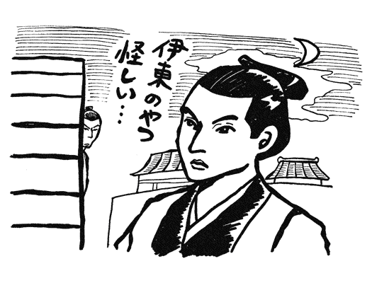

| 幕末維新・あの人の「その後」 新選組から明治の指導者まで (PHP文庫) | |
| 日本博学倶楽部 | |
| PHP研究所 (2003) | |
幕末維新・あの人の「その後」
――新選組から明治の指導者まで
日本博学倶楽部
はじめに
坂本龍馬、西郷隆盛、勝海舟、近藤勇......。今も語り継がれる幕末・明治維新に活躍した主役や脇役を挙げれば枚挙にいとまがない。この時代は、近代日本を形成したまさに「激動の時代」である。
一八五三（嘉永六）年、アメリカ東インド艦隊のペリー提督率いる軍艦四隻が浦賀沖に来航し、日本を震撼させた。しかし、これは近代国家への夜明けともいえるものだった。以後、鎖国政策の崩壊とともに二百五十年続いた徳川幕府の体制は揺らぎ、のちに大政奉還、王政復古の大号令を含む、いわゆる「維新」が成し遂げられたのである。
もちろん、これは民衆にとっても望ましいことだったようだ。この時期には「ええじゃないか」運動や世直し一揆、打ちこわしが頻発し、徳川幕府から天皇政権への転換が期待されていた。
そんな時代であったからこそ、旧態依然とした世を変えようと、傑出した人物が多く輩出されたのであった。
これらの人物がその絶頂期におこなった偉業は周知の通りであるが、ほかにも知られざるドラマはある。
死んだはずが実は生きのびて警察官になった新選組の斎藤一、箱館戦争に敗れたあとにシベリア旅行に出かけた榎本武揚、隠居後は趣味に生きた最後の将軍・徳川慶喜、戦艦が沈没してしまい日本でつくった船で帰国したプチャーチン......。なかには、事業に成功して維新後に財を築いた者もいれば、波瀾万丈な生涯を送った者もいる。
本書では、ペリーが来航した一八五三（嘉永六）年から西南戦争で西郷隆盛が自決した一八七七（明治十）年のあいだを幕末・明治維新ととらえ、その時期に活躍した人物の「その後」を紹介する。本書を読むことで、教科書などには載っていない人物像や、幕末から明治維新に至るまでの歴史的背景・人間関係を知ることができれば幸いである。
日本博学倶楽部
装丁――一瀬錠二（Art of NOISE）
装画――あべゆきえ
本文イラスト 前野 コトブキ
【新選組】
ときは一八六三（文久三）年、
十四代将軍徳川家茂の上洛を警護するために
江戸・小石川の伝通院に二百四十名もの浪士が集結した。
その浪士隊には、のちに新選組の中核となる
近藤勇、芹沢鴨、土方歳三、沖田総司らがいた。
上洛の警護を終え、
江戸へ戻ろうとする浪士隊と決別した近藤ら十三人は京都に残り
京都守護職であった会津藩主松平容保に嘆願書を送って
新選組（壬生浪士）を結成する。
その後、隊士の数は百人ほどに膨れ上がった。
当時、尊皇攘夷派の脱藩浪士らが京都に集まり、
「天誅」と称して開国佐幕派を襲う事件が続発していた。
その治安の回復にあたったのが新選組である。
彼らは、
一、士道に背きまじきこと
一、局を脱するを許さず
一、勝手に金策致すべからず
一、勝手に訴訟取扱うべからず
一、私の闘争を許さず
という五か条の局中法度をつくる。
この隊規に背いた隊士に待っているのは
切腹という名の血の粛清だった。
山形のだんだら模様の羽織を着て街中を練り歩き、
寺田屋事件をはじめとするさまざまな事件を起こした新選組を
人々は恐れたという。
たった六年間しか存在しなかった新選組が
なぜ今も多くの人の心を捉えて止まないのか。
「誠」の旗のもと一本の剣で未来を切り開こうとした
新選組隊士の人間模様の「その後」を探る。
剣での戦いはもう古い!?
新選組を西洋式に武装させた土方歳三
新選組というと、浅黄色の羽織に刀でチャンバラ......という姿が思い浮かぶが、じつは、小銃や大砲の訓練もしていた。だが、西洋式の武器に対する認識が浅く、命中率が低いとされていたことから、「実戦では刀のほうが役に立つ」という意識が強く、西洋式武器の訓練はなおざりになっていた。
この認識が大きく方向転換したのは、一八六八（慶応四）年一月三日に勃発した鳥羽・伏見の戦いがきっかけである。
のちに江戸城で鳥羽・伏見の戦いについてたずねられたとき、副長の土方歳三（一八三五～一八六九）は、「戎器、砲にあらざれば不可。僕、剣を佩き槍を執る。一に用いるところなし」と答えている。大砲の砲撃の前では剣や槍が役に立たず、これからの戦いは西洋式の武器によらねばならないと痛感したのである。
そこで土方は、みずから断髪し洋装に改めて新選組の西洋化に取りかかり、元込銃五挺を購入して隊士たちに小銃の訓練もおこなった。
だが、この新選組の西洋化が、その後の戦力強化に役立ったかというと、そうではなかった。
同年三月一日、新選組が矢島内記の率いる約百名を追加増強し、「甲陽鎮撫隊」として甲府に向かって出発したとき、内藤隼人と称した土方は断髪にマント、ブーツという姿であり、隊士たちは白の鉢巻き、洋服の上着のような綿入れに剣道の胴着、ズボンに草履ばきという和洋折衷の出で立ちだった。
土方らは、会津藩から千二百両、新選組の理解者だった幕府奥医師の松本良順（一八三二～一九〇七）から三千両のほか、幕府からも約二千四百両の軍資金を受領し、大砲五門と小銃五百挺も与えられた。服装も武器もかなり西洋化されている。
だが、せっかくの大砲も五門は運べなかったようで、実際に持参したのは二門のみだった。
甲府城は先に官軍に占領されてしまったので、甲陽鎮撫隊は三月六日、甲州街道の観音坂に関門を築いて、持参した大砲二門を据えようとした。
ところが、分解した大砲を組み立てようとしたところ、大砲にくわしい結城無二三が農兵募集のため陣を離れており、組み立て方を知っている者が一人もいない。分解したときの記憶をたどりながら、苦心して組み立て終わったときには、敵は目前に迫っていた。
しかも、いざ撃とうとすると、砲手の経験者がまったくいない。永倉新八（一八三九～一九一五）や斎藤一（一八四四～一九一五）といった歴戦の幹部たちも加わっていたが、剣豪たちも大砲に関しては素人だったのだ。
作戦では、街道をやってくる官軍には炸裂弾、岩崎山の官軍には散弾を撃ち込むはずだったのだが、砲弾をまちがえて撃ったり、火口を切らずに撃ったため、弾丸がまともに飛ばなかったり、ついには砲口からすとんと落ちて、谷底に転がり落ちてしまう始末であった。
大砲も銃も命中しないまま、正面と左翼から銃撃を受けると、甲陽鎮撫隊は潰走した。戦いは正午ごろにはじまって、勝負が決したのは午後二時ごろ。せっかくの西洋の武器も、取り扱いができなかったばかりに、戦いはわずか二時間ほどで甲陽鎮撫隊の完敗に終わったのである。
志なかばにして殺された
近藤勇の首はどこへいったのか？
新選組局長になる前の近藤勇（一八三四～一八六六）は、天然理心流の看板を掲げる町道場の主だった。武蔵国多摩郡（現・調布市）の豪農の三男として生まれ、江戸で道場を構える師匠の養子に入って近藤家を継いだのだ。
近藤は京都に上って盟友の土方歳三と新選組を組織するが、土方が官軍との最後の戦いである箱館戦争まで戦ったのに対し、近藤は、最初の鳥羽・伏見の戦いより前に負傷して江戸に戻らざるを得なくなる。
江戸では、近藤は改めて甲陽鎮撫隊を組織して関東で戦ったものの敗れ、武士らしく切腹して最期を飾ろうとする。しかし土方の説得に負け、大久保大和という変名を使って板橋の東山道総督府に出頭した。すでに天運は尽き果て、すぐに正体を見破られて十分な裁判も受けることなく処刑された。一八六八（慶応四）年四月二十五日のことだった。
近藤の首は、京都でさらし首にするため酒（一説では塩）に漬けて運び去られ、胴体は板橋にそのまま埋葬された。京都の首は、さらしてあったものを誰かがもち去ったという。
近藤の首を埋葬した首塚というのが愛知県岡崎市にあるが、なぜか首を埋葬したという場所がほかにも二か所あり、墓は四か所もある。ただし、墓には実際に遺体や骨を埋葬してあるものと、供養のためだけに建てるものとがあるから、多くても不思議はない。
新選組の研究者たちの調べによれば、供養墓であることがはっきりしているのは、会津若松市の天寧寺にあるもので、転戦しながら箱館を目指していた土方が、近藤斬首の知らせを聞いて滞在中に建てたものだ。また、東京都荒川区の円通寺にあるものは、上野の山で戦った彰義隊も含めて、旧幕軍の戦死者を追悼するものである。
そのほかのものでは板橋の処刑場近くの、かつての旧家の敷地に永倉新八が建てたものと、近藤の娘の夫に養子として入った甥が菩提寺に建てたものがある。菩提寺のものは、甥が、夜中に板橋へ行って胴体だけの遺体を掘り起こしてもち帰り埋葬した、と語っており、永倉のものは、旧家の当主が総督府の命で埋めたと、その家の子孫が伝承している。一九二九（昭和四）年に墓の修復で掘り出したとき、実際に胴体だけの骨を見たと子孫が証言をしてもいる。
一方の首のほうの墓は、明治時代の半ばに京都の東山山中で見つけたが場所は忘れたという人の証言が、一九三七（昭和十二）年六月二十五日付けの「東京朝日新聞」に載ったことがある。ただし、その墓は今に至るまで見つかっていないし、場所も特定されていない。
また、岡崎市の法蔵寺にある首塚は、さらし首を盗んだ元隊士の依頼で建てられたものと伝えられるが、墓の台座に彫られた人物名や建立年の不自然さが指摘されている。
もうひとつの首を埋葬した墓は山形県米沢市にあって近藤の従兄弟にあたる人物が、首を板橋から盗んで赤羽で焼き、骨を持ち帰って埋めたと伝わる。しかし、首が京都の三条河原にさらされたのは事実だし、従兄弟という人の家系そのものがあやふやなので、話が誇張された結果、観光名所になってしまったのだろう。
近藤の遺体がどこに埋められたにせよ、これだけ墓があるということは、逆賊として処罰された近藤ではあるが、旧幕臣が時を経て次々に新政府の要人になったように、彼の名誉も大きく回復された証といえよう。
結核のせいでここぞというときに
活躍できなかった天才剣士、沖田総司
剣客ぞろいの新選組のなかでも、とくに沖田総司（一八四二～一八六八）は天才剣士として名高い。
沖田は、近藤勇の試衛館道場に学んで十代で早くも免許皆伝となり、二十歳で塾頭になるという才能を発揮した。新選組の結成後は、芹沢鴨（生年不詳～一八六三）暗殺のときに最初の一太刀をふるい、一八六四（元治元）年の池田屋事件では、池田屋の二階で五人もの浪士を斬り伏せている。
この池田屋事件のとき、ドラマなどではよく、沖田が血を吐いて倒れるシーンが登場する。永倉新八の『新撰組顛末記』でも、「沖田が大奮闘の最中に持病の肺患が再発してうち倒れた」とある。喀血したかどうかは不明だが、昏倒したのは史実のようである。
沖田は自分の斬った敵の死体を枕に横たわり、しばらくのあいだは立ち上がることもできず、やがて到着した土方歳三の隊によって祇園の会所に送られた。戦いはまだ続いていたが、戦線を離脱して休むしかなかったのだ。
では、その後の沖田はというと、相変わらず新選組幹部として活躍している。病気だということをうかがわせる記録もない。池田屋事件のとき、すでに肺結核が発病していたとしても、まだそのころは大した病状ではなかったといえる。
当時結核は、死亡率の高い難病である。かかれば安静にして過ごすのが普通だが、沖田は新選組隊士として戦い続けた。
しかし、無理がたたったのか、一八六七（慶応三）年六月、屯所を西本願寺から不動堂村に移転したころから沖田の病状は悪化した。
同年十二月、近藤が伏見で狙撃されたとき、沖田は動くことができず悔しがったという。翌一八六八（慶応四）年一月にはじまった鳥羽・伏見の戦いにも、沖田は参戦したかったに違いないが、とてもそんな状態ではない。負傷した近藤とともに大坂で療養するしかなかった。
鳥羽・伏見の戦いで敗れた新選組が江戸に向かったときには、沖田もともに江戸にいき、新選組が三月に甲陽鎮撫隊として甲府に出発したときには、途中まで同行した。動くのも苦しい状態で行軍に加わったのだから、かなりの気力である。
だが、気力だけではどうしようもない。日野にある土方の義兄宅あたりまではがんばったが、すでに体力は限界に達し、とても甲府まで同行はできなかった。
ついに沖田は新選組から離れ、浅草にあった医師・松本良順の家にかくまわれた。それから松本の家にいたとも、郊外の千駄ヶ谷の植木屋・平五郎の家に移ったともいわれる。
いずれにせよ、沖田はその隠れ家で三か月ほど病臥し、五月三十日に没した。まだ二十七歳という若さだった。
討ち死にしたはずの斎藤一は
生きのびて警察官になっていた
斎藤一は、新選組の副長助勤、三番隊組長を務めた人物で、草創期からの幹部の一人である。
彼は幕臣の子として江戸に生まれ、若いころから無外流の剣を極め、天然理心流の試衛館道場に出入りしていた。そのため、新選組の結成以前から近藤勇らと面識があった。
十九歳のとき、誤って人を斬り殺してしまい、江戸を脱出して京都におもむいたところ、近藤らの浪士隊（新選組の前身）が上洛してきたので、加わったのである。
戊辰戦争では、斎藤は土方歳三らと別れて会津に残り、会津若松郊外の如来堂に布陣していた。同志の多くが高久村の戦いに応援に出かけ、少数で本営を守っていたのだが、その手薄になっているときに敵の奇襲を受けてしまった。多勢に無勢の戦いで、斎藤ら如来堂にいた留守番組は全員討ち死にした......と、多くの者は思い込んだ。
だが、じつは隊長の斎藤をはじめ何人かは、血路を開いて生きのびていたのである。斎藤は、新選組のなかでも沖田総司や永倉新八と並ぶ剣客だったというから、それも可能だったのだろう。
斎藤はその後、会津藩が移封となった斗南（青森県）におもむき、一戸伝八と名乗ったのち、さらに藤田五郎と名を変えた。藤田の名前は、旧会津藩主の松平容保（一八三五～一八九三）に賜ったものと伝えられている。
そこで彼は、会津藩士・高木小十郎の娘の時尾と結婚した。仲人は松平容保だったという。おそらく斎藤は、元新選組幹部として、会津藩主に大事にされていたのだろう。
一八七一（明治四）年または一八七四（明治七）年、斎藤は上京し、警視局（現・警視庁）に勤務した。明治新政府は、元幕府側の人間を数多く警察官として登用したのだ。
一八七七（明治十）年に起こった西南戦争にも、斎藤は警察官として出陣し、新聞に載るほどの奮戦ぶりを見せている。西南戦争では、かつて幕府側だった警察官たちが、戊辰戦争のときの薩摩への恨みから奮戦したといわれており、斎藤もその一人だったのだろう。まして名うての剣客なら、さぞかし西郷軍にとって脅威だったと想像される。
その後、斎藤は、警部補や巡査部長を経て警察を退職したあと、東京高等師範学校附属東京教育博物館の看守となり、さらに東京女子師範学校の校内取り締まり係となった。
斎藤が死亡したのは一九一五（大正四）年のことで、床の間の上で正座して臨終を迎えたと伝えられている。享年七十二であった。
五稜郭を脱出し
土方歳三の形見をもち帰った市村鉄之助
戊辰戦争の最後の戦いである箱館戦争において、土方歳三の世話役として従った隊士に、市村鉄之助という少年がいる。
彼は、美濃国大垣の生まれで、一八六七（慶応三）年、兄の辰之助とともに新選組に入隊した。入隊時で弱冠十五歳の若さだったので、戦力というよりは小姓として雑用を果たし、会津戦争以降は、土方歳三のそばで身のまわりの世話をした。
一八六九（明治二）年五月、箱館戦争の戦況が悪化し、十一日には激戦によって土方歳三が戦死する。当時、土方の付添いだった立川主税（一八三五～一九〇三）が記した『立川主税戦争日記』によると、土方が彼の守備する一本木関門で指揮していると、背後の七重浜から敵が攻め込んできた。土方は、七重浜の敵を撃退して再び一本木に戻ってきたが、そこで銃弾を浴びて戦死したという。
戊辰戦争で降伏し、その後貴重な資料を残した新選組隊士、中島登の記録では、市村鉄之助はこの戦いの日に行方不明となっている。また、神山茂の『幕軍陣歿者氏名考』では、彼は十六歳で病死したとされている。
ところが、じつは鉄之助は、死を覚悟した土方に命じられて五稜郭を脱出し、土方の遺品を届けるために日野（現・東京都日野市）に向かったのだ。土方は、まだ十六歳の少年が死ぬのを哀れんで、遺品を届けさせることによって生き長らえさせようとしたものらしい。
東京にある大東屋が、箱館戦争で新選組の頭取として指揮をとった島田魁（一八二八～一九〇〇）にあてた手紙によると、市村は箱館を脱出後、この大東屋を訪ね、土方から託された品物を届けたようだ。大東屋は土方からの手紙を読んで、実家に託してこの品物を売ったという。それを売った金は、おそらくその後の旅費として、市村に渡したのだろう。
土方はその品物のほか、刀二本を市村に託したようだが、大東屋に着いたときには、その刀二本はすでにもっていなかったらしい。大東屋は、刀は泉谷という質屋に預けたのではないかと推測している。とはいえ、遺品を勝手に質草にするとは思えないから、それも、旅費とするために土方から渡されたものらしい。
箱館から日野までの旅は長い。官軍の目を逃れ、苦労して旅を続け、市村は七月になってようやく、土方の義兄にあたる日野の佐藤彦五郎（一八二七～一九〇二）のもとにたどり着き、土方の遺髪や写真、辞世の和歌、手紙を届けたと伝えられている。手紙には「使の者の身の上頼み上げ候」とあり、佐藤家ではその遺言どおり、しばらく市村を寄宿させ、読み書きや剣術などを身につけさせたという。
一八七一（明治四）年三月、市村は佐藤家を去って大垣に帰郷した。その後の消息は定かでないが、一八七七（明治十）年に勃発した西南戦争で、彼が西郷軍に参戦して戦死したという風聞が佐藤家に届いたといわれる。
妻子への愛着が不幸を呼んだ!?
江戸に戻って戦死した原田左之助
運が強い人物が、ついには悪運にも見放される......というのはよくあることだが、原田左之助（一八四〇～一八六八）の最期はまさにそのようなものだった。
彼は、副長助勤、小荷駄雑具の担当長、十番隊組長と、新選組の幹部職を歴任した人物で、「死にぞこね左之助」のあだ名があった。郷里の伊予松山藩で若党をつとめていたころ、意地の張り合いから切腹しようとし、そのときの傷跡が腹に残っていたためだ。
また、池田屋事件のときにも、奮戦して死んだという噂が流れるほど激しく戦ったが、やっぱり生きていた。原田は何度もむちゃをしては生きのびた悪運の強い人物だった。
だが、その後、彼の悪運も尽きるときがやってくる。
鳥羽・伏見の戦いが終わると、原田は、永倉新八らとともに近藤勇らの本隊と決別し、靖兵隊をつくって会津に向かうが、途中で一人、江戸に引き返した。同志らは驚いて説得したが、原田は頑として聞き入れず、引き返す理由さえ告げなかった。のちに永倉は、原田が突然引き返した理由を、「妻子への愛着に心惹かれたため」と語っている。
原田は、新選組隊士には珍しく、町人の娘と正式に結婚して男児をもうけ、妻子を大事にしていた。しかも、新選組が将軍とともに京を離れた一八六七（慶応三）年十二月、原田の妻はふたりめの子を身ごもっていたという。その妻子が官軍に占領されているはずの京都にいるのだから、原田が心配したとしても不思議はない。
命知らずでむちゃばかりしていた男が、ここに至って妻子のために命が惜しくなったのだが、それは裏目に出てしまう。
原田は、おそらく江戸を経て京都に向かうつもりだった。だが、江戸に戻れば官軍ばかりで、東海道も中山道も官軍に押さえられていて、とても京には戻れない。かといって、いまさら靖兵隊のあとを追いかけることもできない。折しも、江戸では彰義隊が上野で最後の戦いに臨もうとしている。これにでも参加するしか、もはやいき場所はなかった。
原田は彰義隊に入ると、一八六八（慶応四）年五月十五日の上野戦争に参加し、重傷を負った。そのため、本所猿江町の神保山城守邸まで退いて治療を受けていたが、二日後に息を引き取ったという。
途中で別れた永倉の方は戊辰戦争後も生き残っているから、原田も引き返さずに彼と行動をともにしていれば、生き残れた公算が大きい。命を惜しんだために死ぬことになったのは皮肉な話だ。
ただし、これには異説がある。さらにその後、原田が生きのびて、放浪生活をしていたというのである。
日清戦争（一八九四～一八九五）のとき、新選組にくわしい老軍夫がいて、「原田左之助さんでは？」と人に聞かれても、肯定も否定もしなかったという。また、生きて大陸に渡り、馬賊の頭領になったというマユツバものの伝説もある。
「死にぞこね左之助」が上野戦争でも生きのびたのかどうかは定かではない。
コンプレックスが原因だった!?
脱走して捕らえられた山南敬助
新選組の副長というと、土方歳三ばかり思い浮かびがちだが、一八六三（文久三）年の新選組第一次編成のときには、土方と並んで山南敬助（一八三三～一八六五）が副長となっている。さらに同年九月に芹沢鴨と新見錦（一八三六ごろ～一八六三）が粛清され、局長が近藤勇だけになると、山南は総長に昇進した。総長といえば、局長の近藤勇に次ぐ大幹部である。
山南は温厚な人柄から、隊士たちとの人間関係もよく、「さんなんさん」と呼ばれて親しまれていた。幹部の沖田総司などにも敬愛されていたし、壬生界隈の人々にも人気があった。
この大幹部で皆に好かれていた山南が、その後、新選組を脱走して切腹する羽目になるとは、誰も予想していなかったことだろう。
山南は、一八六五（慶応元）年二月二十一日、脱走を決行する。新選組の「局中法度書」に「局を脱するを許さず」とあり、背けば切腹となる。山南はそれをよく知っているにもかかわらず、脱走したのだから、並々ならぬ決意だった。自分は大幹部であるから隊規は適用されないだろうと楽観していたのかもしれない。
脱走の直接の原因は、近藤勇らが西本願寺の集会所を新選組の屯所として借りると決めたことに対して反発したためといわれている。この屯所の移転は土方が主張したもので、山南は、西本願寺の僧侶たちのことを考えて反対していた。それなのに、近藤が土方の意見を採用し、移転を決定したので腹を立てたのだという。
だが、これは直接の引き金で、その背景については諸説ある。一説には、山南には尊皇思想があり、佐幕を推進する近藤と土方に不満があったともいわれ、また、脱走の四か月ほど前に入隊した伊東甲子太郎（一八三五～一八六七）の尊皇攘夷思想に感化されたという説もある。
これに対し、『物語新選組隊士悲話』（新人物往来社）のなかで、石田孝喜氏は、近藤や土方に抱いていた劣等感が原因だとしている。山南は剣客だったが、実戦面での手柄はあまりなく、近藤や土方に後れをとっていた。そうした劣等感を、外交折衝や事務処理などに手腕を発揮することによって抑えていたのだが、事務や外交に得意な伊東甲子太郎が入隊したため、土方らへのコンプレックスが爆発したというのである。
いずれにせよ、脱走した山南は、屯所の自室に書き置きを残したことから沖田総司に馬で追跡され、大津で追いつかれてしまう。観念した山南は、屯所に連れ戻されて監禁された。
「なにか遺言はないか」と永倉新八にいわれて、山南は、「恋人の明里に手紙を渡してほしい」と頼んだ。明里は島原の遊女だったのを山南が落籍せた女性で、元遊女には珍しい上品さをもっていた。
永倉は山南から預かった手紙を使いにもたせて明里のところに運ばせたが、使いの者はなかなか戻らず、彼女もやってこない。運悪く、彼女は恋人の危機を知らずに外出していたようである。
とうとう最期に間に合わないかと、永倉らがやきもきしていたとき、明里は屯所に走りこんできて、格子窓越しに涙ながらの対面を果たした。
そのあと、山南は切腹し、兄弟のように仲のよかった沖田の介錯（切腹する人の首を斬り落とすこと）で果てている。
探索方、山崎烝の池田屋事件での
活躍は本当にあったのか？
探索方の山崎烝（生年不詳～一八六八）は、鍼医者の経験があったことから松本良順に西洋医学の救急法を教えられ、探索と医療の両面から新選組に貢献した人物だ。彼の活躍のなかでも有名なのが、一八六四（元治元）年の池田屋事件である。
小説やドラマなどによく登場する筋立てでは、新選組探索方の山崎烝が大坂で池田屋への紹介状を手に入れ、前もって池田屋に潜入し、配膳の手伝いをしながら、「お腰のものに粗忽をしてはいけませんから」と、志士たちの刀を次の間に移動させている。おかげで、わずか五人で突入した近藤勇や沖田総司らが、二十人以上の志士を相手に勝つことができた、というものである。
だが、これが史実とすれば「その後」が不自然だ。池田屋事件のあと、功労者三十四人に恩賞が下賜されたが、そのなかに山崎の名がないのである。もしも小説やドラマどおりなら、いちばんの功労者である山崎烝にも恩賞が渡されているはずだ。
どうして彼は、事件後、恩賞をもらえなかったのだろうか？
これについては多くの研究者が、小説やドラマで語られた池田屋事件での山崎の活躍は作り話ではないかとしている。
もしも、志士たちの集合場所が池田屋だとわかっていたのなら、土方歳三の率いる本隊が別の場所を探していて、近藤勇らがたった五人で突入したというのもおかしい。のちに永倉新八が語ったところでも、新選組は二手に分かれて宿屋などを片っ端から探索していたという。それなら、山崎が前もって池田屋に潜入するのは不可能だ。
つまり、山崎は池田屋事件には関わっておらず、そのため恩賞が出なかったのではないだろうか。
では、どうしてこんな逸話が生まれたのかというと、別の事件での彼の活躍が池田屋事件と混同されたものとみられている。
池田屋事件から約半年後の一八六五（元治二）年一月、近江源氏の名門である佐々木六角源氏太夫を騙って徒党を組む志士たちが不穏な活動をし、京都と大坂で同時に志士の捕縛作戦が展開された。
大坂では、尊皇攘夷派の志士たちが播磨屋という宿屋に集まっていた。薬売りに扮した山崎は、この宿屋に潜入し、この宿屋で志士たちの動きを探り、その動きを新選組に報告し続けた。
ついに捕縛決行の日、新選組隊士三十名が突入するのに先立って、山崎は、一階の座敷に預けてあった志士たちの武器類を奪い取った。そのため、志士たちのほとんどは戦意を失って捕らえられ、新選組側の死傷者はなかったという。
この活躍が池田屋事件と混同されてしまったのだ。
池田屋事件では恩賞をもらえなかった山崎だが、この播磨屋での活躍は隊内で大きく評価された。こういった活躍もあって、彼は最終的に副長助勤まで出世している。
新選組いちばんの怪力、島田魁は
箱館戦争後も生きのびた
魅力的な群像を描き出した新選組のなかで、一人一人をとり上げていくと、「隊でいちばんの......」という形容詞で語られる人物がかなりいる。そのなかで「いちばんの怪力」と形容されるのが島田魁だ。
島田は美濃大垣藩の出身で、庄屋の両親が藩の御用材を川の氾濫で流失した責任をとって自殺してからは、親戚の家を転々としており、武家奉公を経て江戸へ出た。十九歳のときのことだ。
江戸では剣術道場で修行をしているから、親のない身であれば、剣での自立がいちばんの近道と考えたらしい。また、この江戸で、近藤勇の道場に出入りしていた永倉新八と知り合った。
しばらくして江戸を離れると、その剣の腕が見込まれて大垣藩士の島田家の養子になったが、一八六三（文久三）年、のちに新選組となる壬生浪士の隊員募集を知ると、脱藩して参加した。すでに島田は三十六歳になっていたが、孤児になってから探し続けていた自分の居場所を見つけたような思いがしたからに違いない。永倉と京都で偶然再会したのも、彼に運命を感じさせたことだろう。
体格や年齢からだろうが、同年七月に隊士が起こした大坂力士との乱闘事件の直後におこなわれた隊の組織編成では、調役並監察という役付きにも就いた。長州藩尊攘派の集会を狙って襲った池田屋事件では、最初に不穏な気配を感じとったのが島田で、探索の結果、集会の場所を突き止めるという働きぶりを見せる。
彼は剣術修行のおかげか、どちらかというと学究肌だった土方歳三の直属の実働隊として、長州藩からのスパイの疑いがある隊士や脱走しようとした隊士を粛清するなど、隊としては蓋をしておきたい部分の仕事を裏で多くこなし、実際の攘夷派狩りには第一線に出ることはなかったようだ。
実戦の経験はあまりないまま、鳥羽・伏見の戦いでは永倉らと最前線に出て戦い、多くの死者を出した新選組のなかの生き残り組となった。この戦いでは、逃走のとき装備の重さのために塀を乗り越えられないでいる永倉を、上から差し出した銃につかまらせて引き上げたという、大男ならではのエピソードも残している。
島田は、尊敬する土方とともに江戸、勝沼、流山、会津と転戦したが、このときは足にけがを負った土方を背負って歩くという驚くべき力を発揮した。
土方が決戦と決めて旧幕府軍の榎本武揚（一八三六～一九〇八）とともに箱館戦争を戦ったときも、島田は一緒だった。その時点で壬生浪士からのメンバーは彼一人だ。榎本隊と行動をともにすることが多くなっていた土方に、島田はここでも新選組隊を離れてつき従う。護衛のような役を務めてまるで一心同体のようだったが、そんな二人にも別れの日がやってきた。
箱館総攻撃のさなか、一八六九（明治二）年五月十一日に土方は腹部を狙撃され戦死した。その日、たまたま新選組隊で戦っていた島田は生きのび、その四日後に新選組隊は投降する。そして、市内の寺に収容されたのち、青森へ護送された。盟友永倉とは、途中から袂を分かつが、彼も古参新選組のなかでの生き残りの一人だ。
一八七二（明治五）年に許された島田は、京都で待っていた新選組時代からの妻のもとへ帰り、晩年は西本願寺の守衛として、仲間の隊士の菩提を弔いながら過ごしたという。
近代化についていけなかった
軍師の生き残り、武田観柳斎
新選組では、脱走を試みたり隊規を乱した隊士に対して、切腹や暗殺などの粛清という名の処罰がおこなわれていた。そんな粛清を受けた一人が武田観柳斎（生没年不詳～一八六七）である。
武田は出雲松江藩出身の軍学者で、甲州流軍学を修めた。幕府の直轄といえば聞こえはいいが、しょせんは浪士の寄せ集めといった側面が新選組にはあり、彼のように才があって腕も立つ人材は重きを置かれ、隊士たちの尊敬を集めていた。
比較的早い時期に入隊した武田は、隊の軍学師範役でもあり、月に二、三回は軍事教練をおこなって、すっかり軍師気取りであったという。
ところが、新しく江戸からやってきた、才気あふれる伊東甲子太郎に隊士たちの尊敬も人気も集まり、伊東一派といえるものを形成するほどになったので、しだいに居心地が悪くなっていく。
また、新選組が第二次長州征伐軍に加わったときには、長州軍の洋式装備の威力の前になすすべもなかった幕府軍が、軍制をフランスの指導で西洋式に変えたのにならい、新選組も洋式にすることになって、古い軍学の知識しかない武田は、出番がなくなりつつあった。
しかし、彼はまったく活躍しなかったわけではない。一八六四（元治元）年の池田屋事件では、近藤勇とともに乗り込み、実際に室内で闘って人斬りをした記録もあり、その功績に対して二十両の報奨金が払われている。その年の近藤の江戸いきにも、翌年の長州いきにも同行しているから、近藤の信頼も厚かったといえる。
そんな武田が、なぜか一八六六（慶応二）年に粛清されてしまう。残された記録によると、彼は離隊直後、竹田街道で新選組の仲間に斬られて死んだという。
ほかにも、明治時代になってからの関係者の聞き書きや、日記などから、馬越三郎（一八五一～没年不詳）という隊士が武田の粛清に関わりをもっていたらしいということがわかって、さまざまな説が流れるようになった。
伊東の人気があまりにも高いことに危機感を抱いた武田は、彼に取り入ろうとしたが、それまでの軍師気取りを嫌われて仲間に入れてもらえない。軍制が変更されたという不安もあって新選組に自分の居場所がなくなりつつあった彼が、よりによって薩摩藩邸から出てくるところを馬越に見られてしまい、薩摩藩に身を寄せようとしているのが近藤の耳に届いて殺されたというものだ。
またほかにも、この馬越という隊士は年若い美男だったので、男色家の武田がいい寄っており、隊規が乱れるので処分されたという説もある。
いずれも真偽のほどは定かでないが、馬越が粛清の原因をつくったことは間違いないようだ。武田が殺されたあと、馬越を恨む者がいたので、土方歳三は彼に十分な金額を渡して郷里へ帰したらしい。馬越は正式に新選組を脱退した唯一の人物で、土方にもらった金を元手に、維新後は横浜でガラス商になったという。
最期まで親の七光りで
放蕩無頼の暮らしを続けた三浦啓之助
幕末に散った多くの尊皇攘夷派の志士が、その大志のほかに愛や友情の物語になって現在も親しまれているが、散ったのはもちろん志士ばかりではない。
佐久間象山（一八一一～一八六四）もその一人で、確かに開国論者だったが、それは柔軟な考えにもとづくもので、西洋に屈する開国ではなく、むしろ文明や科学技術の導入に目を向けたものだったのだ。考えてみれば明治政府がとった策と同じなのだが、尊皇攘夷派にはその言動が「西洋かぶれ」と映り、のちに暗殺されてしまう。
彼の息子が三浦啓之助（一八四八～一八七七）で、尊皇攘夷派への憎しみから、新選組に入隊を希望する。おじにあたる勝海舟（一八二三～一八九九）の書状を持参すると、「親の敵を討ちたいという志がある」と書かれていたので、彼は一も二もなく受け入れられた。
まだ十六、七歳で最初はおとなしかった三浦だったが、象山の息子ということで甘やかされ、しだいに調子にのった振る舞いが目立ってくる。
たとえば、三浦がいい刀を探しているというのを聞いて、「刀選びより腕を磨くほうが先だ」と彼のことをからかった隊士を、さっそく刀を購入して斬りつけ、「腕が悪いといわれたので斬ってやるつもりだった」と平然といってのけるなど、幼さゆえだけとはいい難い、こらえ性のない性格を見せたりしている。
新選組の幹部もこれにはあきれて、あたらずさわらずで放っておくと、ますます増長して遊郭遊びをはじめるありさまだった。これは、母親から送られてくる多額の仕送りがあったせいだ。またその金目当てに、本心はともかくおだてる者もいたから、よけいに始末が悪い。三浦の短気は、屯所の前で物売りの女に自分からぶつかっておきながら、有無をいわさず斬り殺すといった傍若無人さにあらわれてくる。
たびたび幹部が注意を与えても、三浦にとってはどこ吹く風で、沖田総司に斬られそうになったことも一度や二度ではない。それに恐れをなしたのか、父の敵討ちの志も忘れて隊を脱走した。新選組の看板のなくなった彼の悪行が世間で許されるはずはなく、ついに罪に問われ、投獄される。
それが彼には幸いした。戊辰戦争で多くの隊士が命を落とすなか、彼は獄中で明治維新を迎え、恪と名を改めて西郷隆盛（一八二七～一八七七）の軍に属した。ここでも父の名が役に立ったのだろう。
しかし、三浦はそれでも腰が落ち着かなかった。外国人に英語を学んだり、慶應義塾に入学したにもかかわらず、恋にうつつを抜かして学校を辞めたりしたのである。その後は司法省に出仕するものの、日本橋でケンカをして、仲裁に入った巡査に乱暴をはたらいたこともあり、気性の荒さは直らず、放蕩の限りを尽くした。
一つを投げ出してもすぐ次の道が見つかるのは、やはり父の偉業のおかげだったのだろうが、動乱期という社会環境が三浦を甘やかす結果につながったともいえる。そんな彼もうなぎの蒲焼を食べて食中毒を起こし、あっけなく死んでしまった。
新選組から分離した伊東甲子太郎を
死に追いやったのはスパイだった
新選組は局からの離脱を認めていなかったが、例外的に、「高台寺党」と呼ばれる一派が分離したことがある。その首領が伊東甲子太郎だ。
彼は一八六四（元治元）年十一月、旧知の藤堂平助（一八四四～一八六七）の紹介で近藤勇と出会い、弟の鈴木美樹三郎ら七人とともに新選組に加わった。
入隊して早々、伊東は参謀となって重用されるが、もともと尊皇攘夷思想をもっており、一八六七（慶応三）年三月には新選組から分離した。「表向きは決別して、薩長の動静を探るためだ」と説明したので、近藤勇はそれを信じたといわれている。
その後、伊東らは孝明天皇（在位一八四六～一八六六）の御陵衛士に任じられ、東山高台寺の月真院を屯所として、着々と尊皇活動を続けた。高台寺党の名はこの屯所に由来するもので、メンバーは伊東をはじめ全部で十五人。新選組入隊時からの部下だけでなく、その他の隊士も仲間に加え、新選組の草創期以来の幹部である藤堂平助や斎藤一まで引き抜いて、上出来のつもりでいた。
だが、伊東の活動は近藤勇や土方歳三に筒抜けだった。引き抜きに成功したと思った斎藤が、じつは近藤派のスパイで、高台寺党の動向を密かに新選組に知らせていたのだ。

そういうこととはつゆ知らず、伊東は、近藤を暗殺して新選組を乗っ取り、倒幕に利用するという計画を立てた。斎藤はそれを知ると、「一大事だ」とばかりに新選組の屯所に駆けつけ、近藤に知らせたのである。
近藤は先手を打って、十一月十八日、伊東を自分の妾宅に呼び出した。「長州諜報活動のための費用を出すことにした」といわれ、伊東はなんの疑いももたずに呼び出しに応じた。
近藤も土方も自分を疑っていないと、伊東は思い込んでいた。実際には薩長と倒幕運動の同志として親交を温めているのだが、近藤や土方は、薩長に接近してスパイ活動をしていると信じ込んでいる、そう思っていたので、伊東は一人で招待に応じて酒をふるまわれ、国事を論じて帰路についた。
伊東は気分よく近藤の妾宅を出て、月真院の屯所に向かった。その途中にある油小路に、新選組の刺客が待ち伏せしているとは知るよしもない。
伊東が油小路に至ると、まずは大石鍬次郎（一八三八～一八七〇）の槍が彼の肩を貫いた。伊東は重傷を負いながらも刀を抜いて刺客と斬り結び、一人を斬り伏せたが、多勢に無勢だ。新選組の隊士たちにはばまれて、ついに彼は絶命した。
続いて新選組は、伊東が土佐藩士の襲撃で負傷したという使者を月真院に送った。高台寺党では罠かと疑ったが、放ってもおけない。伊東の弟の鈴木美樹三郎をはじめ七人が現場に急行し、新選組隊士の奇襲によってそのうち三人が殺され、残る四人は逃亡した。この粛清で高台寺党は滅んだのである。
唯一新選組を二度も脱退した男、
阿部十郎は近藤勇の首を狙った
新選組に名をつらねた何百人という隊士のなかに、ただ一人だけ、二度も脱退した人物がいる。阿部十郎（一八三七～一九〇七）である。
阿部は一八六三（文久三）年六月ごろに入隊したが、近藤勇らとの意見の相違から一年ほどで脱走し、大坂に潜伏した。
新選組には、脱走者は切腹という血の掟があるから、見つかったら殺されるところだが、彼はなんと新選組に復帰する。大坂焼き打ちの陰謀を未然に防いだ「道頓堀ぜんざい屋事件」のとき、隊士の谷三十郎と万太郎に協力して活躍した功績で、脱走の罪は許されたのだ。
その後、彼は一八六五（慶応元）年に伍長と砲術師範を務めるなど、幹部の一人となっていった。一度脱走したにしては、異例の出世といってもいいだろう。
それにもかかわらず、阿部はおとなしく新選組幹部にはおさまらなかった。一八六七（慶応三）年三月に伊東甲子太郎が新選組を離脱すると、自分も脱退し、高台寺党の御陵衛士となったのである。
同年十一月、伊東らが粛清された「油小路の変」では、阿部は運よく京都を離れていたので無事だった。
彼は、生き残った同志の篠原泰之進（一八二八～一九一一）や内海次郎（一八三六～没年不詳）らとともに、復讐を誓った。薩摩藩にかくまわれて、殺された伊東ら四人の仇を討つ機会を待ち続けたのである。
阿部らはまず沖田総司を狙ったが失敗した。そして次に狙ったのが近藤勇である。
彼らは近藤の動きを探り続け、同年十二月十八日、近藤が部下数名とともに二条城から伏見に馬で帰ろうとしていることを知った。
そこで、彼らは伏見街道沿いの空き家で待ち伏せし、近藤が通りかかったときに鉄砲で狙撃した。阿部の撃った弾丸は、近藤の肩と胸の間を貫いた。近藤に命中したのを見て取ると、阿部は刀を抜いて斬りかかった。
近藤の供のうち二人はこの接戦で死亡したが、近藤自身は生きのびた。もしも撃たれたはずみに落馬していれば、ここで命を落としていたところだが、彼はもちこたえたのだ。近藤は、重傷を負いながらも馬をそのまま走らせ、伏見奉行所に駆け込んで一命を取り留めたのである。
この狙撃の場所について、阿部はのちに、「伏見尾張藩邸の横にある街道が曲がる場所で近藤を待ち伏せた」と語っている。
近藤を討ち果たせなかった阿部は、戊辰戦争で薩摩軍に加わり、近藤は薩長の官軍に捕らえられて命を落とした。最終的な結果からいえば、阿部は伊東の仇討ちを果たしたといってもいいだろう。
維新後、阿部は北海道で長いあいだ官職に就いていたが、一八九一（明治二十四）年には果樹園を開き、その後はリンゴの栽培に没頭する生活を送った。
新選組と力士とのケンカをめぐって
暗殺された公事方与力、内山彦次郎
一八六三（文久三）年七月、大坂で局長・芹沢鴨の短気から、力士たちと新選組隊士たちが乱闘となり、力士側五人が死亡するという事件が起こった。この事件のことを近藤勇が大坂西町奉行の松平大隅守に届け出たとき、対応したのが、公事方与力の内山彦次郎（生年不詳～一八六四）である。内山は、諸御用調役、勘定役、地方役、唐物取締役などを兼務し、すぐれた手腕を発揮した人物だ。
やり手な内山は「無礼討ちにした」という近藤の説明に容易には納得しない。
「無礼だけではわからぬ。人命が失われた以上、理由をはっきりさせなければならぬ」
この言葉に近藤は怒り、「くわしく聞きたければ、われらは会津侯の支配下にあるゆえ、そちらに照会されたらよろしかろう」といい残して帰った。
この口論がその後、内山に不運を招くことになる。
翌年五月二十日、夜遅くに番所を出た内山は、駕籠で帰宅する途中、天満橋にさしかかったところで、いきなり新選組隊士の襲撃を受けた。
襲撃に加わった人数は資料によって違う。西村兼文の談をもとにした『新撰組始末記』によると、沖田総司、原田左之助、永倉新八、井上源三郎（一八二九～一八六六）の四人とされ、永倉新八の覚書をまとめた『新撰組顛末記』によると、これに近藤勇、土方歳三らも加えた十人だという。
四人にしろ十人にしろ、とくに剣客でもない高齢の与力一人を暗殺するにしては、かなり大げさな襲撃計画だ。
突然の襲撃に、駕籠を担ぐ人夫やお供は逃げ出してしまい、内山は駕籠から引きずり出されて首をはねられた。彼の首をはねたのは、『新撰組始末記』では沖田、『新撰組顛末記』では近藤とされている。
近藤らは内山をさらし首にするつもりだったが、人が駆けつけてくる気配がしたので、「天下の義士之を討つ」と書いた捨て札を遺体の上に置いて立ち去った。さらに翌日、大坂の今橋の欄干と京都の四条御旅所のそばに、内山を「天下の奸賊」「非道之所業」などと弾劾する貼り紙まで残している。
貼り紙では、内山が悪人だから天誅で殺したのだと主張しているが、本当の動機は、十か月ほど前の近藤勇との口論だったとされる。一年近くも根にもち続けて暗殺するとは、ずいぶん執念深い。
なお、永倉自身が書いたとされる『浪士文久報国記事』には、なぜかこの事件についての記述はない。
新選組の生き証人として
貴重な回想録を書いた永倉新八
永倉新八は、近藤勇の道場に出入りしているうちに親しくなり、ともに京都に向かって新選組を結成した。結成当時から幹部となった永倉は副長助勤、二番隊組長としてつねに第一線で奮戦し、池田屋事件では刀が折れるまで戦って負傷している。
戊辰戦争では江戸まで敗走したのち、近藤らと別れて靖兵隊を組織して会津に向かった。会津の援軍といえば聞こえはよいが、少人数の部隊だから苦戦の連続である。その激戦のなかでも永倉は生き抜き、会津の落城を迎えたのだった。
その後、戊辰戦争が過去のものとなると、永倉は新選組の生き証人となっていく。
まずは、一八七六（明治九）年、永倉は東京・板橋の近藤が処刑されたあたりに、新選組の死者たちを悼む追悼碑を建てた。碑の正面には近藤と土方の名が刻まれ、両側面には百十名の死亡した隊士の名が刻まれている。どのような隊士がいたのかがわかる貴重な碑文だ。
さらに、永倉は新選組についての文献資料も数多く残した。一九〇八（明治四十一）年、家督を養子の伝次に譲って隠居したのち、彼は新選組時代をふり返って書き物に没頭したのだ。これは自分自身の青春の記録であり、亡くなった同志たちに捧げる供養でもある。
たとえば、彼は一九一一（明治四十四）年に『七か所手負場所顕す』を著す。自分の負傷歴を記したこの覚え書きは、新選組で彼がどのような戦いをしたのか、傷を通して後世に伝えている。この覚え書きは、今は遺族の寄贈で北海道開拓記念館に保管されている。
現在、われわれに新選組のことをよく伝える『新撰組顛末記』も、永倉の残した書き物がもとになっている。
一九一三（大正二）年、七十回にわたって「小樽新聞」に連載された彼の回顧談『永倉新八』は、新選組隊士として戦った当事者の語る貴重な記録のうえ、講談としてのおもしろさもあって、たいへんな人気を呼んだ。この連載が彼の死後、長男の義太郎によって『新撰組永倉新八』として一冊の本にまとめられ、さらに戦後になって復刊されたのが、『新撰組顛末記』だ。
『新撰組顛末記』は、質量ともに新選組のことを知るうえで貴重な史料といわれる。新選組に関する史実が比較的くわしく伝わっているのは、永倉のおかげといえる。
最後の隊長となった相馬主計は
流刑先で寺子屋を開いた
新選組最後の隊長は、土方歳三と思っている人が多いかもしれないが、じつは相馬主計（一八四三～没年不詳）である。
相馬は、一八六八（慶応四）年四月に近藤勇が捕らえられたときに、近藤の救出に奔走する土方に命じられ、死を覚悟して総督府に助命嘆願の書状を届けた。しかし、彼も捕らえられてしまい、近藤は斬首に処された。
近藤の処刑後しばらくして、相馬は釈放され、彰義隊残党の再挙に加わったのち、土方と合流して箱館の五稜郭におもむく。
翌年五月十一日に土方が戦死すると、その四日後、新選組がたてこもる弁天台場の主将である箱館奉行・永井玄蕃頭尚志（一八一六～一八九一）は、相馬を新選組隊長とした。名誉とばかりは喜べない。永井玄蕃は、糧食の尽きた弁天台場でこれ以上の抵抗は無理とあきらめ、政府軍への恭順を決定すると同時に、相馬を敗戦処理雑務のために隊長にしたのだ。
相馬に残されたのは降伏しかなく、しかも新選組の全責任を負い、戦争責任者として処断されかねない危険な立場である。
この立場のためか、その後、相馬は終身流罪という重刑になってしまう。はっきりした判決理由は残されていないが、坂本龍馬（一八三五～一八六七）と伊東甲子太郎の暗殺に関わったとされたことと、近藤勇の助命嘆願の書状を届けたときに捕らえられ釈放されながら、再び賊軍に身を投じたことも合わせて、そのような重刑になったのだろう。
未来を閉ざされて伊豆七島の一つである新島に送られた相馬だが、そこでの生活はそれほど不幸なものではなかった。
相馬は、まじめで誠実な人柄からか人々に好かれやすかった。箱館戦争時代に、占領地の箱館市民たちに好意をもたれていたほどだ。おかげで、新島でも島の人々に慕われていた。
しかも、彼は学問に秀で、器用でもあった。自分で設計して家を増築することもできたし、寺子屋を開いて多くの子供たちに読み書きを教えたりもした。学問ができて性格もいい先生だったから、教え子たちにたいへん人気があった。
流人たちの多くは、島で結婚しても帰還の許しが出れば妻子を捨てて帰るのだが、彼は違った。わずか二年で赦免されて、東京に戻れることとなったとき、島で結婚した妻をともなって帰っている。
皮肉なことに、彼は東京に帰ってまもなく割腹自殺をしたといわれる。理由は定かでないが、死ぬ直前に官吏登用の話を断ったことや、困窮にあえぐ元新選組隊士たちになじられたことなどから、現実的な生活と新選組最後の隊長としての意地との間で葛藤があったものといわれる。
赦免されずに終身流刑のままだったほうが、相馬にとっては幸せに天寿をまっとうできたかもしれない。
酒が人生を変えた!?
殺した男の妻と心中した松原忠司
酒が遠因で身を滅ぼした新選組隊士に松原忠司（生年不詳～一八六五）がいる。新選組の柔術師範、四番隊組長、副長助勤を兼ね、一八六三（文久三）年八月十八日の政変では、坊主頭に白鉢巻きという出で立ちから「今弁慶」の異名をとった豪傑だ。
新選組で幹部として重用されていた松原だが、彼の運命は一八六五（慶応元）年、梅雨時のある夜、祇園で酒を飲んだ帰りに四条大橋で通りすがりの浪人といさかいになったことから急転する。
松原は、カッとなった勢いで浪人を殺してしまうが、その過ちを後悔した。激怒しやすい反面、根のやさしい人物だったようだ。
そこで彼は、懐を探って身元を調べ、亡骸を家族のもとに届けることにした。これが、その後の彼の運命を狂わせてしまうことになる。
死体を送り届けた先はいかにも貧しい家で、美貌の妻と病気の子供がいた。嘆く女に本当のことがいえず、松原は思わずうそをついた。
「河原でこの人が数人の武士と斬りあっていた。加勢しようと駆けつけたが、間に合わなかった」
女はこの説明に納得し、礼を述べた。
それからというもの、松原は貧しい母子のことが気になってならない。このままでは暮らしに困ると思い、数日後に訪ねて金を渡した。まもなく子供が病気で死ぬと、いっそう頻繁に女のもとに通うようになった。貧しい母子を助けてあげたいという哀れみや、夫を奪ってしまったという罪悪感から生活を支援するつもりだったのだが、いつしかそれは恋に変わっていく。
松原が女と関係をもち、しばしば女の家に泊まるようになると、そのことが近藤や土方の耳にも入った。殺した男の妻と関係をもっているというのだから、放ってはおけない。
土方に叱責された松原は切腹を図るが、篠原泰之進に止められて未遂に終わった。
その後も、松原は隊務に身を入れることができず、稽古をさぼって、人とろくに口をきかなくなった。こうしてついには平隊士に格下げされてしまう。
松原は隊士たちに後ろ指をさされながら、酒を飲んで悶々とした日を送り、ついに屯所を出奔して女のもとにいった。
松原は女にすべてを告白し、切腹するつもりだと告げた。彼は一人で死ぬつもりだったが、女は聞き入れない。松原が夫を殺したと知っても、愛した男と死ぬことを望んだのだ。
そこで、松原は女を先に殺し、続いて自分も切腹を遂げた。
そういうことが起きているとは知らない新選組屯所では、二日目に松原の出奔がわかり、土方がカンカンになって、篠原らを女の家に急行させる。今度こそ、こととしだいでは切腹させるつもりで、篠原らが女の家に着いてみると、血の海のなかに、二人の死体と遺書があった。
松原が酔った勢いで女の夫を殺してしまってからこの心中のときまで、たったの二か月ほどしか経っていない。それまでの活躍を考えると、あまりにも急な転落だった。
傍若無人な悪業三昧から
同志に殺された初代局長、芹沢鴨
勤皇側でも佐幕側でも、新選組の初代局長、芹沢鴨ほど悪名高い人物はいないのではなかろうか。
彼は水戸の出身で、水戸天狗党に入っていたころから名うての乱暴者だった。粗暴なふるまいから死罪になりかけたところを赦免されたという経歴をもつ。
新選組の局長となってからも、酒乱で暴れまわるうえ、女グセが悪かった。四条堀川の太物問屋・菱屋の妾だったお梅を自分の妾にしてしまったり、少将である姉小路公知（一八三九～一八六三）の妾に手を出したりと、問題が絶えない。
草野剛三という隊士によると、芹沢は瘡（梅毒）を病んでいたという。女グセの悪さから瘡になり、その恐怖をまぎらわせるために深酒をし、酒乱騒ぎを起こしていたともいわれる。
新選組の費用を工面するのも乱暴で、芹沢は富商を脅して借金するなどは日常茶飯事。あげくは大砲をもち出して借金を断った富商に発砲した。
こういった乱暴狼藉、とくに大砲で商家を砲撃した事件はその後、彼の破滅を招くことになる。
新選組は会津藩の預かりなので、新選組が問題を起こせば、苦情は会津藩に向けられる。芹沢が商人に借金をして踏み倒したり、姉小路公知の妾に手を出したりしたことに対する苦情は会津藩にいき、会津藩では彼の扱いに頭を痛めていた。
そのうえ、大砲で商家を砲撃して火事を起こし、しかもその大砲は会津藩が新選組に貸し与えたものとあっては、放置してはおけない。放っておけば、会津藩が信用をなくしてしまう。
困り果てた会津藩では、ついに近藤勇と土方歳三を内密に呼んで、芹沢の暗殺を命じた。
そこで、近藤らは一八六三（文久三）年九月十八日に島原遊廓の角屋で隊の会合兼宴会を開き、芹沢やその腹心を泥酔させた。なにしろ芹沢は神道無念流免許皆伝の腕前なので、そうでもしないと少人数で暗殺するなどまず無理である。
普段は用心がいい芹沢であったが、この日は足元もおぼつかないほど酔い、自分の袴を踏んで二度も廊下で倒れかけた。
芹沢は妾のお梅を、腹心の平山五郎（一八二九～一八六三）と平間重助（一八二四～一八九〇）はそれぞれ芸妓を連れて寝所に入った。芹沢が寝ついたのを確認すると、土方は沖田総司らと部屋に乱入した。
西村兼文の『新撰組始末記』によると、沖田が息を殺して芹沢に斬りつけると、芹沢は脇差で応戦して沖田の鼻の下に傷をつけたが、土方に斬り倒された。芹沢と同じ屋根の下に寝ていた平山は山南敬助と原田左之助に殺され、平間は運よく命拾いしたという。
結局、芹沢が新選組局長の地位にあったのは、たった半年ほどのあいだであった。
新選組の屯所を改善させた
名医、松本良順のアドバイスとは？
新選組のよき理解者だった人物に、幕府西洋医学所頭取で将軍家奥医師の松本良順がいる。
彼が初めて新選組と関わったのは、一八六四（元治元）年のことである。近藤勇が江戸の松本宅を突然訪ねてきたのだ。
近藤は、異国の情勢などについて松本に意見を求め、話しているうちに意気投合した。
この一件から、彼はその後、新選組の頼もしい支援者とも恩人ともなるのである。
翌年五月、松本は十四代将軍、徳川家茂（在職一八五八～一八六六）のお供をして京におもむき、近藤と再会する。近藤は彼を西本願寺の屯所に招待し、酒宴でもてなした。
このとき、松本は隊士の生活を知ろうと土方歳三の案内で屯所内を見て回って驚いた。局長や副長が顔を出しても、裸で横たわっている者が大勢いたからだ。
「局長や副長の前で失礼ではないのか？」
松本があきれていうと、近藤は、彼らはみんな病人なのだと説明する。
隊士の三分の一が病人と聞いて、医者としては放っておけない。
「きちんとした病室を設け、医者に往診させて薬を与えなさい。看護人を置いて病人の世話をさせれば、一人の医師で多くの病人を治療できる。また、病人は入浴させ、全身を洗って清潔を保つことが必要だ」
松本は病室の図まで書いて説明し、衛生管理の必要性を訴えた。
二、三時間後、土方がやってきて、病室をつくったので見てほしいという。いってみると、本願寺の集会所を借りて病室とし、すでに病人を移動させて風呂の用意もできていた。松本は土方の手回しのよさに驚き、「予、その措置の敏捷なるに一驚を喫したり」と、自伝の『蘭疇』に記している。
この松本のアドバイスによって、隊士たちの不健康な生活が改善され、ひと月もしないうちに重病人以外の大半が完治した。それまで病人が多かったのは、不衛生が原因だったのだ。
さらにその後、新選組が京を退いて江戸にきたときにも、松本は近藤の肩の狙撃傷を治療したり、斎藤一ら鳥羽・伏見の戦いの負傷者の治療に力を尽くした。沖田総司も自宅に引き取って治療をしている。
土方を大鳥圭介（一八三三～一九一一）や榎本武揚に推薦したのも彼だった。屯所に病室をつくるよう助言したとき、土方がその場で取り入れて迅速に実行したことから、土方の合理的な判断力を高く評価し、榎本らに推薦したのである。
もしも彼が近藤勇と出会って意気投合したり、それが縁で屯所改善の助言をしたり、新選組の主治医となっていなければ、あるいは箱館戦争に土方や新選組が加わることもなかったかもしれない。
松本自身も、戊辰戦争では旧幕軍に同行して、負傷者の治療をしながら会津から仙台にまでおもむいた。彼は筋金入りの幕府側の医師だったのだ。
【戊辰戦争・西南戦争】
一八六八（慶応四）年一月三日、
徳川慶喜率いる旧幕府軍一万と
鳥羽・伏見を守る薩長軍四千とが
京都南郊で交戦を開始した。
ここに一年半にわたる戊辰戦争がはじまったのである。
数で圧倒的に劣る薩長軍であったが、
指揮系統に欠陥を生じていた旧幕府軍を
わずか三日間で撃破した。
そして上野戦争、北越戦争、会津戦争、箱館戦争と続いた
新政府軍と旧幕府軍との戦いは、
箱館・五稜郭の新政府軍の勝利で幕を閉じた。
しかし、この新政府に誰もが恭順したわけではなかった。
一八七七（明治十）年に起こった西南戦争は、
西郷隆盛を擁する薩摩藩士族の反政府暴動であった。
薩摩側の敗北によって、これ以後、
士族の反乱は絶たれ、反政府運動は
自由民権運動へと移り変わっていった。
なぜ、彼らは戦わなくてはならなかったのか。
そこには、数々の知恵や陰謀が渦巻いていた。
ある者は純粋な義に殉じ、
ある者は裏切りや計略の犠牲となり、
またある者はしたたかに生き抜いて
その後の日本の中心的役割を担うことになる。
幕末から維新期にかけての動乱は
現在の日本をつくる重要な転機であった。
ここでは、そんな時代を疾走した
人物たちの「その後」に触れる。
みずからつくった私学校が原因で
命を縮めた西郷隆盛
薩摩藩主・島津斉彬に見出された西郷隆盛は、その後、一橋慶喜（在職一八六六～一八六七）将軍継承問題で活躍して天下にその名を知らしめた。
一八六七（慶応三）年には王政復古のクーデターに成功し、江戸幕府打倒に大きな功績をあげる。
明治新政府が発足すると参与に就任、東征大総督府参謀になり、戊辰戦争を指導した。勝海舟との会談で江戸城無血開城にも成功している。一八七一（明治四）年に参議として政府に入ると、廃藩置県を断行した人物でもある。彼の偉業は後世に語り継がれるものとなった。
そんな西郷も征韓論では敗北を喫してしまう。一八七三（明治六）年十月、一日も早く遣朝使節を送り、朝鮮国交問題を解決すべしという西郷案と、内治を整え外征するための力を養うべしという岩倉具視案が真っ向から対立した。閣議では西郷の案が採用されたにもかかわらず、岩倉らによる陰謀によって阻止され、敗れた西郷は政府に辞表を提出し鹿児島に帰郷した。このとき、西郷を支持していた六百人もの鹿児島士族の警察官や軍人があとを追った。そのため、鹿児島は政府に不満をもつ士族の中心地となる。
鹿児島に着いた西郷は、そういった士族の若者たちに鹿児島独自の教育を施そうと、一八七四（明治七）年に「私学校」を創設した。
私学校は城山のふもとに位置し、その中心は軍事教育をおこなう「銃隊学校」と「砲隊学校」であった。それぞれ、歩兵出身者、砲兵出身者のために開かれたものである。
若手幹部がつくった私学校の分校は百三十、生徒数はのべ一万一千人にもなり、ついには県政を牛耳るまでになっていった。
西郷の目的は、帰ってきた士族が方向を見失うのを防ぐことで、私学校による適切な教育を得た人間によって、地租改正による検地で起こりうる紛争を未然に防ごうと考えていたのである。つまり、鹿児島の県政を察し、故郷を愛する心から発したものだったのである。
しかし、この義理人情が西郷自身の墓穴を掘る結果になってしまった。
一八七七（明治十）年一月二十九日、西南戦争の引き金となる火薬庫襲撃事件が起きてしまう。事件のことを聞いた西郷は、思わず「しまった」と叫んだという。この事件は西郷の私学校生によるものだったのだ。
当時、鹿児島には政府の火薬庫や兵器工場があった。政府軍がそこの弾薬を運び出すためには、事前に鹿児島側へ通告し、しかも昼間に行なわなくてはならない。それにもかかわらず政府軍は約束を破り、深夜に運び出そうとしたのである。これを知った私学校生千人が火薬庫を襲撃し、その暴動は四日間にも及んだ。
西郷はなんとか事態を収拾しようとしたが、政府との対決を望む不平士族を押さえることができなかった。そしてこの混乱のなかで囁かれた、政府による西郷暗殺計画が決定打となる。
同年、もともと武力対決など望んでいなかった西郷が、押し出されるような形で擁立され西南戦争が勃発した。
九州各地を転戦した西郷は、九月二十四日に総攻撃を受けて軍が壊滅状態になると、城山で自害した。
西南戦争で熊本城を守った谷干城は
学習院で超スパルタ教育をおこなった
土佐出身の谷干城（一八三七～一九一一）は、一八六七（慶応三）年に乾退助（のちの板垣退助）とともに西郷隆盛に会って薩土密約を結び、倒幕運動を加速させるという役割を果たした。
とくに彼の名を高めたのが西南戦争である。
西南戦争の勃発に先立つ一八七六（明治九）年十一月、谷は熊本鎮台司令長官に任命された。西郷の挙兵が予想されたので、それに備えての任命である。
谷は密偵を鹿児島に潜入させ、西郷が挙兵する数日前にその情報をつかんで作戦を立てた。それは、進軍せずに熊本城で籠城するという作戦である。
政府軍が到着するまでそれほどかからないという思惑から、籠城に踏み切ったのだが、その読みははずれてしまう。政府軍の到着は遅れ、一万数千人という西郷軍を相手にした籠城は五十日以上に及んだ。
そのあいだには、谷が敵陣を眺めているときに敵兵に狙撃され、弾丸がのどを貫通するという事件まで起きている。幸い弾丸が気管を外れていたので、一週間ほどで再び指揮をとれるようになった。もしも弾が気管にあたって彼がここで命を落としていれば、熊本城は西郷軍に奪われ、西南戦争はあるいはもっと長引いていたかもしれない。
谷は多くの戦没者を出しながらも、政府軍が来るまでもちこたえ、その功績を讚えられた。
その後、谷は順調に出世しながら、わずか四年で軍籍を離れる。職を辞した前年に、西部検閲使として九州地方を視察したとき、征台の役（一八七四）で戦病没した兵士たちの合葬墓所跡を見たのが原因だった。長崎県下梅ヶ崎にあった合葬墓所が移転されたあと、地面にまだ白骨が散らばっているという粗雑な扱いをされていた。
そのことに谷が腹を立てて政府に訴えても、長崎県令の減俸諭告という形式的な処置しかとられなかったのだ。
軍を退いた谷は、一八八四（明治十七）年に宮内省の二等官と、同時に学習院の院長に任命された。
当時の学習院の生徒である華族の子弟たちは、江戸に遊学したときに貧しい暮らしをした経験をもつ谷の目から見ると、いかにも柔弱で甘えている。たとえば、従者をともなって人力車で通学する者も珍しくない。
これではいけないと、谷は強壮健康な体と活発有為な精神を育成すべくスパルタ教育を開始した。
従者付きでの人力車通学はもちろん禁止だ。それだけでなく、通学のときには、兵隊と同じ背嚢を背負わせた。
授業では柔道や水泳といったスポーツだけでなく、撃剣、銃槍対闘術など、軍隊のような演習もさせた。厳しい軍隊の教練を課して、生徒たちを有用な人材に鍛え上げようとしたのである。
彼のこの教育方針は、太平洋戦争が終わるまで学習院で踏襲され続けた。
西南戦争で軍旗を奪われた乃木希典は
日本一の美女を退学にした
一八七七（明治十）年の西南戦争で、政府軍の軍旗が西郷軍に奪われるという事件が起こっている。このときの政府軍の当事者は、のちの陸軍大将で当時は少佐で十四連隊長だった乃木希典（一八四九～一九一二）である。
乃木は、西郷軍の奇襲を受けて退却するとき、軍旗をまいて河原林雄太少尉に背負わせ、十数人の護衛をつけて後方にさがらせた。だが、退却する途中、不運にもその河原林が逃げ遅れ、銃撃で倒されたのである。
西郷軍は、倒した敵が軍旗を背負っているのを見ると、これを奪って熊本城外の高地に掲げて城兵を嘲った。
一方の乃木は、軍旗を失ったと知って、自刃しようとした。明治時代には、軍旗は錦の御旗に準ずるものとされており、それを失うのは一大事だったのだ。
征討総督本営は、止むを得ない事情だというので、乃木を処罰しなかった。それが彼をいっそう苦しめた。
この事件のあと、乃木は異常なほどに勇猛な戦いぶりを見せる。軍旗を奪われた衝撃が大きく、死に場所を求めるかのように奮闘したのだ。
司令官となった日露戦争（一九〇四～一九〇五）でも、彼は戦死を望むかのような戦い方をし、戦後には自決を願い出て明治天皇（在位一八六七～一九一二）に止められている。戦争に勝って英雄と讚えられたが、多くの部下たちを戦死させたことへの自責の念のほうが大きかったのだ。
この乃木がその後、さらに一転してなんと学校の院長先生になり、日本一の美女を退学させたことはあまり知られていないのではなかろうか。
一九〇七（明治四十）年、乃木は「華族教育のこと、すべて卿に一任す」という勅令を受け、陸軍大将のまま、学習院長を兼任することになった。
軍人の院長というと恐そうだが、意外にも乃木は生徒たちに恐がられることなく、「おじいさん」と呼ばれて親しまれた。軍人のときとは別人のような気のいいおじいさんとなって、生徒たちに接したのだ。
だが、院長になった翌年、女学部三年の十六歳の女生徒が日本初の美人コンテストで第一位に選ばれると、乃木は激怒した。
なにしろ、軍旗を失ったからといって自刃しようとするほど彼は厳格でまじめな人間である。日ごろは生徒たちにやさしく接していたとはいえ、やはりその厳しい態度は失われていない。「女学生が美人コンテストに応募するとはけしからん！」と腹を立て、その女生徒を退学処分にしてしまったのだ。
女生徒の父親が慌てて上京し、乃木に抗議したが、彼は一向に譲ろうとしない。女生徒は泣く泣く学習院を去った。
とはいえ、やはり乃木も、退学にしたままではかわいそうだと思ったのだろう。日露戦争のときの戦友の息子に彼女を紹介して縁談をとりもち、みずから媒酌人をつとめたといわれている。
西郷隆盛の幻に怯えていた!?
ロシア皇太子に斬りかかった津田三蔵
伊賀上野（現・三重県）の藩医の次男として生まれた津田三蔵は、一八七〇（明治三）年に上京し東京鎮台に入営、ついで名古屋鎮台へ移った。
その後、伍長に昇進した彼は西南戦争に参加した。そこで戦功を立てて軍曹に上がり、勲七等と一時金百円を授かるという栄誉に輝いている。
西南戦争で、西郷隆盛は戦いに敗れ自害したが、あるとき、西郷がじつはロシアに逃れて生きているという噂がまことしやかに流れるようになった。その西郷がロシア皇太子に従って帰国するのだというのだ。
この噂を真実と思い込み深刻な衝撃を受けていたのが、当時滋賀県守山署の巡査になっていた津田、その人である。西郷が帰ってくれば西南戦争の功績によってせっかく賜った勲章を返納しなければならない......。津田は西郷帰朝を信じ込み、極度の被害妄想に陥ったのだった。
一八九一（明治二十四）年五月十一日、ロシア皇太子ニコライは、今の大津駅のそばを通りかかった。津田はこの日、路上警備にあたっていたのだった。皇太子の俥が津田の前にさしかかるやいなや、津田はサーベルを抜いて車上の皇太子に斬りかかった。ニコライが右後頭部に受けた傷は長さ九センチ、骨に達する重傷だった。津田は後続の王子や車夫など周囲の人間に取り押さえられ、捕縄が打たれた。これがいわゆる大津事件である。
その衝撃は日本全土に広がった。発足まもない松方正義内閣の政府首脳は世界の強大国のロシアを怒らせてしまうのではないかと真っ青になった。真剣に討議した結果、明治天皇が事件の翌日関西に向かい、翌十三日には、ニコライ皇太子を見舞ったのだった。
津田は事情聴取に対して、ロシア皇太子をさして「我が天皇陛下に大変無礼である」と非難したという。天皇に会う前に遊覧するなどもってのほかだというのだ。しかしその裏には、西郷の幻影に怯え、自分の得た殊勲を奪おうとする人間は殺さなければならないという強迫観念があったようだ。
政府はロシアに配慮して、津田に大逆罪を適用し、死刑となることを望んだ。しかし、大審院（のちの最高裁判所）はこれに異論を唱える。異国の皇太子に大逆は適用できないとし、謀殺未遂を主張した。大審院の奔走の結果、五月二十七日、津田に無期徒刑の判決が下された。
北海道の釧路刑務所に送られた津田は、その半年後に衰弱死したという。
榎本軍に加わったブリュネは
のちに明治政府に感謝されていた
箱館の五稜郭を本拠とした榎本武揚の軍には、ブリュネが率いる十人のフランス軍人が加わっていた。
彼らは、一八六七（慶応三）年に来日した時点では幕府の軍事顧問団であったが、幕府の崩壊に際して幕府からは解雇通知、本国からは帰国命令を受け取った。だが、ブリュネにとって帰国は不本意で、新政府への就職を望んだが断られたため、奥羽列藩同盟の招きに応じて箱館におもむいたのだ。フランス軍人として戦えば国際問題になるので、彼らは表向きは軍職を辞し、フランスの民間人として戦争に参加する。
箱館で、ブリュネたちは、海岸の防備や占領地の防衛、陣地構築、軍事操練などを指導した。
本国の命令を無視して不利な軍隊の教官になるというのは、ずいぶん大胆だが、その後、彼らは無事に母国に帰れたのだろうか？
この箱館戦争は、周知のように激戦ののち五稜郭軍の降伏で終わっている。しかし、ブリュネたちは、賊軍の一味として処罰される前、旧幕軍の敗色が濃くなった一八六九（明治二）年五月二日に箱館を脱出している。フランス海軍がいつでも彼らを救出できるように軍艦を箱館に待機させていたのだ。
例外として、十人の軍人のうち、海軍教師のコラッシュだけは、三月に新政府の捕虜となって東京に送られ、裁判で死刑の判決を受けていた。だが、新政府もフランスと争いたくはない。結局、彼も横浜でフランス海軍に引き渡され、ブリュネたちとともに本国に帰ることができた。
フランス本国からの命令に背いたブリュネたちだが、ちゃんと救出してもらえただけでなく、帰国後、軍人に復帰して、普仏戦争に参加しているし、順調に昇進もしている。
それでも明治政府には嫌われただろう......と思ったら、そうでもなかった。箱館戦争直後には非難されたが、十二年後の一八八一（明治十四）年には勲三等旭日章、一八八五（明治十八）年には勲二等瑞宝章をもらっている。
反政府軍に味方したのに勲章をもらうというのは不思議に思えるが、じつはこのときには、箱館戦争で反政府軍にいた他の何人かも出世している。明治政府は、旧幕軍の有能な人材を登用する方針をとったのだ。
たとえば、箱館戦争で旧幕軍にいた田島応親は、のちにパリ駐在武官となった。これは、ちょうどブリュネが最初に勲章をもらった年と同時期なので、関係があるという説もある。
また、旧幕軍の指導者だった榎本武揚は、一八八五（明治十八）年から、逓信、農商務、文部、外務などの大臣を歴任するまでに出世した。この出世と同時に、彼は、かつての教師であるブリュネを叙勲するよう奏上したのである。
つまり、ブリュネは反政府軍にいたかつての教え子たちが明治政府で出世したおかげで、勲章を受章したというわけだ。
蝦夷共和国を夢見た大鳥圭介は
洋学の知識から新政府に重宝された
江戸の開城後、降伏をよしとしない人々が総督に選んだのは、伝習隊の隊長、大鳥圭介だった。伝習隊は、フランス式の訓練を積んだ幕府軍から大鳥が編成した部隊である。大鳥は西洋砲術の専門家であったが実戦経験がない。そこで一度は断ったのだが、請われてこれを受け、土方歳三を参謀に選んで各地を転戦した。
江戸開城時に江戸を出て戦った人々のうち、海軍の主将が榎本武揚だったのに対し、陸軍の主将は大鳥だったのである。
この陸戦部隊は、会津戦争で敗れると仙台で榎本武揚の率いる旧幕府艦隊と合流した。大鳥は、蝦夷共和国を夢見て箱館の五稜郭におもむき、陸軍奉行に選ばれている。
その後、箱館政府が官軍との戦いに敗れて降伏したとき、大鳥は榎本たちとともに投獄された。
だが、一八七二（明治五）年に釈放されると、榎本の場合と同じく昇進は速かった。大鳥は工部省（のちの逓信省）を中心に重用されて、工部大書記官、工部技監と重職をのぼりつめた。新政府はなすべき仕事が多いことなどから、旧幕府側にいた人間でも有用な人材は登用するという方針をとっていたのである。
大鳥は医者の家に生まれ、緒方洪庵（一八一〇～一八六三）の適塾などで蘭学を学んでいた。大村益次郎（一八二五～一八六九）や福沢諭吉（一八三五～一九〇一）などは適塾の同窓生だ。それに、西洋砲術の大家である江川太郎左衛門（一八〇一～一八五五）の私塾で、黒田清隆（一八四〇～一九〇〇）などとともに砲術を学んだこともある。
これだけ洋学の知識があり、しかも新政府の要人と同窓生ということもあって、大鳥は新政府に高く評価され、重用されたのだ。
さらに彼は、工部大学（現・東京大学工学部）学長、学習院長、華族女学校の校長なども歴任した。
工学や教育に加え、大鳥は外交官としても活躍した。語学にすぐれ、西洋事情に通じていることが、さまざまな外交折衝に役立ったのだ。
たとえば、釈放されてまもない時期に、大鳥は、アメリカ人のウイリアムや会津の南保らとともに、サンフランシスコやニューヨークなどアメリカの大都市をめぐり、さらにイギリスにもおもむいた。彼は英米の商業や工業を視察し、黒田清隆に報告したのである。
一八八九（明治二十二）年には、清国駐在特命全権公使となり、その四年後には朝鮮駐在公使となっている。清や李氏朝鮮を追い込んで、日清戦争のきっかけをつくっていったのは、じつは大鳥なのである。
かつて官軍に追いつめられるようにして戦った大鳥が、出世してから打って変わって他国を追いつめていくのは、歴史の皮肉ともいえよう。
自刃した白虎隊の生き残り、飯沼貞吉は
朝鮮半島の電線架設に活躍した
戊辰戦争の悲劇として名高いのが、一八六八（慶応四）年八月二十三日の飯盛山での白虎隊の自刃だろう。
白虎隊は、会津藩の十五～十七歳（のちに十六～十七歳に改められる）の藩士で構成された少年隊で、六つの隊に分けられていた。そのうち自刃したのは、士中二番隊のなかの十九人の隊士たちである。
士中二番隊は兵糧をもたずに出発してしまい、隊長の日向内記（一八二六～一八八五）が食糧調達のために隊から離れてなかなか戻ってこないことに焦れて、勝手な行動に移った。そのため、敵の一斉射撃に見舞われ、二手に分かれて逃げたところ、一方のグループ十九人の眼下に会津城や町が炎と黒煙に包まれている光景が広がっていた。それを見て、てっきり会津城が炎上したと思い込んだ少年たちは、絶望して自刃に至ったのだ。
ただし、彼らのうちでただ一人、最年少で数え十五歳の飯沼貞吉（一八五四～一九三一）だけは一命を取りとめた。脇差でのどを突いて気を失ったところを、息子を捜しにきた別の隊士の母親に発見され、救出されたのである。
その後の飯沼は、助かったことを素直に喜べる心境ではなかった。一人だけ生き残ったことに苦しみ、自刃して果てた仲間たちに申し訳なく思って、自刃に至るまでのことを彼はしばらく語ろうとはしなかった。「国亡ばばともに亡びん、此れ男子の心なり」という思いを、彼も自刃した仲間たちと共有していたのだ。
それから四年間ほどの彼の足跡はわかっていないが、一八七二（明治五）年八月二十六日に名を貞雄と改め、新たな出発をする。工部省からの辞令を受け取って、赤間関（現・山口県下関）局に勤務することになったのだ。
このときから、飯沼は工部省（のちの逓信省）の電線技師の仕事に生涯を捧げることになる。文明開化によって日本じゅうに電線が張り巡らされていった時代にその先駆けとして活躍し、一八八七（明治二十）年には逓信省工務局第一課長に昇進している。
一八九四（明治二十七）年に日清戦争がはじまると、彼は京城（現・ソウル）―釜山間の電線架設を担当した。
日本軍が征服した土地での仕事だから、きわめて危険である。周囲は身を守るためにピストルを携えるように忠告したが、彼は、「わたしは白虎隊で死んでいるはずの人間です」と笑って答え、聞き入れようとしなかった。白虎隊から二十六年という歳月を経てなお、自刃した同志たちへの思いがあったことがわかる。
彼はこの仕事に成功し、半世紀近く経った一九四〇（昭和十五）年、「福島民報」が『逓信文化七十年』を連載したとき、「日清役最初の勝報、飯沼の使命成功、白虎隊の生き残り」と紹介されて有名になった。
とはいえ、彼自身はこれを知らない。これより九年前、一九三一（昭和六）年に死亡しているからだ。仮に自分が有名になるまで生きていたとしても、生き残ったことに苦しみ続けた身であれば、「白虎隊の生き残り」と讚えられても喜ばなかっただろう。
彼の墓所は死亡した仙台市内にあるが、遺言によって飯盛山にも墓碑が建てられている。
火消しで名高い新門辰五郎は
のちに将軍の警護もおこなっていた
幕末の火消しの親分で、仁侠の徒としても名高い新門辰五郎（一八〇〇～一八七五）は、本名を町田辰五郎という。新門辰五郎の名は、町田家が浅草寺の新門の衛士だったことからついたあだ名だ。
彼はとびをやるかたわら町火消し十番組の頭取になり、江戸の消火に活躍するが、一八四五（弘化二）年、四十五歳のとき、火事の際に有馬藩邸の抱え力士とケンカになった。脚色されて芝居や講談にもなったほど有名なこの事件がもとで、辰五郎は、石川島の人足寄場に送られてしまった。
この年齢で罪人になったのなら、辰五郎親分の活躍もこれで終わりかと思うかもしれないが、その後、辰五郎はいっそう華々しい活躍をすることになる。
彼は翌年一月、人足たちを指揮して江東方面の大火事の消火にあたり、その功績で特赦となって早くも江戸に帰ることができた。
しかも、辰五郎は罪を許されただけでなく、子分三千人を率いて江戸市中の警備にあたることとなった。一町人でありながら重要な役目を与えられたのだから、異例の抜擢である。彼の娘がのちの十五代将軍、一橋慶喜の愛妾となったことから、幕府から厚く信頼されたのだ。
一八六二（文久二）年、慶喜が上洛するときには、辰五郎は子分二百人を連れて将軍の警護にあたった。愛妾の父親とはいえ、元町人が将軍の身辺を警護するというのは前例のないことだ。
辰五郎は、将軍の信頼によく応えた。これは次のような逸話にもあらわれている。
一八六八（慶応四）年、鳥羽・伏見の戦いで幕府軍が敗れたとき、慶喜は大坂から船で江戸に逃れるのだが、うっかり大坂城内に大金扇の馬印を置き忘れてきてしまう。これを取りに戻ったのが辰五郎だったという。
大坂城には敵軍が迫っており、きわめて危険な状況だった。決死の覚悟がなければできない。辰五郎はあえてそれを引き受け、馬印をもって敵軍のなかを突破し、陸路で江戸にもち帰ったのである。
さらに官軍が江戸に迫ったとき、辰五郎は、江戸城の責任者となった勝海舟から「江戸の治安を守ってほしい。もしも交渉が決裂したときには、江戸じゅうに放火するように」という命令を受けた。
官軍の占領下では、辰五郎は上野で戦死した彰義隊の隊士たちを葬っている。官軍に処罰される恐れがあったのだが、彼はそれを承知のうえで子分を連れて上野の山に入り、死体を火葬したのだ。
彼のこういった幕府への忠誠は罪に問われることはなかったが、在京時に京都河原町に建てた邸宅は明治政府に取り上げられ、京都府知事の官舎になった。
戊辰戦争で苦汁をなめた佐川官兵衛は
仇敵薩摩に恨みをぶつけて戦死した
戊辰戦争で会津藩が降伏したとき、会津藩の家老職にあった佐川官兵衛（一八三一～一八七七）は、一八六八（慶応四）年の鳥羽・伏見の戦いから会津戦争まで幾多のいくさを戦い抜いて、「鬼の官兵衛」の異名をとった歴戦の勇士である。
佐川は直情的だが信義に厚い性格で、「三百石以上の嫡子は、人の上に立つものとして、学問を修めなければならない」という会津藩の決まりから推して、高い教養を積んでいたと思われる。
鳥羽・伏見の戦いでは敗れたが、そのあとは各地を転戦しながら戦い、とくに五月三日の片貝の戦いでは、薩摩や長州などの兵と接戦し勝利している。こういった戦績により、家老に抜擢されたのだ。
会津戦争では、佐川は西軍との和議に強く反対した。勝利を得るまで藩主松平容保にも拝謁しないと誓い、戒名を書いた紙片を懐に入れて決死の覚悟で奮戦したが、九月二十四日、降伏を知らせる容保からの親書が届く。藩が降伏すれば、武装解除するしかない。
無念の敗戦に苦汁を味わった佐川だが、その後、一八七四（明治七）年になって、憎んでいた新政府に仕えることになる。この年、東京警視庁が設けられ、その長官として就任した川路利良（一八三四～一八七九）が、「鬼の官兵衛」と讚えられた佐川の武勇と人望を高く評価し、警視庁への出仕を求めたのである。
佐川にしてみれば、仇敵に仕えるなどとんでもないこと。しかし、現実問題として、困窮にあえぐ旧会津藩士たちに生計の道を立ててやる必要があり、三百人の旧藩士を連れて警視庁に就職した。
やむを得ない出仕だったが、一八七七（明治十）年に西南戦争が勃発したため、彼らに戊辰戦争の恨みを晴らす機会が訪れる。佐川は政府軍の抜刀隊の小隊長となり、多数の旧藩士を含む警察官たちとともに出動したのだ。
佐川は、西郷軍に包囲された熊本城の救援に向かった。熊本県阿蘇郡の二重峠近くまできたところで、西郷軍が二重峠に砦を築きはじめているという情報が入る。要害の二重峠に砦を築かれるとやっかいだ。
「砦が完成する前に、急襲して撃滅すべきです」
上官にそう進言したが、この策はなかなか採用されず、やっと出陣したときには、砦は完成してしまっていた。
これを攻め落とそうと進軍する途中、佐川らの軍は西郷軍と遭遇して激戦となった。
佐川には薩摩に対して戊辰戦争の恨みがある。長州に復讐することはできないが、薩摩にならば積年の恨みをぶつけることができる。
戦いは七時間に及び、佐川と西郷軍の小隊長、鎌田雄一郎の一騎打ちとなった。いずれも剣の達人である。
佐川は鎌田を追いつめ、仇敵の薩摩隼人に一太刀浴びせようとした。だがそのとき、薮の陰にひそんでいた西郷軍の狙撃兵が彼を狙い撃ちした。三発の弾丸を受けた佐川は前のめりに倒れてそのまま命を落としたのである。
会津藩娘子隊を結成して
戊辰戦争に散った中野竹子
戊辰戦争で西軍（新政府軍）が会津若松に迫ったとき、会津藩は女性たちを安全のために城内に避難させようとした。しかし一方では、多くの女性たちが、武士の足手まといにならぬよう自害していった。
そんななか、避難も自害もせずにみずから武士たちに混じって戦うことを選んだ女性たちもいた。中野竹子（一八五〇～一八六八）が率いた娘子隊である。
竹子は江戸常詰の会津藩士、中野平内忠順の長女で、江戸で生まれ育ったが、一八六八（慶応四）年二月、藩主の松平容保が江戸から会津若松に戻るとき、一家で同行した。
半年後の八月、西軍進軍の報が伝わると、竹子は、母の孝子や妹の優子ら二十人ほどの女性たちとともに、敵に立ち向かうことを誓い合ったのである。
その後、八月二十三日にいよいよ敵軍が迫ると、彼女たちは行動を起こした。髪を切り、袴をはき、若武者のような姿で城下から十二キロ離れた坂下に向かった。そこに藩主の義姉の照姫がいると聞き、護衛するつもりだったのだ。
照姫のことが誤報とわかると竹子らは落胆したが、翌日には坂下の軍事方にいって、従軍したいと懇願した。
「婦女子を戦わせたとあっては会津藩の恥だ」
軍事方ではそう拒否したが、竹子たちが一歩も引かない。ついに軍事方はその熱意に動かされ、古屋佐久左衛門（一八三三～一八六九）を隊長とする衝鋒隊に入れた。
翌二十五日、衝鋒隊は城下に向かう途中で西軍と遭遇した。
激しい銃撃戦となったが、最新装備の西軍に対して、衝鋒隊は不利である。そこで、隊士たちは身を低くして前進し、刀を抜いて白兵戦にもち込んだ。竹子らも薙刀を振るって戦った。幼いころから薙刀などの武芸を習っていた竹子は、女性といえどもかなりの腕利きである。同じく薙刀を得意とする平田小蝶とともに娘子隊の先頭に立って、西軍に迫った。
だが、西軍の銃撃によって衝鋒隊は敗走を余儀なくされ、竹子は銃弾を胸（額ともいわれる）に受けて倒れた。
瀕死の竹子に介錯を請われて妹の優子が首を斬ろうとしたが、乱れた髪が首にからんでなかなか斬れず、一説によると三度も刀を振るったという。
やむなく優子は姉の死体をそのままにして、母とともに退却した。
高久陣屋まで退却すると、衝鋒隊に加わっていた農兵の吉野吉三郎が、竹子の首と遺品の薙刀をもってきた。優子が介錯するのを見て、竹子の首を切り落とせなかったことに気付き、切り落としてもち運んできたのである。
この会津戦争で、会津藩とその援軍の戦死者は二千七百人あまりだったが、なんとその一割にあたる二百六十人が女性たちであった。竹子はその一人で、まだ二十二歳の若さだった。
唯一脱藩した大名、林忠崇は
職を転々としながら昭和まで生きた
戊辰戦争のとき、諸大名のなかでただ一人、脱藩して戦った人物がいる。上総請西藩一万石の藩主林忠崇（一八四八～一九四一）である。
忠崇は、戊辰戦争のときにはまだ数え年で二十歳だったが、「将来は幕府老中になる器」と評されていた。その彼のもとに、一八六八（慶応四）年四月二十八日、人見勝太郎（一八四三～一九二二）と伊庭八郎（一八四三～一八六九）に率いられた遊撃隊がやってきて、ともに戦うことを呼びかけた。
これに応じた忠崇は、閏四月三日、請西藩士五十九人を連れて脱藩した。藩主自身が脱藩した例はほかにない。上総請西藩には官軍と戦う軍事力が到底ないため、藩と謹慎中の徳川慶喜に迷惑がかからないように、このような前代未聞の道を選んだのだ。
忠崇の目的は徳川家の再興だった。出陣にあたって忠崇が一同に読み聞かせた軍令状でも、それは最初にはっきりと明記してある。
彼らが出陣するとき、村人たちはみんな、道ばたに土下座して見送った。佐幕の気風の強い地域なので、みずから脱藩してまで戦おうとする殿様は領民たちに感銘を与え、期待もされたのだ。
その後、忠崇は官軍側についた小田原藩と戦ったり、奥羽列藩同盟の諸藩を訪ねたりした。彼は剣の腕に覚えがあり、若さもあって、みずから前線で戦いたがったが、さすがに周囲に止められて後方にいたという。
しかし、彼らの遠征は連戦連敗に終わる。九月には米沢藩と仙台藩が相次いで降伏し、手を組んで戦える藩もなくなった。
このときになって、忠崇は、思いがけない知らせを耳にする。情報収集のためにおもむいた仙台城下で、徳川家が存続するという話を耳にしたのである。
新政府は、閏四月二十九日に徳川家の存続を決定していた。忠崇が脱藩して戦いをはじめた目的は、じつはその時点で果たされていたのだ。
「これ以上戦ったら、いくさのためのいくさ、私のためのいくさになってしまう」
そう判断した忠崇は、十月に降伏を申し入れた。彼とともに脱藩した藩士たちのうち、十六人は戦死、または病没していた。
彼にとっては処刑も覚悟のうえの投降だったが、それは免れた。家来と引き離されて監禁され、一八七二（明治五）年に晴れて自由の身となると、その後の彼の生活はなかなか大変だった。
明治新政府のもとで大名たちは華族となったが、忠崇は脱藩したうえに新政府と戦っているので、一介の庶民として生きなければならなかった。林家の存続は認められたが、当主となったのは弟の忠弘である。
忠崇は、弟のもとにしばらくいたが、まもなく家を出る。なんと農民となって、かつての自分の領地に入植したのである。
気の毒に思った知人が口をきいてくれたようで、ほどなく彼は東京府の下級官員となったが、長続きせず二年で辞めてしまう。続いて、彼は、函館の商店の番頭、大阪府西区役所書記など職を転々とした。
彼が無爵華族となって名誉を回復するのは、一八九三（明治二十六）年になってからである。苦労をしたが晩年は幸福で、一九四一（昭和十六）年、九十四歳の長寿をまっとうしている。
人斬り半次郎こと桐野利秋は
鳥羽・伏見の戦いで西郷従道を殺しかけた
幕末の京都で「人斬り」と呼ばれた志士のなかに、薩摩藩士・中村半次郎、のちの桐野利秋（一八三八～一八七七）がいる。西郷隆盛に気に入られ、西郷の手足となって働いた。
彼の人斬りとしての仕事は、記録が少なくほとんどわかっていない。ただ、薩摩藩に出入りしていた兵学者の赤松小三郎を、半年以上の探索によって佐幕派のスパイと判断し、斬っていることが彼の残した日記からわかっている。
半次郎はその後、鳥羽・伏見の戦いにも参加した。彼はこの戦いで、一つ、ずいぶん余計なお世話をしている。
戦いの三日目に、西郷隆盛の弟の信吾（一八四三～一九〇二。のちの従道）が首に重傷を負った。
すると半次郎は、後方に下げられようとしている信吾のところにいって、介錯を申し出た。助かるかもしれないのに、いきなり介錯とは野蛮な話だが、その時代の薩摩藩士としてはそれほど突飛な発想ではない。
当時はまだ医療が発達していないので、重傷者は助からないことが多かった。しかも、薩摩藩には太平の世になってから三百年近くを経てなお戦国の遺風が強く、重傷を負った者は介錯してやるのが武士の情けであり、つとめでもあると考えられていた。半次郎としては、純粋な思いやりのつもりだったのである。
半次郎とのやりとりでもめたため、信吾が洛中の相国寺にある薩摩藩の病院に運ばれたときには、傷口が化膿して、あやうく手遅れとなるところだった。
信吾は、英国軍医ウィリスの治療で一命をとりとめたが、普通なら助かるところを、もしも半次郎が介錯するといってもめたばかりに手遅れになっていたら、太っ腹な西郷隆盛も、彼に遺恨をもったかもしれない。
しかし、結果的に信吾が助かったので、その後も半次郎は西郷の最も信頼する人物の一人であり続けた。
このような逸話を聞くと、ずいぶん乱暴な人間に思えてしまうが、半次郎は決して血を見るのが好きだったわけではないようだ。新選組の近藤勇が板橋で処刑されたあと、「自分がいたらむざむざ殺させはしなかった」と怒ったという話も残されている。
さらにその後、半次郎は明治新政府のもとで桐野利秋と名乗って陸軍少将となった。一八七三（明治六）年十月に西郷隆盛が下野するときにはそれに従い、一八七七（明治十）年一月に始まった西南戦争でも西郷軍に従軍した。
薩摩軍が熊本から退却しだすと、彼はそのしんがりをつとめ、敵兵に囲まれても冷笑してなかなか動こうとしなかった。そして、城山の戦いで政府軍の総攻撃を受け、西郷とともに戦死している。
主君の命令を無視して激戦に突入した
彰義隊の天野八郎
戊辰戦争を経て江戸が無血開城と決まっても、納得できない人々は上野に結集した。これが彰義隊で、頭取は渋沢成一郎（一八三八～一九一二）、そして副頭取を務めていたのが天野八郎（一八三一～一八六八）である。
副頭取の天野は、上野国（現・群馬県）の農民の次男として生まれた。江戸の定火消御役与力、広瀬利喜之助の養子に入り、一度は幕臣となりながら、わずか一年で離縁されたという経歴をもつ。つまり、厳密には幕臣でも武士でもないのだが、文武両道にすぐれた彼は、自己顕示欲が強く、薩摩や長州が江戸を支配することを快く思っていなかった。
そこで、天野らが結成した彰義隊は、上野の寛永寺に隠居した徳川慶喜を守るという名目で、上野に向かった。
これは、官軍に逆らいたくない慶喜にとってはありがた迷惑な話である。慶喜は、彰義隊に上野から撤退するようすすめたが、天野は応じなかった。そこで慶喜は水戸に移り、山岡鉄舟（一八三六～一八八八）に頼んで彰義隊に解散するよう伝えてもらった。
彰義隊の目的が慶喜の警護なら、慶喜が水戸に移ったうえ、解散を命じれば応じるはずである。だが、天野らは応じなかった。その後、上野に留まり続け、一八六八（慶応四）年、ついに激戦に突入するのである。
彰義隊の本当の目的は、慶喜の警護ではなく、江戸っ子の自尊心を守ることだったともいえる。江戸っ子の意地っぱりな気質が、負けるとわかりきった戦いに突入させたのだ。
いざ戦いがはじまると、やはり、彰義隊は圧倒的に不利だった。彰義隊の多くは実戦経験がなく、そのうえ臨時に募ったのは多くが町人で、砲声が響くとほとんどが逃げてしまったのだ。
対する官軍は、実戦を積みながら進軍してきており、大村益次郎のような兵法の専門家もついている。戦いの中心となる上野の黒門は薩摩が攻撃し、長州は根津から進み、因州（現・鳥取県東部）は薩摩の横合いから進み、肥前の大砲隊が本郷からアームストロング砲で攻撃した。天野率いる彰義隊はもはや袋のねずみだった。
戦いは五月十五日の六時ごろからはじまり、九時ごろには早くも終わりかけた。傷ついた隊士たちは逃げ出し、府下に潜伏したり、甲州路に落ちのびた。
天野も戦で負傷し、本所石原町の炭屋文次郎の家に潜伏する。さんざんな目にあったが、江戸っ子の意地は健在だ。彼はまだまだ戦意を失っておらず、仲間とともに再挙のチャンスをうかがい続けたのである。
だが、潜伏すること約一か月半、七月一日の朝、天野はついに官兵に包囲され、捕らえられてしまう。そして日比谷の牢獄に投じられ、十一月八日に牢中で死亡した。
この彰義隊の決起を、蝦夷に向かった榎本武揚は「無謀」と評したという。
最新兵器は役立たず!?
河井継之助が購入したガトリング砲
戊辰戦争では、幕府軍の拠点はたいてい短期間の戦闘で敗れているが、越後長岡藩だけは二か月半にわたってもちこたえた。それを可能にしたのは、長岡藩家老の河井継之助（一八二七～一八六八）である。
河井は、長岡藩が乱世の時代を切り抜けるためには富国強兵の必要があると考えた。そのために藩政改革を断行して、借金だらけだった長岡藩の財政を立て直した。
富国強兵策のひとつとして、河井は、ガトリング砲を二門購入した。ガトリング砲は、一八六一（文久元）年にアメリカで開発されたばかりという当時の最新兵器で、威力も「瞬時に百人を殺傷できる」という触れ込みだった。普通の大砲とは全然違うこの兵器に河井が飛びついたのも無理はない。
では、そのとき買ったガトリング砲はその後、活躍したのかというと、そうでもなさそうだ。
長岡藩はガトリング砲のおかげで戊辰戦争のとき善戦したという伝えもあるが、じつはそれは間違いで、ガトリング砲はあまり役には立っていない。
まず、なんといっても戦いになるのが早すぎた。戊辰戦争がはじまったとき、長岡藩は会津藩などの幕府軍にも、薩摩や長州の官軍にも味方せず、中立を保つつもりだった。したがって、ガトリング砲の出番もまだないはずなのだが、先に官軍と戦った会津藩が一計を案じ、長岡藩の旗印をわざと戦場に放りだしたという。そのため、官軍は長岡藩が敵対したと思い込む。降伏か開戦かの二者択一を迫られた長岡藩は、結局開戦することになったのである。
ガトリング砲を買ってからこのときまで日が浅いので、砲手は熟練していない。砲を正確に連射するためには、砲手が正確にクランクを回さなければならないのだが、それがまだ訓練不足だったのだ。
それに、敵が殺到してくる実戦での作業は、平時の訓練とはまったく違う。威力を発揮するには、実戦経験を積んだ砲手が必要だった。
新型のガトリング砲があるというのは、味方の士気を高めるのにはいくらか役立ったかもしれないが、実際に敵を死傷する威力はあまりなかったようだ。それでも長岡藩が善戦できたのは、じつは河井の指揮が絶妙だったからである。
河井は、官軍に奪われた長岡城を奪回し、持久戦で戦いを冬にもちこんで、雪国に不慣れな暖地からきた官軍の兵たちを越後から一掃しようという戦略を立てた。
こうして、七月二十四日に長岡城を取り戻す戦いをしかけるが、このとき流れ弾が河井の左足の膝の下にあたる。河井は重傷を負い、会津若松に護送されることとなったが、山道で揺られている途中で傷が悪化した。八月十五日、死後の準備をするようにといって棺をつくらせ、翌朝、できあがった棺と納骨箱を見て満足すると、午後には昏睡状態に陥り、帰らぬ人となった。
河井の死後も長岡藩の抵抗はしばらく続いたが、九月についに休戦した。この戦における長岡藩側の責任は、死した河井と家老の山本帯刀が一切を引き受けた。二人とも死んでしまっているため、ほかの人が責任を問われることはほとんどなかったという。
五稜郭の戦いで奮闘した榎本武揚は
シベリア大陸横断旅行にいった
榎本武揚といえば、箱館戦争で蝦夷島総裁をつとめた人物として名高い。
一八六八（明治元）年十月十六日、榎本軍は箱館の五稜郭を占領し、十一月には土方歳三を隊長とする一隊が松前城と江差を制圧した。
蝦夷地を占領した榎本軍だが、翌年五月十六日、本拠の五稜郭を除いて砦がすべて壊滅した。もはやここまでと悟った榎本は、本営の一室で切腹しようとする。自分の命と引き換えに、同志千人を救おうと思ったのだ。
だが、周囲に止められて切腹を断念すると、自分が官軍に降伏して謝罪することによって、同志たちの命乞いをすることにした。
翌日、彼は官軍の参謀、黒田清隆に会い、降伏文書を手渡した。これによって、幕末・維新の戦いは完全に終結した。
その後、榎本は、一八七二（明治五）年三月六日に特赦によって釈放されると、早くも二日後に、開拓使四等出仕を命じられた。
反乱軍の総裁にしては取り立てられるのがずいぶん早いが、榎本は幕末にオランダに留学して自然科学や法学などを広く学び、卓越した知識や才能から幕府海軍副総裁にまで出世した経歴をもつ。新政府はそれを埋もれさせるつもりはなかったのだ。降伏のときに初めて会った黒田らが、榎本を引き立てようと運動したともいわれている。
開拓使となった榎本は、北海道と改名された蝦夷地で、まず函館（箱館、明治二年より改称）付近の鉱物調査をおこない、続いて、石狩、日高、十勝、釧路、根室など、北東部地方の物産を調査した。
さらに一八七四（明治七）年、榎本は海軍中将兼特命全権公使としてロシアにおもむいた。幕末以来、日本の外交上の重要課題となっていた樺太（サハリン）の帰属問題について、ロシアと交渉するためである。
特命全権公使には、黒田清隆をはじめ数人が候補に上がっていたのだが、黒田が榎本を強く推して、榎本の派遣が決まったのだ。
榎本は、約一年間の交渉ののち、樺太・千島交換条約を結ぶと、一八七八（明治十一）年に帰国するとき、なんと、若い日本人留学生二人とシベリア横断旅行を敢行した。
今でこそ鉄道を使って観光旅行も可能なシベリアだが、当時はまだシベリア鉄道は走っていない。ロシア人でさえ旅行しようなどという気を起こさない未踏の原野である。そこを外国人三人で旅しようというのだから、きわめて大胆な冒険旅行だ。
しかしこれは、単なる好奇心や冒険心による遊覧旅行ではなかった。ロシアの風土や国情を調査するのが目的だったのだ。
榎本たちは、ロシアの首都サンクト・ペテルブルクからウラジオストックまで、六十五日をかけて、馬車と船で約一万キロを踏破した。旅行のあいだ、彼は身についた知識を活かしてシベリアの調査をおこない、『西比利亜日記』を記している。
たび重なる負傷をものともせず、
戦い続けた伊庭八郎
一八六六（慶応二）年、十五代将軍となった徳川慶喜が軍制改革をおこない、「遊撃隊」という組織を設けた。この遊撃隊の隊士として名高い剣客に、伊庭八郎（一八四三～一八六九）がいる。
彼は、一八六八（慶応四）年の鳥羽・伏見の戦いに出陣し、遊撃隊の先頭に立って奮戦したが、敵の流れ弾を胸に受けて昏倒した。鎧が固かったので弾は貫通せず、命は取りとめたが、数升の血を吐いたという。
江戸の無血開城のあとは、抗戦派の遊撃隊士たちとともに請西藩主の林忠崇と手を組み、官軍側についた小田原藩などと戦った。
このとき伊庭は、箱根山崎の戦いで、腰を銃弾で貫通されたうえ、左手首を半ば切断されるという重傷を負う。斬られた左手をぶらぶらさせながら敵兵を斬り殺し、勢いあまって岩をも斬り裂くというほどの戦いを見せたというからすさまじい。
この傷口が悪化して左腕の切断手術を受けたとき、彼は麻酔なしで耐え、周囲の人々を驚嘆させた。
その後、伊庭は各地を転戦して箱館にいき、榎本軍に加わって歩兵頭、そして遊撃隊隊長となった。
伊庭の率いる遊撃隊は、守備地の松前におもむいて江差など周辺各地で官軍と戦った。左腕を失っても彼の剣の腕は顕在だった。
だが、一八六九（明治二）年四月、官軍の猛攻撃を受けて戦ったとき、伊庭は胸に銃弾を受けて重傷を負う。戦い続きの時代とはいえ、一年数か月のあいだに二度も胸に弾丸を食らい、三度も重傷を負った人も珍しいのではなかろうか。
伊庭は五稜郭内の病院に運びこまれたが、鳥羽・伏見の戦いのときと違って、今度は銃弾が胸に食い込んでしまっている。銃弾を抜くこともできない状態で、ついに再起不能となってしまった。
傷口は紫色に変色して腐ってしまい、苦痛なはずなのに、伊庭はそれを表に出さなかった。麻酔なしで左手の切断をしたときと同じように、痛みなど何も感じていないかのごとく、平然とした態度をとっていた。
寝たきりになっても彼の闘志は衰えず、大砲の音が聞こえるたびに飛び起きようとした。うわごとですら苦痛を口にせず、戦況のことばかり気にしていたという。
伊庭は重傷のまま二十日近く生きていたが、旧幕軍降伏の直前、榎本のすすめたモルヒネを飲んで安楽死を選んだ。
歩兵隊長、古屋佐久左衛門は
徳川家への義に殉じた
筑後久留米藩出身の古屋佐久左衛門（一八三三～一八六九）は、庄屋高松家の次男として生まれた。医者になる志を抱いて故郷を出るが、のちに江戸へ出て漢学と洋学を修めて幕臣である古屋家の養子となった。
古屋は英語を得意としたので、神奈川奉行に召し出されて、駐屯していた英国軍隊を護衛する役につく。この居留地で英国士官と交流したことが、彼を軍人の道へ進ませた。彼らから用兵術を学んで、『歩兵操列』という本を出したのが幕府の目にとまり、歩兵頭から歩兵差図役頭取へと出世していく。
当然、彼は鳥羽・伏見の戦いにも出兵し、第十一、十二大隊を率いていたが、幕軍の敗走で江戸へ戻った。実際に官軍の力を目の当たりにして戦えば、その力のほども用兵術の本を著した彼ならわかっていたのだろう。
郷士の出身で幕臣とはいえ古屋は養子の身である。それほど徳川家に恩顧を感じる必要もないはずなのに、義に富んだ男だったのか、「衝鋒隊」を結成し、旧幕府軍の一員となって活躍する。衝鋒隊の発足には、もとの部下や脱走兵が八百五十人も集まったというから、彼の義の心を慕う者は多かったようだ。
新政府軍に押されながらも、宇都宮、日光から会津を経て越後と転戦し、会津戦争にも参加している。会津が敗れると、榎本武揚率いる旧幕府艦隊が停泊中の松島を目指し、これに合流する。ほかにも新選組の生き残りや大鳥圭介の伝習隊など佐幕派の軍がすべて松島に集結し、ここに旧幕府軍の大同団結ができあがったのである。
それからの幕軍は、周知のように箱館戦争を戦うことになる。このとき衝鋒隊は、結成時の八百五十人が、転戦に次ぐ転戦で四百人ほどになっていた。五稜郭に設けられた仮政権では、榎本総裁のもと古屋は歩兵頭だった。
一八六九（明治二）年、雪解けを待ってはじまった新政府軍の攻撃は、四月九日の上陸から活発になる。旧幕府軍は箱館湾の七重浜に陣を張っていた新政府軍に、五月の初旬に数回の夜襲をかけ、古屋もこれに参加した。しかし、戦果は微々たるもので、仮政府の最後の砦であった弁天台場が五月十一日、十二日の攻撃で孤立し、五稜郭も攻撃を受けるに至って、ついに十八日、箱館政権は白旗を掲げた。
これに先立つ十二日、五稜郭にいた古屋は腰に砲弾を受け、大けがをする。切開手術で弾は取り出されて翌日には湯ノ川病院へ運ばれるが、闘病かなわず六月十四日に息を引き取った。このとき懸命に治療にあたったのが、弟の医師、高松凌雲（一八三六～一九一六）だ。彼は兄と同様に、医者を志して蘭医学を学び、望みどおり医者となっていた。
この戦いには、高松家の末弟、六郎も参戦しており、故郷から遠く離れた地で兄弟による手厚い看護がおこなわれた。古屋にとっては最後の濃密な時が流れたと思われる。
没後、古屋の遺体は現地の寺に葬られ、遺髪は最後まで彼につき従った下僕の手によって故郷に運ばれ、墓が建てられた。
戦地で敵味方の区別なく治療して評価をあげ、
貧民医療の道を選んだ医者、高松凌雲
医者になる志を立てて故郷久留米を出た高松凌雲は、幕臣の養子になっていた兄、古屋佐久左衛門を頼って江戸に出た。彼は石川桜所（一八二六～一八八二）について学んだのち、大坂の緒方洪庵のもとで蘭医学を学び、頭角をあらわしていった。
一八六六（慶応二）年、大坂城に入っていた十四代将軍、徳川家茂の治療のために医者を探していた徳川慶喜に登用されて奥医師となる。
翌年にはパリ万国博への特派使節に加わり、現地で西洋医学を学んでいた。そこへ鳥羽・伏見の戦いの知らせが入って帰国するのだが、兄はすでに自分が組織した衝鋒隊を率いて江戸を出発していた。高松は榎本武揚に頼み込んで八月に品川沖を出た艦隊に乗り込み、箱館仮政府では箱館病院長を務めて傷病兵の治療にあたった。
新政府軍の最後の総攻撃がはじまった一八六九（明治二）年五月十一日、この病院に踏み込んだ兵隊が、賊軍だとして傷病者を斬ろうとしたとき、高松は「病院とは、敵味方の差別なく看護するもの」と赤十字精神を説き、「傷病者をなお攻めるとは、武士たるもののとるべき道ではない」と諭したという。
実際このときの箱館病院には、薩長の兵隊も収容されていたようで、事実を知った隊長が「薩州隊改メ」と書かれた札を立て、それ以後、病院は攻撃を受けずにすんだ。この一件で新政府軍の信頼を得た高松は、仮政府への降伏勧告の仲介者として、箱館戦争を終結するのに大事な役割を果たしたのだった。
高松は、五稜郭の開城後も箱館で治療を続けた。そして最後の患者八十人あまりとともに東京に戻り、その治療を終えた十月下旬、阿州藩預かりの身となる。ほかの医師たちは九月中旬には諸藩預かりになったのに、彼だけが遅れたのは、預かり役の申し出が多すぎて決められなかったからだという。すでに彼の名声は世に広く届いていたのである。
翌年三月に高松が晴れて赦免になったときも、阿州藩が熱心に彼を引き止めたが、幕末に徳川慶喜に雇われて静岡藩に籍があることを理由に断り、以後も各藩からの誘いをすべて断った。当然、新政府も放ってはおかず出仕を乞うが、赦免後に慶喜の実家である水戸家から俸禄が出るようになっており、徳川家にも義理があると辞退している。
新政府は、幕府を朝敵と決めつけた薩長の巣窟であり、とても力を貸す気になれなかったというのがその理由のようだ。この義に殉じるところも兄、古屋と同じで、十一月に浅草で開業するとき、箱館で戦死した兄の家族を引き取ったという行為につながっていくのだろう。彼の目指した医療は、箱館で新政府軍を迎えたときに説いた赤十字精神にもとづくもので、町医者として貧しい人々の治療にあたりたいというものだった。
その精神が、一度だけ彼に政府の手伝いをさせている。西南戦争での負傷兵の治療を頼まれて一度は断るものの、治療施設の劣悪な環境を知ると、手伝いを承諾しているのだ。彼には傷病人の不幸が見過ごせなかったのである。
その後、高松は仲間を募って「同愛社」を設立し、組織的な貧民施療に乗り出す。活動が盛んだったころは、東京市内に六十もの診療所を置き、高松が亡くなった一九一六（大正五）年十二月十二日の新聞の死亡記事には、それまでに治療した患者の数が百十一万人を超えたと紹介されている。
幕府高官として最後まで戦った忠誠の男、
永井尚志に訪れた穏やかな日々
長崎海軍伝習所や軍艦奉行というと、勝海舟があまりにも有名だが、幕府が力を注ぎ将来を見据えて設置した伝習所の初代所長が、永井尚志である。
老中阿部正弘（一八一九～一八五七）に目をかけられて、しだいに重要な役につくようになり、このときも目付と兼任だった。その後やはり初代の外国奉行、軍艦奉行となるが、安政の大獄に連座して、しばらく蟄居の処分を受けている。
これは永井が将軍の継嗣問題で一橋派と見なされたからで、確かに維新後に徳川慶喜との交流があったことが記録されている。
幕政に復帰後は、長州征伐に出陣してその処理にあたったところから若年寄に昇進して、一八六七（慶応三）年の大政奉還を迎える。鳥羽・伏見の戦いでは、徳川慶喜敗走後の処理が、すべて彼の手に委ねられた。
この戦いでは大坂城が慶喜の本陣になっていたが、戦意を失った慶喜が、板倉老中ら側近を連れてそこから軍艦で逃げ出したのである。残された彼の記録を見ると、敗色濃厚になったので兵を収めて帰城してみると将軍はすでに城にいなかったようだ。
そのあと、残されたなかでは最高権力者だった彼が、敗残兵をまとめて大坂城を出た。江戸に戻るまでのあいだに苦労があったはずだが、何も書き残してはいない。
信頼していた大将から置き去りにされたのだから、自分も自分のことだけ考えればいいものを、永井はその後も、ときの軍艦奉行だった榎本武揚とともに品川から箱館へ向かい、五稜郭で最後まで戦っている。
しかも、江戸に滞在していたときは、伏見で敗戦して江戸に戻っていた新選組の近藤勇に費用と軍備を渡して、甲陽鎮撫隊を結成させたといわれている。
いやしくも、かつて幕閣だった彼が、ともに最後まで戦った榎本武揚、大鳥圭介らと同様、降伏後に入獄され、死刑が確実といわれながらも一八七二（明治五）年に許されるのは、薩摩藩の黒田清隆の奔走のおかげであった。さらに彼は新政府に出仕して、開拓使御用掛、元老院権大書記官などを務めた。
深刻な人材不足に悩んでいた新政府は、優秀な旧幕臣を多く採用していたが、維新のときすでに五十代半ばだった永井が出仕できたのは、北海道開拓次官だった黒田の配慮に違いなかった。自伝的なものには事実だけしか記録せず、その時々の感情を知る手がかりのない永井だが、「ある人の義理で出仕している」と語ったというから、本当は旧敵である薩長が幅をきかせている政府で働きたくなどないのだが、助命に奔走してもらった黒田への恩返しのつもりだったのかもしれない。
彼は退官後、かつての幕臣の友人が住んだ屋敷へ住み、高松凌雲ら政府への出仕を拒み続けた人たちが訪れると、幕末のころの思い出話をして懐かしんだ。静岡で隠居していた徳川慶喜も頻繁に永井を訪ねていき、ここでも回顧談に花が咲いたという。幕臣という立場を死ぬまで貫き通した者だからこそ許される穏やかな老後を、屋敷にその先住者の旧友を祭る祠を建てて、朝夕の参拝も欠かさずに過ごしたという。
戊辰戦争敗戦からの復興を支えた
長岡藩の儒学者、小林虎三郎
某総理大臣が所信表明のなかで引用してすっかり有名になった「米百俵の精神」とは、幕末を佐幕派で送ったために訪れた長岡藩の、辛苦の時代とそこからの復興を目指す姿勢をあらわすものだった。
鳥羽・伏見の戦いで幕府軍とともに戦った長岡藩兵は、敗れるとすぐに帰国した。家老の河井継之助は、すぐに横浜で最新式の武器を調達して、すでに洋式訓練を終えていた兵士たちに与える。
河井がここまでして武力を整えたのは、決して戦うためではなかった。幕府と朝廷の間の立場で、できれば仲介の労をとって無益な内戦を避けたかったのである。戦う力はあるが戦わないということを示すためにも、武力は整えておかねばならない。当時としては、かなり先進的な「武装中立」という考えだが、それを進軍してきた新政府軍との会談の席で申し出ると、一顧だにしてもらえなかった。恭順か抗戦かという二者択一しか理解できない政府軍隊長には、話し合って事を進めるという河井の手法が、時間稼ぎとしか映らなかったのである。
長岡藩はやむなく戦いをはじめてしまうが、河井が戦傷で指揮をとれなくなったことで兵士の士気が下がり、敗戦してしまう。会津へ逃れた長岡藩兵は、ここでもよく戦うものの、結局は新政府軍の勢いの前に会津ともども敗れ去った。
傷がもとで河井が死んだあとの長岡藩を立ち直らせたのは、儒学者小林虎三郎（一八二八～一八七七）だ。維新前は江戸で佐久間象山に学び、横浜開港説を藩主に進言して謹慎させられたこともあったが、『興学私議』を著し、教養を広めて人材を育てる大切さを説くと、その私塾にはしだいに弟子が増えていた。
彼は敗戦後、旧友の目付、三島億二郎（一八二五～一八九二）の依頼で新政府への嘆願書を起草したことで藩政に関わりをもつようになるが、一八六九（明治二）年、「一日学問をおこたれば、長岡藩は列藩に後れをとる」と、国漢学校を開く。
その翌年、長岡の支藩である三根山から、復興支援の見舞いに米百俵が届く。そしてこれが、小林の提唱する将来に備えた人材育成のための、教育資金に使うことに決められたのだった。
米百俵が届くことになったのは、近隣藩の大参事会議に出席していた三島の功績であり、それが教育資金に回ることになったのも、同じく大参事を務めていた小林の提言によると伝えられている。三島自身も「文字と金貨は国の宝」という理念をもっていたのだ。
ここに、長岡藩の戊辰戦争からの復興理念「富強のもと、ただ人民の知識を開くほかなし」が、方針として定まった。
維新がなったとはいえ、まだ士族を抱えて扶持米を払い続けていた時代。藩にしてみれば、いくらあっても余ることのないはずの米を、教科書や学習のための器材を購入する資金にあてるというのは勇気のいることだったのである。
続いて長岡藩は洋学校も設立し、小林の理念はそこで学ぶ若者たちに浸透していった。
寺田屋で襲撃された坂本龍馬が出かけた
日本人初のハネムーン
尊皇攘夷派の先頭を突っ走っていた長州と、幕府の仲立ちをするような立場をとっていた薩摩の二藩が、急転して手を結び、薩長同盟を交わすに至った裏には、坂本龍馬の存在があった。新しい国家を築くためには、藩などといった小さな単位で争っていてはいけないという両者への説得が効いたのだ。
こうして盟約が成立するのが一八六六（慶応二）年一月はじめのことだが、おかげで龍馬は幕府を完全に敵に回すことになってしまったのである。そして、その月の二十三日には、伏見の宿屋寺田屋で伏見奉行の配下に襲撃される。
身の危険は覚悟していただろうに、こうもたやすく居場所を探り当てられたのは、そのころの龍馬は頻繁に寺田屋を訪れたからだった。そこには、のちに龍馬の妻となるお龍（一八四一～一九〇六）がいたのだ。
お龍と龍馬との出会いは、尊攘派だった父の没後、大坂へ売られそうになった妹を取り返そうと、彼女が乱暴な仲介者と争っている現場を龍馬が救ったときだと、彼自身が姉の乙女へ書き送っている。
この寺田屋襲撃のときに龍馬が傷を負いながらも助かったのも、幕府の役人がやってくることを彼女がいち早く知らせたからで、その場に一緒にいた長州藩士、三吉慎蔵（一八三一～一九〇一）ともども京都の薩摩屋敷にかくまわれることになった。
二人の仲は以前から周囲公認のものだったから、このときの献身的な看護を見た同志の中岡慎太郎（一八三八～一八六七）が、正式に夫婦になることをすすめ、隠れ住んでいた薩摩藩邸で式がおこなわれた。式には西郷隆盛も列席したという。
さらに西郷は、傷の湯治のために、自分に同行しての薩摩訪問をすすめる。幕府の第二次長州征伐の計画がもち上がっていた折でもあり、西郷はその相談をするために帰郷する予定だったのである。一か月あまりにわたる薩摩藩邸での療養で、ある程度は体力が回復していた龍馬は、そのすすめに従い、ちょうど大坂から国許へ向かう薩摩藩の西洋式蒸気船・三邦丸による旅に出た。これは三月四日のことで、中岡らも乗船した。もちろんお龍も一緒だ。
いつのころからか、龍馬たちのこの旅が日本人カップルが初めていった新婚旅行にあたるといわれるようになった。
実際に龍馬が姉乙女らへ書いた手紙で二人の旅程をたどると、下関で中岡と三吉が下船したあと、十日に鹿児島に着き、その後は日当山や塩浸など、あちこちの温泉を訪れている。

寺田屋で襲われたときに龍馬が受けた刀傷の出血はかなりひどかったようで、体力の回復にも時間がかかったうえに左手薬指の機能回復が遅れ、鹿児島滞在中にようやく動くようになったと書かれた手紙もある。
こんな体調だったからこそ、西郷は龍馬に湯治をすすめたのだろうし、またそれほどまでに龍馬の薩長同盟に関わる功績を評価していたともいえる。
龍馬とお龍の鹿児島滞在は、六月四日にユニオン号で長崎へ向かうまで続けられ、龍馬はお龍を長崎の知人に預けて戦乱の長州へ向かった。以後、龍馬にはまた多忙な日々が訪れ、やがて暗殺されたことを思えば、この旅の期間が二人にとって最も満ち足りた日々だったことがわかるのである。
帰国後、『遠征記』の編纂に苦労した
東インド艦隊司令長官ペリー
アメリカ海軍東インド艦隊司令長官のペリー（一七九四～一八五八）が一八五三（嘉永六）年、鎖国の真っ只中にある日本に突如来航したのはあまりに有名な話だ。一八五四（安政元）年、七隻の艦隊が浦賀に入港し、幾多の困難を経て、横浜で「日米和親条約」は締結された。その後、追加の十二か条も結び、懸案事項の下田、箱館（現・函館）の開港と、下田への領事館の設置を決めた。
だが、条約を締結すると、ペリーは健康上の理由ですぐ帰国の途についた。
ペリーはアメリカ各地で盛大な歓迎を受け、ニューヨークに帰任することになった。その後、彼を中国公使にという話がもち上がったが、当のペリーはこの話に乗り気ではなかったようだ。というのも、すでに老齢の身であったペリーには、海上勤務をこなす体力がなかったのだ。
遠征で培われたペリーの東洋諸国に対する政策と見聞は、アメリカ国民にすぐ披露された。日本人については「日本の教育ある階層の人々は、正義と敬意をもって接すれば、宣教師の言葉に耳を傾けてくれる。洗練された理性的な国民で、隣国の中国よりむしろ説得に対して心を開く人々である」と語ったという。
また、日本の職人のことを世界一の腕前と絶賛し、発明の能力がもっと自由に発揮できれば、世界の最も進んだ製造業国と肩を並べることになると予想したという。
ペリーは退官後は『遠征記』の編纂に専念した。彼の外交的な成果だけではなく、遠征艦隊の全活動、科学・文化的な内容までも盛り込んで、後世に残したいと考えたのだ。
日本のことを記録に残したかったペリーだが、じつは執筆にまったく自信がなかった。以前、ウィルクス中佐という人が書き、そのお粗末な内容からほとんど見向きもされなかった『太平洋探検航海記』の二の舞だけは避けたかった。そこでペリーはリバプール駐在領事のナサニエル・ホーソンに編纂の補助を依頼した。ホーソンは『緋文字』などの著書で名声を得た人物だ。
ペリーは苦労の末、一八五七（安政四）年十二月に全三巻の編纂作業を終える。だが、遠征記ができあがった二か月後、ペリーはひどい風邪にかかり、病の床に伏してしまった。さらにはリウマチが再発して、さまざまな医師が治療に尽くしたが症状は一向によくならなかった。
一八五八（安政五）年三月四日、ペリーはニューヨークの自宅でリウマチによる心臓発作で死去した。六十三歳であった。
幕府の長州征伐軍にひと泡ふかせた、
高杉晋作の奇襲作戦
久坂玄瑞（一八四〇～一八六四）と並んで、松下村塾で秀でた才を見せた高杉晋作（一八三九～一八六七）は、上海留学を通じて西欧列強のアジア進出の実態を目の当たりにした。これでは日本もよほどの覚悟を決めてかからねば、侵略されてしまうと思い至ったのだ。
そこで、帰国後に藩主から馬関（下関の別称）防衛を命じられた高杉は、広く民間からも隊士を募って外国と戦える「奇兵隊」の結成を決意した。
一八六三（文久三）年、上洛した将軍が朝廷から攘夷の実行日時の確約を迫られ、五月十日と決めたことを知った長州藩は、幕府のその場逃れの期日だとも知らずに本気で攘夷に踏み切り、馬関海峡で外国船を砲撃する。ところが、敵の反撃の前に藩兵のだらしなさが露呈して、馬関の砲台は壊滅状態に陥っていた。その再建を命じられた高杉は、身分に関係なく、体が丈夫で力強く意志の固い青年が必要だと実感したのである。
奇兵隊は正規軍とは別個の軍隊だったとはいえ、藩から給与が支払われ、食糧や銃器なども藩から支給された。また、たとえ民間人でも、跡取り息子や田畑を捨てた農民の入隊を禁じるといった厳しい入隊規則があったため、郷土防衛意識の強い若者を集めることができた。
結成後の初仕事は、ちょうど起こった八月十八日の政変で、長州藩関係者とともに京を追われた三条実美（一八三七～一八九一）ら、「七卿」と呼ばれた人たちの身辺警護である。自分のアイデアで結成までこぎつけて総督に就任していた高杉だったが、この政変処理のため藩の政治中枢に引き抜かれてしまい、しばらくは奇兵隊の実質的な指揮をとることはなかった。
奇兵隊と、その生みの親である高杉が初めてともに戦うことになったのが、幕府による一八六六（慶応二）年の第二次長州征伐だった。
結成からここまでのあいだ、禁門の変、第一次長州征伐などが起こるたびに、長州藩内部にも尊皇攘夷を唱える革新派と、幕府と協調しようという保守派の確執が起こり、高杉は長州を見限ろうとしたこともあったようだ。
そんな気分で長崎に滞在しているとき、彼は幕府と長州の関係が悪化し、長征令が出たことを知り、その場で軍艦を購入して長州へ戻る。彼のこうしたひらめきとも思える行動は、疲弊した藩では許されなかっただろうが、彼をそのまま海軍総督に任じた藩主の懐の深さも彼に味方していた。
この長州戦争で、高杉が指揮した奇兵隊の働きは目覚ましかった。六月には、小倉口で軍艦による夜襲をかけ、この奇襲がわずか千数百人という奇兵隊に、総勢二万人という幕軍相手の勝利をもたらしたのである。ヨットを改造した程度の小型軍艦の小回りが利く点を生かして、相手軍の大型船の間を自在に攻撃して回ったのも成功の鍵だった。急を聞いて長崎から薩摩藩船ユニオン号でやってきた坂本龍馬も、この作戦には舌を巻いたという。
ただ、このときすでに病に侵されていることを自覚していた高杉は、最後の一戦と覚悟して残り短い命を賭けた。そしてそのとおり、翌年四月には不帰の人となってしまった。
波乱に満ちた彼の生涯は、病床で残した一首「おもしろきこともなき世をおもしろく すみなすものは心なりけり」（野村望東尼との合作）に凝縮されているといえる。
多くの人に影響を与えた吉田松陰の
獄中生活を彩った女囚との恋
吉田松陰（一八三〇～一八五九）は若くしてその才能を認められ、藩主に講義をするほどになった。長崎をはじめとする各地遊学ののち、江戸にいた一八五三（嘉永六）年、ペリー率いるアメリカ艦隊が浦賀に入港したという知らせを聞くと、彼はさっそく見物に出向いた。見聞を広めているうち、海外のことも知りたいという気持ちを抑えきれなくなっていたからだ。
そこで、翌年のペリー再来の折に密航を企てるのだが発見され、幕府に届けられてしまった。幕府に松陰の身柄を委ねられた萩藩は慎重策をとって彼を投獄した。この投獄は彼のそれ以後の運命を決めるものになる。
萩の野山獄で、松陰はほかの囚人を相手に『孟子』を論じたり、句会を開いたりすることで、教える立場のおもしろさを知り、このことが出獄後の松下村塾の運営に結びついた。
また、もうひとつの大きな運命は、恋人とも呼べる存在となる、一回りも年上の女性との出会いがこの獄中であったことだ。
相手の女性は高須久子という囚人である。萩城下の高禄の家柄の実家に身を寄せる未亡人だったが、身分の違う住人とのつきあいがあることは武士の家柄にあるまじきことと、家族からの届け出によって入獄していた。
三味線好きの彼女が、芸能で生計を立てる人たちを祭礼の折に呼んだのがきっかけとなり、ついにはその交際が日常生活にまで及ぶようになったのだ。
取調べを受けた彼女の、「普通の人と同じようにつきあっただけだ」という主張が反感を買ってしまい、投獄されたという。
松陰は、そんな彼女のまっすぐな気質に惹かれたのだろう。
このときの一年あまりの入獄で、松陰と久子に関する直接的な記録があるわけではないが、獄中での囚人たちの俳句や短歌は残されている。二人の作品は、抑制されてはいるが愛情にあふれ、まるで相聞歌（恋の歌）のようだと、後世の作家が二人の恋を小説に仕立てたり、評論家が論じるまでになっている。
「鴨立つて あと寂しさの 夜明かな」という久子の作品は、一八五五（安政二）年、松陰が獄舎を出ていくときの感情にあふれた句だという。一説にはこの鴨という字は、じつは鴫という字で、その読み「しぎ」は、松陰の理念「子義」に通じるという解釈ができるといわれる。
密航の罪を許されて野山獄から解放された松陰は、松下村塾を運営しているうち尊皇攘夷思想を深め、そのことで多くの門人も集めた。だが、それを恐れた萩藩によって、一八五八（安政五）年末、再び野山獄に送られてしまう。
ここで彼は、久子との再会を果たす。
松陰の書簡の「獄居と家居と大異なし」という一文が、かつての同囚がまだ何人かいることを伝えており、おそらくそのなかに久子もいたのだろう、二人の心の交流はそれからもしばらく続いた。
そして、この獄での半年を経て松陰は江戸へ送られ、安政の大獄の犠牲者として処罰されるのである。
明治維新後ひっそりと趣味に生きた
徳川最後の将軍、徳川慶喜
鳥羽・伏見の戦いに敗れてから江戸城無血開城まで、一八六八（慶応四）年の前半は、十五代将軍、徳川慶喜（一八三七～一九一三）にとって苦悩の日々が続いたはずだ。しかし、すぐに上野寛永寺に蟄居したのを評価されて、彼は命を奪われることもなく謹慎の身として無事に故郷の水戸へ戻ることができた。
さらに徳川家の処遇が駿河所領と決まると、そこに移住して、一八六九（明治二）年九月には謹慎を解かれる。これで、新政府に関しては徳川慶喜の問題は解決したのである。静岡に住んだということは、徳川宗家を継いだ家達とは血縁ではないが、居候として置かれたようなものである。
そのことを承知していたのか、それ以後、慶喜は決して表舞台に出ることがなかった。長かった居候生活に別れを告げると東京に住んだが、公爵家として一家を構えることを許されても、自分の世界に引きこもって過ごす。その自分の世界というのが、趣味に生きることだった。
まだ一橋家にいたころの慶喜は、すすんでフランス語を学ぶなど「洋癖家」と呼ばれるほど新しいもの好きで知られていた。生臭い政治の現場から解放された彼は、絵画、写真、工芸、和歌、俳句、書、能といった芸術の趣味や、乗馬、狩猟、釣りといった体を使う趣味に加え、サイクリング、ドライブといった野外活動を楽しんでいたのである。
自転車ですら珍しい時代にサイクリングを好み、日本で三番目の自動車購入者となったというからハイカラだったようだ。
とくに写真への興味は特別だったらしく、一八六六（慶応二）年ごろからお抱え写真師をおいて自分を撮らせており、静岡時代には自分で写す喜びに目覚めたらしい。
ひっそりと人目を忍ぶように過ごしていた静岡時代も、写真撮影に出かけるときだけは別で、農民の大根洗いや農作業風景や清水港の波止場風景などを撮りに、あちこちへ出向いていた。
一八九七（明治三十）年、六十一歳になって東京に住んでからも、長屋の子供たちを写すなど、庶民生活のなかへ顔を出していたことがわかる。
世紀も変わって一九〇二（明治三十五）年、明治維新もようやく歴史として捉えられるようになったころ、政権を禅譲した徳川慶喜の功績が評価しなおされる。すでに一八八四（明治十七）年に公爵家となっていた徳川家達とは別に公爵家として、家を構えることが許されてからは、行動半径も少し広がる。といってもやはり写真の世界においてだった。
そのころ、華族の写真愛好家たちの手で、流行していた写真の投稿誌『華影』が発行されていたのだが、慶喜もここに投稿している。ほかにも、能や囲碁のような趣味を通じて、華族間でのネットワークを広げていったのである。
晩年は悠悠自適の生活だったといってもよく、彼から政権を奪ったともいえる明治天皇の崩御後も元気で暮らした。自分でももっと長生きできると思っていたようだが、七十七歳を迎えた一九一三（大正二）年、肺炎で世を去った。
公武合体に利用された!?
孝明天皇の悲劇的な最期
ペリーの黒船来航は、徳川幕府を大いに慌てさせたが、そのころは実際に政治に携わってはいなかった朝廷をも大きく揺るがす事件だった。
ときの孝明天皇が側近たちに書き送った手紙に、「実にもって天下の憂患であることが明らか」とか、「進退きわまった思い」というような一文がある。というのも、当時の十三代将軍、徳川家定（在職一八五三～一八五八）が将軍として不適格な人物であると誰もが考えていたからである。
同じ手紙に、伊勢神宮や歴代天皇の御霊に対しておろかな自分を申し訳ないというような文脈もあって、皇国史観にもとづくものであることは否定できないが、なんとか日本という国を守り抜きたいという思いがあったようだ。
こんな彼が、時代を深く読み取った志士たちと、どうにかして権力を維持しようとする幕府との間で、心を痛め続けたのである。
家定の死後、将軍は家茂となり、その後見役に一橋慶喜がついてからは、孝明天皇の存在意義が大きく取り上げられることになる。志士たちの尊皇攘夷論に対抗するため幕府が打ち出した方針が公武合体論で、その証に一八六二（文久二）年、孝明天皇の妹、和宮が家茂夫人となったからだ。
この婚姻によって、朝廷と幕府は、「志士運動の弾圧」という意見の一致を鮮明にしていくことになる。といっても、これは孝明天皇本人の意見というより、彼が唯一の相談相手と信頼していた中川宮朝彦親王（一八二四～一八九一）の意見だったともいえる。
御所の中にいて世情にうとい天皇に、世の中の様子を話し聞かせたのが中川宮で、彼が尊皇攘夷論を述べれば天皇の意見もそちらへ傾いた。中川宮が一橋慶喜と政治的同盟関係になってからは、慶喜の公武合体論に従うようになる。
孝明天皇の在位時代、幕府と諸藩の力関係は、その時々によって、尊皇攘夷派が強くなったり、公武合体派が力を得たりと交互に繰り返していたような時代ではあったが、天皇と慶喜の関係は良好だった。そのままいけば幕府と朝廷の協調路線は保たれ、弱体化した徳川幕府の立て直しができたかもしれない。
ところが、一八六六（慶応二）年、孝明天皇は三十五歳の若さで崩御する。
記録によれば、風邪気味の病状が何日か続き、やがて高熱、悪寒、頭痛から発疹を見るに至っているというから天然痘だったことがわかる。今は種痘で予防できるこの病も、そのころは死亡率の高いものだった。天皇は二週間ほど病床に伏しただけで亡くなり、それは急死といえるものだった。
彼の死後、天皇になったのが十四歳の睦仁親王（のちの明治天皇）で、ここから朝廷の方針はがらりと変わり、幕府と協調どころか王政復古のクーデターへと突っ走ることになる。
孝明天皇の病状が一時的に回復の兆しを見せていたこと、また後に岩倉具視（一八三五～一八八三）が朝廷内で強大な権力を握った事実があるところから、本当は孝明天皇は岩倉によって毒殺されたという説が、宮中でまことしやかに語られることになった。これも公武合体から王政復古への転進があまりに急で鮮やかだったからだ。
過去には和宮からの命に尽力したはずの岩倉の変身は、じつは次の天皇の位を狙っていた中川宮への対抗心という見方もあり、ペリーの来航にはじまる日本の混乱のなか、朝廷内の権力争いが生まれていたこともうかがわせるのである。
維新後の駿河に残したものとは!?
幼すぎて十五代将軍の座を逃した徳川家達
十四代将軍家茂が第二次長州征伐の遠征で出向いていた大坂城で死去したとき、次の十五代将軍の座についたのは一橋慶喜だったが、彼がすでに将軍後見役を務めていたことを考えると、当然の結果のように受け取られる。
ところが、将軍みずからが西へおもむかねばならないことが決まったとき、家茂は、自分に万が一のことがあれば、御三卿の一つである田安家の亀之助を後継者にといい残していたのである。
慶喜は一橋家の当主とはいえ、水戸徳川家から養子に入った身だ。家茂本人は紀州徳川家の出身だから、家康以来の伝統である将軍後継者は紀州か尾州から、もしくは八代将軍の時代に設けられた御三卿からという原則から考えて、田安亀之助を指名したものらしい。これを承知の家茂夫人・和宮が、後継者に亀之助を強く推した。
ただ世の中がどう動くかわからない時代に、当時数え年わずか四歳の将軍では心もとないというので、慶喜に決まったという。だから、江戸城無血開城で、元号が慶応から明治と変わった一八六八年、慶喜が上野寛永寺に謹慎したのち本家の水戸へ隠居してしまうと、将軍の座はなくなったものの徳川宗家の後継者として田安亀之助が選ばれた。
維新後の徳川家に対する新政府の方針は、徳川家達と名を変えた亀之助を駿河藩主に任じるというものだった。とはいえ、まだ六歳の彼には、旧幕臣の勝海舟と大久保一翁（一八一七～一八八八）が徳川家始末担当としてつけられていた。新政府との交渉を勝が担当し、かつて幕臣時代に駿河町奉行の経験のあった大久保が、実際の政治をつかさどった。
徳川宗家が駿河藩主になったということは、かつて旗本八万騎とまでいわれた御家人をそれまでの徳川家直属として養っていくのはまず無理だ。八百万石はあった所領は、七十万石になってしまったのだ。そして、商人や農業をする気にはなれず、かといって新政府に出仕するのも潔しとしないから、禄を払ってもらえなくても一緒に駿河へ下るという旧幕臣とその家族は三万人にものぼった。家達、ひいては大久保の肩に彼らの生活という大きな荷物が背負わされたのである。
この解決策を、大久保は開墾に見出す。駿河の国の茶栽培は、鎌倉時代からの伝統産業だった。日本が開国して以来、すでに輸出商品として大きな価値が生まれていた大井川下流右岸の牧之原台地がその開墾地に選ばれた。入植が始まったのは一八六九（明治二）年のことだから、すばやい対応である。翌年には、開墾に取り組むかつての家来たちを、少年藩主は激励に訪れている。
開墾は、やがて富士山裾野の万野原にも広がり、もともと茶栽培に適した土地だったため、ゆっくりと時間をかけてではあったが立派な茶園へと育ったのである。その家達から現在に至るまで徳川家は十八代にわたり宗家を守り続けている。その遺産が日本一の牧ノ原茶園なのである。
さて、その後の家達は、曲折を経て東京に戻り、一八七七（明治十）年から六年間イギリスに留学する。そして帰国後は三十年以上も貴族院議長を務め、日本赤十字社社長、東京慈恵会会長などを歴任し、公共福祉や国際平和のために尽力した。
一九四〇（昭和十五）年六月、幻の十五代将軍家達は七十七年の生涯に幕を閉じた。
新選組の前身となった浪士隊
その結成の裏にあった清河八郎の策略!?
庄内藩清川村の庄屋の子に生まれた清河八郎（一八三〇～一八六三）は、かなり才走ったところのある少年だったようで、書画や骨董を趣味とする父親を訪れる友人たちの話を聞きながら、いつかは江戸に出て名を挙げようと大志を抱いていた。
その夢の実現のため江戸に出ると、学問は古学派に、剣術は千葉道場に学び、その過程で尊皇攘夷思想に染まっていく。子供のころから見せていた才能は本物だったようで、文武に励んだ結果、一八五九（安政六）年、三十歳にして自分の塾を開くほどだった。その「文武指南所」は、学問と剣術を同時に学べる江戸で唯一の塾だったのである。そのまま塾を続けていれば、彼は文武両道の達人として、志どおり名を挙げられたかもしれなかった。
しかし、塾を開いた翌年に起こった桜田門外の変に衝撃を受けた清河は、文武両道で名を売るよりも、政治の世界に身を投じて、かねてよりの尊皇攘夷思想を実際の行動で示そうと思い立つ。この選択が、のちの悲劇の原因になってしまった。
そんな時期、町人を無礼討ちしたことで清河は役人に追われる身となる。これは、不穏な存在の彼をわざと罪に落とそうという挑発に乗った結果ではないかとも考えられる。なぜなら、そのころの彼の塾には、同じ思想の志士たちが多く集まるようになっており、幕府の目にとまらないわけはなかったからだ。
江戸を逃げるしかなかった清河は、京都におもむいて薩摩藩士と盟約したり、各地を遊説して回っている。この期間は、ある意味で世の中の動きを読み取ったり、尊攘思想の交際網を知るには役立つものだった。そして最終的に清河が出した結論が、浪士隊の結成だ。
江戸の浪士を集めて遠征し、京都で活動を続ける尊攘派の志士たちを一掃しようという大義名分を掲げ、志士たちの横行に手を焼く幕府に働きかけて結成に成功する。彼の本心である尊皇攘夷思想に反するものだが、これが清河の策略で、京都に出向いたところで寝返って、朝廷軍に変身させるつもりだったのだ。
おまけに、浪士のなかには罪に問われて逃げ回っている者もいるだろうが、隊士となれば免罪されるという規則まで幕府に認めさせた。つまり罪人である自分の身をも救おうとしたのである。
こんな計画を幕府がよく許したものだが、じつは幕府にしても江戸の浪士や犯罪者を一隊にまとめておけば扱いやすいという心づもりがあったようだ。
実際に、一八六三（文久三）年の将軍家茂の上洛に合わせて、浪士隊は先乗り隊の役割を与えられるが、京都に着くとすぐ江戸へ呼び戻されることになる。幕府も、清河のような人物が率いる隊を京都へ置いておく危険性を十分に承知していたのである。
そして、江戸へ戻った清河は、結局は幕府の命を受けた同じ浪士隊の仲間である刺客の手に倒れた。清河の本心を知っていた山岡鉄舟ら浪士隊幹部も、幕府の手で処罰されたのち、浪士隊は新徴組と名を変えて江戸市中取り締まりの役を与えられ、晴れて本当の幕府軍となったのだった。
清河に不信を抱いて京都にそのまま残った隊士のなかには、近藤勇、芹沢鴨がおり、彼らは本心から幕府に忠節を誓って京都の警護にあたる壬生浪士を結成し、これが新選組の母体となったのだった。
幕臣、勝海舟に救われた!?
薩摩藩近代化を夢みた島津斉彬
江戸時代の鎖国政策によって日本の海外への窓口は長崎の出島に限られていた、と正式な外交史ではされている。しかし現実はそうではなかった。琉球王朝が存在したからだ。
たとえば、蝦夷から運ばれた昆布が沖縄料理に深く根付いたように、琉球は独立王朝であったとはいえ、事実上、薩摩藩の支配下にあり、諸外国が日本の一部と見なしても無理もない状況だったのだ。そして、この琉球を足がかりに薩摩藩は幕末のころには海外との密貿易で大きな利益を得ていたのである。
また、大陸に近い琉球には、当時の中国がアヘン戦争（一八四〇年）で危機的状況に追い込まれているという情報が入っており、それは当然、薩摩藩も知るところだった。すでに琉球から薩摩近海にかけて、外国船を見かけることも珍しくなかった。
こんな時代背景のなか、若いころから蘭学を好み、世界情勢の情報にくわしくなって、日本が近代国家へ生まれ変わらなければ欧米列強に植民地化されかねないという考えを持っていた島津斉彬が、薩摩藩主となった。一八五一（嘉永四）年、ペリーの黒船が浦賀に来航する二年前のことである。
歴史を大きく動かすことになった黒船の来航以来、日本は開国への道を歩みはじめることになるが、そのときすでに薩摩藩では斉彬の最初の大事業だった洋式船と鉄製砲が完成していた。一方の幕府がオランダに発注した咸臨丸が日本に届き、長崎の海軍伝習所の練習船として鹿児島にやってきたのは一八五八（安政五）年のことだから、薩摩藩の先進性に比べて、かなり後れをとっている。
このとき咸臨丸に船将として乗り組んでいたのが、幕臣、勝麟太郎（のちの海舟）だった。山川港に停泊した咸臨丸を、斉彬はわざわざ湯治に出向いていた指宿温泉から馬を飛ばして表敬訪問する。そして次は琉球へ向かうことを知ったのだった。
これを聞いた斉彬は困惑する。じつは、支配下にあった琉球と奄美大島をフランスやオランダ、イギリス、アメリカなどとの貿易の場にしようとする計画を、すでに実行に移そうとしていたからだ。そのなかには、琉球王の名義でフランスから軍艦を購入する計画も含まれていたから、咸臨丸の琉球訪問でそれを悟られ、幕府に報告されては面倒だ。
そこで斉彬は、初対面の勝に腹を割って、自分の構想を話す。それは、諸外国との貿易や軍事力の増強ばかりか留学生の派遣など、藩の近代化によって諸外国に対抗する力をつけなければならないとする、幕府より時代を先取りした構想だった。
海軍練習船で船将という大役を任じられていたとはいえ、幕閣にとっては一介の旗本にすぎない自分に、そこまで打ち明けてくれた斉彬に勝はたいそう感激する。さらに斉彬の意気に応えるように、鹿児島を出てからいったんは琉球へ向かうが、悪天候を理由に引き返したのだった。
幕府御家人ではあっても、新しい政治体制の必要を感じていた勝は、志を同じくするものとして斉彬の構想を受容したのである。
この年、斉彬は急病を得て亡くなるが、跡を継いだ弟久光（一八一七～一八八七）のとき、薩摩は開国・倒幕の先駆者としての立場を明らかにしていく。
私怨はらしが目的だった!?
新政府軍に斬首された小栗忠順
小栗忠順（一八二七～一八六八）は、徳川直参旗本として若くして目付となった。一八六〇（万延元）年には、日米修好通商条約批准ための咸臨丸一行に加わって渡米しており、彼の出世は順調すぎるほどだったといえる。帰国後も、外国奉行、海軍奉行、陸軍奉行に勘定奉行など、幕府の内政から軍事外交・経済政策までに関わる要職を歴任するが、最後は罷免された。
新政府軍によって斬首断罪されたたった一人の旧幕僚という悲劇に見舞われているために、彼の功績は忘れられがちだ。
次々に結ばれる外国との通商条約や大政奉還・王政復古へと揺れ動く幕府中枢にあって、彼は無駄な出費を省いて課税方法を見直すなど徹底した経済政策をとって、窮乏していた幕府財政をなんとか保ち続けた。そればかりか、フランスの力を借りて日本初の大規模な造兵・造船所を横須賀に建設するような先見性も見せている。
弱体化した徳川幕府が、軍艦を所有し兵力を調えて、諸外国へ曲がりなりにも面子を保ち、薩長を味方につけた朝廷に対峙できたのも、彼の力に負うところが大きかったのである。
ところが、明治維新の天下分け目ともいえる一八六八（慶応四）年の鳥羽・伏見の戦いに幕府軍が敗れてから、彼の運命は大きく変わった。
負け戦で大坂から船で逃げ帰った将軍慶喜が、すっかり弱腰になってしまったからである。京都の状況がきちんと把握できていなかった江戸城居残り組の幕閣たちは、軍を立て直して再度の挙兵を主張するが、慶喜は認めない。当時、勘定奉行と陸軍奉行を兼任していた小栗は徹底抗戦の急先鋒だったため、慶喜の怒りに触れて、罷免されてしまうのだ。
その後の彼は、一族とともに領地の上州、群馬郡権田村（現・倉淵村）に隠棲する。鳥羽・伏見の戦い以後、東征を進めて江戸城に入った新政府軍は、続けて江戸周辺の制圧にかかる。そこへ総督府から小栗捕縛の命が入るのである。理由は、大砲を備えて反乱を意図しているというものだが、実際に何か行動を起こしていたわけではない。
現実に彼が捕らえられ、翌日すぐに処刑されるまでは、江戸を去ってわずか二か月あまりあとでしかない。反乱軍を組織する暇はなかったはずだ。ここから生まれたのが長州私怨説である。
慶応年間、小栗が要職にあった時代に着々と節約した金が、二回にわたる長州征伐の資金となり、自分たちが苦しめられた恨み晴らしだったというものだ。それを証明するかのように、反乱を意図しているという疑いに対して、なんの取り調べもおこなわれておらず、自宅完成までの仮住まいから引き立てられたまま、権田村を流れる烏川のほとりで、たった三人の家来とともに縛られたまま首を斬られたという。
幕府の頂点にあった将軍さえ処罰されなかった明治維新での戦いにおいて、たった一人で罪を背負わされた形になってしまった悲劇の幕臣は、地元領民たちには慕われ、今では、隠棲していた東善寺にその銅像が置かれている。
政変によって転落し
最後は自害に追い込まれた久坂玄瑞
吉田松陰の塾で学んだ久坂玄瑞は、長州藩が幕府の公武合体論に限界を感じて朝廷寄りとなり、尊皇攘夷派としての態度を鮮明にしていく過程で、藩主に重用されるようになった志士だ。
皇女和宮と将軍家茂との婚姻がなった翌年に、将軍が上洛することが決まり、朝廷内に新しい体制が整えられることになった。国事御用掛が設けられ、それまで政治に関わらないものだった朝廷が、積極的に国政に携わろうとする姿勢をあらわしたのだ。公卿の学問所であった学習院でも、若い尊皇攘夷派の公卿たちが新任となって国事に関する議論を闘わせることが多かったが、久坂は藩主の命で、一八六二（文久二）年に学習院出仕の身分となる。
在野の志士が学習院御用掛に出仕するという事実は、いわば朝廷内部に、日本の未来を考える志士たちとの連絡が密接にとれる場所ができたといえるものだ。久坂はここに活躍の場を見出す。
彼が若い公卿たちに信頼されたのは、倒幕派の九州勤皇党の真木和泉（一八一三～一八六四）らが佐幕派によって捕らえられ、あやうく死刑になりそうなところを救おうと立ち上がったからだった。このことは、公卿たちに働きかけて助命の勅命を出させることに成功し、彼らの信頼を得ることにもつながった。ところが、これが彼の絶頂期だったのかもしれない。
久坂が御用掛に就任した翌年の将軍上洛の折、天皇の賀茂行幸に同行した将軍や大名たちへの扱いから、朝廷内の急進派の存在と背後にいる志士たちの影響を察した幕府側の薩摩、会津などの有力藩による、尊攘過激派への粛清が起こる。もちろん長州藩がその最大の標的となり、久坂も京を追われた。
これには、孝明天皇自身の心境の変化も加わっていたようで、攘夷論者嫌いの天皇の意を汲んだ公武合体派は、尊皇攘夷の過激派が朝廷内で力を伸ばし、あれこれ画策していることを察して先手を打ったものだった。これが八月十八日の政変である。
そのあと長州に戻った志士たちの間で、京都から薩摩や会津を追い払えば、また自分たちの勢力を巻き返せるという「進発論」が盛んに語られはじめたころ、有名な池田屋事件が起こる。京都三条河原近くの池田屋で長州藩士らがこの進発論を闘わせようとしているところへ、新選組が斬り込んだという事件だ。
ここまでされれば、長州だって黙ってはいられない。一八六四（元治元）年、御所内に侵入しようとした長州隊は、蛤御門付近で会津藩と戦うが、力及ばず阻止された。久坂はこのときの戦いで銃弾を受け、敗走の途中、鷹司邸で自刃して果てた。
ただ、このクーデター蜂起に関しては、久坂本人はあまり乗り気ではなかったと伝えられている。理論家として通っていた彼は、まずいくつもの建白書や陳情書で朝廷に訴える地道な方法で朝廷内部にゆさぶりをかけ、天皇に進言してもらう方法を狙ったが、その慎重論も血気にはやる者たちの意見に押し切られ、クーデターに参加することになったという。
のちに長州出身者たちが明治新政府で主役を務めたことを思えば、もしこのとき久坂が命を落としていなければ、さらに活躍していたかもしれない。
日本の現状を熟知したために暗殺された
過激尊攘派のリーダー、姉小路公知
江戸時代の実際の政治は幕府がおこなっていたが、儀礼的存在として天皇の存在は欠くべからざるものだった。そもそも将軍という地位そのものが、天皇から与えられたものだったからである。
日本がペリー来航をきっかけに、アメリカとの和親条約や修好通商条約を結ぶときも、孝明天皇の勅許が必要だった。幕府は、朝廷にいちいちお伺いを立てていたことになる。そのお伺いに対して、勅許を与えることを条件に、朝廷側は幕政改革などの条件をつけることで、押さえつけられていた権威を取り戻そうと図る。その中心的存在が姉小路公知だった。
彼が最も華々しく脚光を浴びたのは、一八六二（文久二）年、天皇の勅使として江戸城におもむいたときだった。日米修好通商条約の勅許に関して初めて攘夷の声をあげて以来、皇女和宮の将軍家茂への降嫁に猛反対して尊攘派から評価されていた彼は、攘夷督促の使者として、勅使・三条実美の副使の役を務めたのである。
この時点での攘夷とは、すでに締結している条約破棄につながるもので、幕府としては到底飲める条件ではなかった。しかし、このときの姉小路らの強硬論に、将軍が上洛して孝明天皇に和宮降嫁のお礼を述べると同時に、攘夷決行の日時を伝えると約束させられてしまった。
この約束は、翌年の将軍上洛で表向きは果たされる。姉小路ら朝廷内の過激な尊攘派は、天皇の賀茂行幸に将軍をお供させ、将軍を末席に置くことで上下関係を明らかにしようとした。そしてさらに、石清水八幡宮への行幸も計画し、攘夷決行の督促を企てる。
八幡宮とは、征夷大将軍となって鎌倉幕府を開いた源頼朝ゆかりの神社である。この武士の神様への参詣で天皇から将軍家茂へ刀を授ければ、その行為はすなわち出陣命令を意味するのであり、攘夷行動を起こさざるを得なくなる。
当日、家茂は体調を崩して出席せず、代役を務めた将軍後見の一橋慶喜も腹痛で途中から引き返したため、計画は実らなかった。それでも最終的には、将軍の口から攘夷決行の日時を切り出させることには成功する。幕府としても、それを確約しなければ江戸へ戻れないとわかっていたからだ。
しかし、幕府には一橋慶喜という知恵者がいた。彼は天皇に依頼して、公知の巡察を願い出る。それが大坂湾に停泊中の幕府軍艦・順動丸に乗っておこなわれる海防事情視察だった。そのころには諸外国から京都に近い場所に開港してほしいという要求が高まっており、大坂湾の海防は必至だったのである。
このとき公知を案内したのが、神戸の海軍総練所創設御用掛になったばかりの勝海舟だった。勝の海軍必要論の熱弁が功を奏したのか、その視察直後、朝廷から大坂湾防衛強化の沙汰が下された。公知は日本の現実を視察によって初めて気付かされて周囲を説得したのかもしれない。
ただこの一件は、過激な尊攘派の象徴となっていた彼の開国論者への変節を疑わせる結果ともなって、尊攘派には裏切りと見なされたようだ。視察から一か月後、御所からの帰宅途中に、朔平門外の猿ヶ辻付近で斬りつけられ、賊から奪い取った刀を杖にして自宅までは帰りついたもの、翌朝には出血多量のため死亡した。一八六三（文久三）年五月、二十五歳という若さだった。
最期は壮絶なる切腹！
土佐に勤皇の風を吹かせた武市半平太
幕末の土佐に生まれた多くの志士は、そのほとんどが尊皇攘夷を掲げた土佐勤皇党の出身だ。それを率いていたのが武市半平太（瑞山、一八二九～一八六五）である。
土佐は、関ヶ原の合戦で功のあった山内一豊（一五四五ごろ～一六〇五）が移封されて築いた藩である。代々の藩主は徳川幕府への忠誠心が強い人物ばかりで、隠居していた先代藩主の山内容堂（一八二七～一八七二）は勤皇精神をもつものの、幕府への反抗心などはみじんもなく、公武合体支持派の一人だった。
武市はみずから道場を開いたほどの剣客で、修行で江戸にいるときに長州藩の高杉晋作や久坂玄瑞と親交を結んで尊皇攘夷論に傾き、倒幕の盟約を交わした。土佐に戻って勤皇党を結成した武市は、その延長で藩政の近代化改革の旗頭だった吉田東洋（一八一六～一八六二）に、藩を挙げての尊皇攘夷運動を進言する。
吉田は容堂一族に連なる藩の参政で、儒学思想の濃い政治家である。論に長けていたため容堂に重用され、佐幕・開国論をかたくなに守り続けていた実力者だ。武市のたびたびの建白書も、彼が握りつぶしてときの藩主、山内豊範には届かない。
そこで武市が計画したのが、吉田東洋の暗殺だった。一八六二（文久二）年、勤皇党内で信頼のおける腕自慢を選んで実行した。そして一時的にではあるが、藩政の実権を尊攘派が手にするのだった。この時期は、京都でも長州藩を中心に尊皇攘夷派が活発な活動をしており、いくら藩の陰の実力者だった容堂ではあっても、身を潜めておくしかなかったという事情もある。武市自身は脱藩し、それ以後京都で尊攘派とともに活動を続けることになる。
ところが翌年、八月十八日の政変で長州が京都での活動を止めざるを得なくなると、土佐では容堂の反撃がはじまった。武市をはじめ勤皇党の志士たちが次々と捕らえられ、投獄されてしまうのだ。
武市の誤算は、尊皇攘夷を掲げた倒幕運動は、それぞれの志士たちの自発的な集まりでは弱く、あくまで藩を挙げての運動でなくてはならないとこだわった点である。自分は脱藩して同志の岡田以蔵（一八三八～一八六五）を使ってテロを繰り返しながらも、容堂への進言や説得を続けていた。老獪な容堂は、時代の風が自分のほうへ吹いてくるのをじっと待つゆとりがあったのに、武市は事を急いだために容堂の手に落ちたのだ。
容堂の寵愛していた吉田を暗殺した罪で捕らえられた武市は、獄中で一年半も罪を否認してもちこたえ、ほかの同志も拷問に決して口を割らなかった。
ところが、京都に潜伏していた岡田以蔵が強盗をはたらいて捕まり、人斬りとしてしか役に立たなかった彼は、拷問にあうと簡単に白状してしまったのである。
こうして武市は、一八六五（慶応元）年五月、暗殺の事実を否認したまま切腹を命じられた。罪状は、分をわきまえず、たびたび容堂に進言や説得をした不敬の罪と、京や土佐での志士活動で騒乱を起こした罪であった。
切腹に際しては、武市は古来の方式に従い、腹を横に三文字にかき切った。刀を右脇に置いてから両手をついてうつむき、介錯人にわき腹を刺されるまで微動だにしないという剣客ならではのものだったという。
乗ってきた船が沈没！
日本船で帰国した外交使節、プチャーチン
沖縄近海や西方の海で西欧やアメリカ各国の船が見かけられるようになったころ、北の海ではたびたびロシア船が姿をあらわしていた。いずれも、日本に開国を求めようとして訪れていたものだ。
そんななかで、一歩先んじたのがアメリカのペリーで、一八五三（嘉永六）年六月、浦賀来航によって歴史のうねりを大きくしたのだった。
それに遅れることわずか一か月あまり、今度は長崎にロシア船が入港する。ロシア使節プチャーチンの率いる艦隊である。この一か月の遅れと、浦賀と長崎という距離の差は、そのままその後の交渉にも影響し、翌年、和親条約が締結されるのも、アメリカが九か月ほど早かった。
ただ、記録によれば、ペリーとプチャーチンがそれぞれ故国から日本への航海をはじめたのは、ペリーのほうが一か月半ほど遅かったという。ぐるりと地球を半周する航海のあいだに、アメリカ艦隊がロシア艦隊を追い越してしまったのである。
それが、決して船の性能のせいとはいえないが、船に関する運の悪さがプチャーチンにはあったようだ。念願の日露和親条約を締結して、意気揚々と帰国するはずのところが、できなくなってしまったのだ。
プチャーチンが条約の交渉をしているまさにそのとき、下田沖に停泊していた彼の乗船ディアナ号が、遠州灘沖で起こった地震のために破損し、その後に沈没してしまうという事故にあったからだ。
地震は一八五四（安政元）年十一月四日の午前中に起こった。その規模はマグニチュード八・四とされていて、国内では駿河・遠江・伊豆・相模を中心に一万人の死者を出した。ディアナ号も、津波にあって座礁して船底が壊れ、乗組員にも五人の死者が出ている。
ディアナ号の修理を希望したロシアに幕府は戸田港への曳航を命じるが、その途中、今度は暴風に見舞われて船は沈没してしまう。
大砲六十門を装備し、全長六十九メートルの巨大戦艦ディアナ号も天災にはかなわなかった。
プチャーチンが帰国のための造船を申し出て許可が下りると、船大工を中心に二千人が動員され、戸田で工事がはじまった。伊豆の小さな漁港で、日本で初めての洋式帆船の建設がおこなわれたわけだ。
そこで西洋の造船技術を学んで技術を身につけた船大工は、後世の日本の造船界の宝になったことは確かだが、プチャーチンが乗ってきた船と同等のものをつくるとなると、当時の技術では限界がある。二千トンあったディアナ号に比べ、翌年三月十日に完成したのは百トンの帆船二隻だった。
一隻はヘダ号と名づけられ、大事な和親条約締結書をもったプチャーチンが四十人ほどの乗組員を連れて出航したのは三月二十二日であった。
ほかの乗組員たちは、もう一隻の船と外国船を使って日本を去っていったという。
絶えず日本を気にして余生を送った
日米修好通商条約の立役者、ハリス
ハリス（一八〇四～一八七八）は、一八四六（弘化三）年からニューヨーク市教育委員長として活動し、その後、貿易商となりアジア各地を旅行して回るようになった。そのころより彼はしだいに外交官を志すようになる。
ペリーが日米和親条約を締結し、下田に領事館が置かれることを知ったハリスは、大統領のピアース（在職一八五三～一八五七）に直談判し、初代の駐日総領事に任命してもらう。
一八五六（安政三）年八月、やっとのことで下田に着いた彼の上陸を拒んだと伝えられる幕府であったが、五年九か月の滞在ののちにハリスが離任する際には、さらに三年間の留任を求め、それが無理だとわかると、別れを惜しんでアメリカ国務長官にハリスの再任を要請までしたという。
一八五七（安政四）年十二月、江戸城で将軍家定に謁見すると、ついに翌年七月に、米艦ポーハッタン号の艦上で日米修好通商条約に調印した。日米修好通商条約は、ハリスの十四回の交渉という苦労の成果だった。彼の誠実な人柄が、しだいに幕府の信頼を勝ちとったのだ。
それからというもの、ハリスは、幕府からたびたび外交問題について意見を求められるまでになる。
そのハリスも、大任を果たした過労からか、健康を害して一八六二（文久二）年九月に帰国し、その後ニューヨークで十五年間生活した。そのあいだ、絶えず日本に関心を抱き続け、彼の日本での評判を聞きつけた訪問者に日本での自分の活躍ぶりを熱心に話した。
彼がアメリカに帰国したときは南北戦争の真っ只中だった。独身の彼を出迎える人もほとんどなく、ニューヨーク四番街の下宿で孤独で質素な生活を送った。それでも、ニューヨークの近隣に住む人たちは、ハリスを老大君（オールドタイクーン）と呼んで親しんだという。
そのころ、ハリスが日本滞在中に自分の収入で暮らしていたことを知った国務長官は、かかった費用のすべてを国家が補償すると決めた。それからのハリスは、悠悠自適に暮らし、ニューヨークの財界の人々の集まりであるユニオン・クラブの会員にもなっている。
一八六三（文久三）年に麻布善福寺のアメリカ大使館が火事で焼けたとき、ハリスは再建のために金千両を寄付したという。
その後も彼はローマへ旅行したり、パリの大博覧会を見物したりと人もうらやむ暮らしぶりだったようだ。公職につくこともなく、静かな境地を楽しみながら、友人や親戚ともあまり付き合わず、自由気ままを貫いた。
そして、七十四歳の一八七八（明治十一）年二月二十五日、ハリスはニューヨーク市の下宿で肺出血が原因で死亡した。
彼の墓碑には、日本の国民権利を尊重した証に、日本から「日本の友」という称号を得たと刻まれている。
自分が世界一優秀と確信して
子孫を残すことに執着した佐久間象山
佐久間象山はたいへんな自信家だった。彼は開国論者であったが、彼の開国論は早く西洋の科学を採用し、国力を強め、外交をおこないつつも結局は外国を屈服させようというものだった。とくに海防論については絶対的な自信をもち、自分の書斎を「海舟書屋」と名づけた。
ペリーが再来したとき、ペリーはなにを思ったか象山の前を通るとき、軽く会釈をしたのだという。それが当時「ペリーがおじぎをした日本人」として話題になった。そのせいだけでもないだろうが、彼はこの世で自分が最も優秀な人物だと信じていた。
象山は、「世界でも優秀な日本人のなかで、一番頭の良いのは自分だ。自分の子孫をたくさん残すことは国家にとって最高の利益である」と思っていたらしい。そこで、ことあるごとに「妾がほしい」とあちこちに依頼していた。心身ともに立派な子供を望んだ象山にとって、子供を産む女性の容貌の美醜は二の次だったようだ。顔はどうでもいいが、おしりの大きな、でっぷりとした体格のよい女性を彼は好んだ。良い子供を産んでくれるのはこんな女性と思っていたのだ。
象山は四十一歳で、十七歳の勝海舟の妹、順子を妻にしたが、そのきっかけはこうだった。
海舟が象山に航海術を教えてもらいたいと頼んだとき、象山は「妹の順子を譲ってくれるなら弟子にしてやる」といい放った。それほどの好色者であったのだ。だが順子との間には、あれほど望んだ子供は生まれなかった。一度にたくさんの妾をもち、子供は外に四人できていたのだが、そのうち三人は三歳にならないうちに死んでしまう。そしてお菊という妾が生んだ次男の恪二郎（のちの三浦啓之助）だけがなんとか生きのびた。
象山は後世、女性を道具扱いしたということで評判が悪いが、西洋の書物で得た優生学の知識をあたりかまわずにひけらかしたことも原因といえそうだ。
象山は一八六四（元治元）年、上洛し公卿たちに世界情勢を説いて回っていた。このころ、公武合体や開国論の元凶として攘夷派から狙われていたが、京都は木屋町の路上で西洋鞍の馬に乗っているところを襲われ殺害された。このとき象山は五十四歳であった。
土佐藩の塩田開発者になった、
龍馬の思想をつくりあげた河田小龍
坂本龍馬に影響を与えた男、河田小龍（一八二四～一八九八）は土佐藩下士の身分を嫌い、家督を弟に譲って自由の身となる道を選んだ。正確にいうと、地侍だった祖父の家名を継いだのである。
画才もあった小龍は狩野派の絵師でもあった。京都二条城襖画修理に選ばれたというから、絵師としても相当の腕前だったのだろう。西欧の絵の技法を学び、オランダ語を習い、海外情報を集めたらしいが、あまりに奔放な暮らしぶりだったので藩の上層部は眉をひそめ、ついには召還命令が出されてしまうほどだった。高知に戻った小龍は藩の許可を得て墨雲洞塾という私塾を開く。まさに、小龍は、世界を見る眼をもった、幕末土佐の知識人だったのである。
一八五二（嘉永五）年には、土佐に帰国したジョン万次郎こと中浜万次郎を取材して、その漂流体験を『漂巽紀略』という本にまとめている。これは万次郎の存在を江戸幕府に知らせるだけでなく、初めてアメリカの情報をあらわした手引き書にもなったのだった。
この本が土佐藩主山内豊信（容堂）に献上されると、豊信はその内容に目を見張り、わが藩だけに隠しておくのはもったいないということで、幕府要人に回覧させたという。また、小龍は藩の命令を受けて、一八五四（安政元）年八月から十月まで、薩摩藩の反射炉などの施設を視察するため、使節の一行に図引役で参加した経験もある。この年、小龍は三十一歳だった。
坂本龍馬が、現在の時局に関する意見を聞こうと小龍を訪れたことがあった。長崎や薩摩で欧米の文明に接した小龍には、欧米と戦うことは無謀だとわかりきっていた。それよりも、船を手に入れて、志の同じ同士を集めて運輸業をおこないつつ、航海術を学ぶべきだと教えた。これはあとから設立される海援隊の構想そのものだった。この海援隊生みの親こそ、小龍だった。
小龍は船を購入するために、藩の支援を受けて塩田事業を興そうと考えていた。
土地探しと製塩業に長じた人材の獲得に奔走し、長浜の藻州潟を手に入れて山腰龍助という製塩の職人を登用すると、ついに彼の夢は実現される。小龍が藩の許しを得て塩田事業を開始するのは、一八六三（文久三）年三月のことだった。
龍馬からの資金援助も得て乗り出したこの事業は、順風満帆かと思われたが、残念ながら結局失敗に終わっている。
しかし、小龍は類まれな才能と行動力を生かし、一八九八（明治三十一）年、七十五歳で世を去るまで活躍を続けたのであった。
安政の大地震で老いた母を救うために圧死！
攘夷論を唱えた藤田東湖
藤田東湖（一八〇六～一八五五）は水戸藩の儒学者で、藩主徳川斉昭の側用人などを務めた。しかし、急進的な尊皇攘夷思想の斉昭は幕府に疎まれて失脚し、東湖も謹慎になってしまった。
彼は幽閉されながらも、『回天詩史』などを書いている。これは、対外的な危機にさらされたときこそ、忠君愛国の精神をもって国家のために命を賭けるべきという内容である。
このころ、黒船の来航で世間には緊迫感が高まっていたこともあって、東湖の『回天詩史』などの本は尊攘志士に熱狂的に支持された。橋本左内や佐久間象山などにも大きな影響を与える、近世の日本思想史の核となったのだ。
東湖の名が広く知られるようになったのは、水戸学派の中心人物としてよりも、水戸藩主継嗣問題での活躍がきっかけである。藩主斉昭から絶大な信頼があった東湖は、郡奉行、御用調役、御用人といった要職を歴任し、ついには水戸藩を牛耳るほどになった。
そんな彼も、あの勝海舟には嫌われていた。海舟の自叙伝『氷川清話』に「学もあるし、剣術もできるし、役に立ちそうな男だが、本当に国を思う真心がない」とはっきり酷評されているのだ。実行の人である勝には東湖の言動は机上の空論としか思えなかったようだ。
しかし、東湖の思想は幕末の多くの人物や事件に影響を与えたのは確かである。将軍こそは、常に最上位にある朝廷を敬わねばならないと戒め、朝廷最上位と封建秩序という二つの考え方を完全に定着させたのだった。
東湖の代表作、『常陸帯』には、藩主斉昭の考えとして攘夷の勝算がこう書かれていた。「わが国は、軍備が整っている。腕力でねじ伏せるか、大砲の弾をくぐって兵士が突入し、槍や刀をふるって自由自在に戦えば必ず大勝する」
だが、攘夷が果たされることはなかった。
地位も名声も得て急上昇をたどった東湖だが、その最期はあっけないものだった。
一八五五（安政二）年十月二日の午後十時ごろ、小石川の水戸藩邸にある宿舎にいた東湖を激しい揺れが襲った。安政の大地震である。彼はそれを地震と知ると、すぐさま別室にいる年老いた母のもとへと走った。一度は母を庭に連れ出すが、「火鉢の火を消し忘れた」といって再び母は部屋に入っていき、東湖もそれに続く。
まさにそのとき、彼らのいる場所に鴨居が落ちてきたのだ。彼は母をかばってそれを肩で受け止め、彼女を外へ放りだす。そこへ再度強い揺れがきて、彼は崩れ落ちてきた天井の下敷きになって圧死した。
東湖の死は全国に知れ渡り、多くの志士が落胆し、悲しみに沈んだ。
倒幕の陰の立役者？
幕末志士のパトロン、白石正一郎
幕末の志士たちは各地を飛び回ったり、徒党を組むにあたっては武器を調達したりと、けっこう経費のかかる生活をしていた。長州のように藩を挙げて尊皇攘夷活動をしている場合は、藩から費用が出ていたが、それはあくまでも藩政の中枢となる人物の行動、あるいはその意を汲んだ人物に対してのみだ。
では、脱藩していたり、表立って尊攘派を名乗れない人たちは、その生活費や活動費をどう捻出していたかというと、たいていはパトロンがいたのである。藩からの機密費で行動している志士仲間にたかる脱藩浪士や、篤志家などに大義名分をちらつかせて半分は脅し取るように寄付させる藩士などもいたが、パトロンの最たるものが、すすんで資金を提供した、この白石正一郎（一八一二～一八八〇）のような豪商といえるだろう。
長州藩の属領・清末藩で小倉屋という貿易業を営んでいた白石は、商船を所有し、地主でもあるという富豪である。日ごろから志士を泊めたり、追われるものはかくまい、ときには活動資金を与えるといった存在だった。その彼が、いわば大勝負に出たのが、高杉晋作の奇兵隊結成への資金提供である。
これは一八六三（文久三）年のことだが、彼はそれまでのたくわえを高杉の夢のために提供したばかりか、弟と一緒に隊士にまでなってしまうのだった。もちろん自宅は、奇兵隊本陣として使うことになる。
その後の奇兵隊の活動は、戊辰戦争まで継続するが、決して順調だったわけではない。結成当初こそ長州藩が給与を払っていたが、八月十八日の政変、池田屋事件、禁門の変と続く長征令などの事件のたび、藩政に進発論と慎重論が交互に台頭した。藩政が保守に傾けば給与が打ち切られるという事態が起こる。
そんなとき奇兵隊が存続できたのも、白石がどんどん私財をつぎ込んでくれたからだった。高杉はそれを評して、
「飲み尽くされ、食い尽くされ、借り尽くされ、心配だ」
といっており、一八六五（慶応元）年ごろには白石は破産状態に近かったという。それでも、維新後も一八七五（明治八）年まではなんとか商売を続けている。彼は本当に食いつぶされてしまったのである。
白石は、高杉の奇兵隊案に賭けて貢いだ形になったが、それがたまたまいちばんの金食い虫だったというだけで、実際に賭けたのは個人ではなく維新による社会の変革のためだったと思われる。
というのも、彼が志士たちを支えるようになったきっかけが、安政のころ、将軍継嗣問題で江戸に向かう途中の西郷隆盛が一夜の宿を求めたことだった。ここでの会話が、白石をして維新達成を悲願とする道を選ばせたのである。
だから、白石が交流をもち、援助した志士は桂小五郎（一八三三～一八七七）、久坂玄瑞、坂本龍馬など名の知れた人物だけでなく、無名の人でも長州に限らず四百人はいたという。
そこで、薩長の志士を中心とした明治新政府は、恩義を感じていた白石が破産したとき、彼を取り立てようとした。
しかし、白石はこれらをすべて断り、故郷の赤間宮の宮司としてひっそりと暮らし、一八八〇（明治十三）年に亡くなるまで生涯、長州を離れることはなかった。
政略結婚といわれながらも
家茂と仲睦まじかった和宮
一八五八（安政五）年に大老井伊直弼は安政の大獄に踏み切った。十四代将軍、徳川家茂の就任や日米修好通商条約の締結で幕閣内で開国、攘夷の意見が乱れ飛び、さらに朝廷の勅許違反との非難の声があがるにしたがって、尊皇攘夷運動が高まったのを見過ごせないと考えたからだ。
しかし、これがますます朝廷との関係をこじらせていくことになる。
そこで浮かんだ案が、孝明天皇の妹和宮の家茂への降嫁だった。将軍と天皇の妹の婚姻によって公武合体を図ろうという策だったのである。そして、この画策は成功し、一八六一（文久元）年十一月、和宮は関東へ下り、翌年二月には江戸城で婚儀がおこなわれた。
しかし彼女はすんなり納得していたわけではなかった。この婚儀よりも十年以上も前に許婚として有栖川宮熾仁親王が選ばれており、一八六〇（万延元）年には挙式の運びとすでに決まっていたのである。
結果的には、和宮降嫁問題が起こったため婚姻は延期され、最終的には婚約破棄ということになったのだから、いくら女性が従順だった時代とはいえ、心のうちに思うところはあったに違いない。
兄の孝明天皇への手紙には、「天下泰平のため、いやいやながら受け入れた」と本心を告白しているほどだ。
それでも、江戸城に入ってからの彼女は、十七歳と同じ年である家茂に愛されて幸せに暮らしていたという。悩みといえば、義理とはいえ姑にあたる前将軍・家定夫人の天璋院としっくりいかなかったこと。また、大奥という江戸城独特の仕組みにもなじめなかったようである。
婚姻に際して、しきたりは京都にいたときのままという約束ができていたので、彼女は将軍の正室の呼び名である御台所は使わせず「宮さま」で通したし、京風の暮らしをしていた。家茂との対面のときも、家茂のほうから先に挨拶するという禁中のしきたりも守られて、大切に扱われていたのである。
また家茂は、金魚など珍しいものが手に入ると必ず和宮に見せ、宮中風に和歌が贈られてくると、お返しにべっ甲のかんざしを届けるなどしている。
こんな仲睦まじい婚姻生活も、家茂の死没により三年半ほどで終わる。家茂はそのあいだに二度も上洛しており、しかも最後の上洛は一年以上に及ぶものだったから、二人で過ごした実質の時間はかなり短いといえる。
家茂が彼女を大切にしていたことは、彼の死後、和宮が受け取った遺品のなかに、凱旋のときのお土産にと約束した西陣織が一反まじっていたという逸話からもわかる。
それでも、彼女はまた運命にもてあそばれる。江戸へ東進してくる追討軍の総督が、かつて婚約者だった有栖川宮だったのだ。このとき和宮は、徳川に嫁した女として攻撃猶予を願う手紙を書き、将軍家の存続と名誉を守るのに力を注いだ。
維新後、いったんは里帰りはしたものの一八七四（明治七）年からは東京に住み、三年後、箱根塔ノ沢で湯治中に死亡した。墓は彼女の希望どおり、徳川家の菩提寺である増上寺の家茂の墓の隣に、寄り添うように建てられている。
深夜に宴会を繰り広げていたのはなぜ!?
山田浅右衛門の生活
山田浅右衛門という名は、正確には一人の人物の名前ではない。家業を代々にわたって後継していくときの、いわば屋号みたいなものだ。といっても、彼らの家業は商売ではない。浪人とはいえ、れっきとした武士の家系で、現在も残る立派な墓には、明治以前の八代の名前が刻まれている。
山田家は斬首執行担当を兼ねる役人だった。つまり罪人を処罰するとき、腕を買われて首を斬る役を務める家系で、一六〇〇年代にこの仕事をはじめたらしい初代の山田浅右衛門貞武から、斬首刑が廃止される明治時代初期までこの仕事をした跡取りとして、八人が家業を受け継いできている。
ただし、この八代目には影武者というか裏の八代目ともいうべき存在の人物がいた。それが山田吉亮である。彼は七代目の三男で、墓に刻まれた八代目の弟にあたる人物だ。
彼の明治になってからの思い出語りによれば、十二歳で初めて父について刑場に入って以来、兄弟のなかでは最も多く刑の執行を担当したという。墓には家督を継いだ者の名しか刻まれなかったが、実際は家族総出で仕事をしていたようである。
父親は吉田松陰や橋本左内の刑を執行しており、吉亮も米沢藩士雲井龍雄（一八四四～一八七〇）や高橋お伝などを斬首したと語っている。
山田家は、剣術の腕のよかった初代が将軍家の刀の試し斬りをする役を仰せつかっていたところ、奉行所の罪人の斬首担当も兼務してほしいという依頼からはじまった仕事で名を挙げ、将軍家ばかりか大名や旗本からも試し斬りや刀の鑑定を頼まれるようになり、その謝礼で裕福な暮らしが維持できていた。
また、剣術の腕を磨いて研鑽を積まなければならないことは当然として、辞世の歌を詠む者がいるときはその心情を理解しなければならないと、俳句を極め宗匠の資格を代々にわたってもつという家風だった。
とはいっても、普通の人から見れば、斬首などという仕事は不気味である。そこで、「山田家では夜な夜な宴会が繰り広げられているが、あれは怨霊にとりつかれないよう夜通し騒いでいるのだ」と噂されることもあった。
噂はしょせん噂だが、夜通しの宴会が多かったのは事実で、これはひと仕事した日はなんとなく気分が高揚して、頭がボーッとなるものなのだそうだ。どうせ眠れないし、気を鎮めるために酒を無礼講で飲むことが許されていた、というのが真実だろう。周囲から毎夜のように宴会と見られていたとするなら、それだけ山田家の仕事が忙しく、首を斬られる罪人の数も多かったということになる。
こうした事実も、八代目が一八七四（明治七）年には職を解かれ、一八八〇（明治十三）年に制定された刑法で「死刑ハ絞首ス」と定められて山田家の家業が断絶したため、当事者が昔語りができるようになってから明かされたものである。さらし首にする場合は、首を置いたときに安定するよう切り口に気をつかうといった生々しい告白もある。
八代目が職を解かれたあとも、裏八代目の吉亮には仕事があったようで、最後の仕事が、一八八二（明治十五）年一月一日の新刑法施行の半年ほど前の七月二十四日だったことも語っている。
西南戦争にも従軍カメラマンがいた！
多くの志士を撮った上野彦馬
四国高知の桂浜に建てられた、太平洋を見つめている坂本龍馬の像は、彼の生前の写真を参考につくられたものだという。そんなふうに、幕末の志士たちの写真がかなり残されているが、それを撮影したのが上野彦馬（一八三八～一九〇四）だ。
彼は長崎町人で技術者の上野俊之丞の四男として息子に生まれたが、その父親は日本で初めてダゲレオタイプ（銀板写真）を試みた人物である。父の死後、家督を継ぐと豊後日田の広瀬淡窓に学び、長崎に戻ってからはオランダ語や化学を学ぶ。父と同じく写真に魅せられた彦馬は、その後、写真機や薬品の研究を続け、フランス人写真師からも写真術を学んだ。
その集大成として、彦馬が長崎に「上野撮影局」という日本初の写真館を開いたのが一八六二（文久二）年のことだった。
時期が時期だけに、長崎を訪れる志士も多く、さきの坂本龍馬のほか後藤象二郎、高杉晋作、伊藤俊輔（のちの博文）、桂小五郎（のちの木戸孝允）などが彦馬に写真を撮ってもらっている。
この時代はほとんどが肖像写真だが、彦馬の写真家としての先進性は、維新後も発揮される。一八七七（明治十）年の西南戦争には、なんと従軍カメラマンとして同行しているのである。
彦馬は、長崎県令の北島秀朝（一八四二～一八七七）からこの仕事を依頼されていて、直接の発案者は征討軍の川村純義（一八三六～一九〇四）であることを北島は彦馬に伝えている。従軍カメラマンとしては、彦馬以外にもすでに征台の役（一八七四年）や萩の乱（一八七六年）にもその姿が見られたが、彦馬が撮影した量の多さとレンズが切り取った写真の報道性を考えると、のちの日清・日露戦争に従軍した陸軍測量部の写真担当者たちに与えた影響の大きさがうかがえる。
カメラマンといっても、今のように小型のカメラを使っているわけではない。助手二人と、暗幕や原板入れ、湿板写真機本体などの運搬係八人という「撮影部隊」ともいえるような大仕事だった。
この撮影部隊が、激戦地として今は知られる田原坂に到着したときは、すでに戦いは終わったあとだった。それでも彦馬は、生々しい弾痕が残る民家の土蔵、砲弾で削り取られた松の枝、大砲でえぐられている山肌などを湿板に記録する。そのおかげで、人々は田原坂の決戦のすさまじさを実感することができたのだ。
また熊本の町へ入ってからは、戦禍に見舞われて瓦礫の山となった街並みや、反対にすべてが焼け落ちて、ぽつんぽつんと残された立ち木や土蔵などを写して回る。ここでは、別班をつくっていた弟子たちと出会って、彼らが野戦病院の兵隊たちの姿を写していたのを知る。
彦馬自身が撮影した写真は、さらに進んで鹿児島に入り、城山の砲塁を写したものも含めて風景のみで、兵士の死体が写ったものは一枚もない。官軍・賊軍と分けてはいても、戦争自体に正義も不正義もないという、彦馬の戦争観をよくあらわすものだと評価されるのはこの点だ。
この仕事のあと、彼は写真をただの技術の巧拙だけでなく、対象の命や心を表現するものとして究めていく道に分け入り、そのための機材や薬品の改良にもいっそうの熱を加えたのだった。
騒乱に乗じて財をなしたグラバーが
維新後の倒産で日本に残したものとは？
長崎の観光名所となった邸宅に名を残すグラバー（一八三八～一九一一）は、一八五九（安政六）年、上海から長崎へやってきた。彼はスコットランドの商人の息子で、上海で成功している父を見習い、自分も野望を抱いて開国したばかりの日本を訪れたのだ。ときにグラバーは二十一歳。
彼は、一八六一（文久元）年にグラバー商会を成立して貿易業に乗り出すと、すぐに父譲りの才能を発揮して商売を成功させたうえ、華麗な人脈を築きはじめる。初期のころは、会社設立に際して支援を受けたジャーディン・マセソン商会の仲介などで地道に商売していたものの、英国海軍に強力なコネをもって成功した父を見習い、日本の海防ブームに乗じて武器や火薬、艦船などを必要としている佐賀、萩、土佐といった諸藩を顧客にして、今でいう「死の商人」となって財力をつけていった。
グラバー自身は特定の政治的な考えなどないから、幕府を上得意にしているのに、先物買いのつもりで尊皇攘夷派にも肩入れする。伊藤俊輔（のちの博文）に留学資金を用立てたり、坂本龍馬を支援したりと、薩長同盟の陰で重要な役割を果たした。彼の政治的嗅覚は優れており、政治と経済の密接な関係を読み取って金をつくる錬金術に長けていたのである。
こうして稼いだ資金で、大浦海岸に日本最初の鉄道を敷設し、三菱造船所の母体となった小管修船所の建設や高島炭鉱の開発などをおこなうが、結果的に日本の近代化に大きく貢献したこれらの事業も、日本を有望な市場に育てるための、彼の先行投資だったと考えていい。
日本の情勢が風雲急を告げると、彼の商売はますます繁盛する。戊辰戦争での武器調達がそのピークだった。このころには、実際の政治にもいくらか関わるようになっていたグラバーは、徳川慶喜の助命嘆願といった活動もしている。
しかし、彼の調達した武器によって日本に安定社会が築かれはじめると、グラバー商会は急速に傾く。これは新政府の代表となった三条実美が、借金を返済しなかったのが最大の原因で、一八七〇（明治三）年に、ついにグラバー商会は倒産してしまう。
商売の規模は大きかったものの、当初から自己資金は少なく、ジャーディン・マセソン商会やオランダ貿易会社などからの融資でもちこたえていた事業だけに、債務返済が不可能になれば道は一つしかない。グラバーは、日本を市場にするべく開発を手がけた高島炭鉱に財産をつぎこんだが、その炭鉱が利益を生むのはまだ先のことだった。倒産は、先行投資が実って利益を生むまでの時間より、社会の変革があまりに速く、彼の予想を超えていたための悲劇と見ることもできる。それは、とりもなおさず、明治維新がいかに過激な革命であったかの証拠でもある。
倒産後のグラバーは、ずっと日本にとどまり、最終的に三菱の所有となった高島炭鉱の顧問を務めた。この炭鉱は、グラバーの設立した修船所と合わせて、以後の三菱が大躍進する原動力となっていく。
彼はその顧問時代に築いた人脈を頼って、横浜にあった日本最初のビール工場の経営不振を立ち直らせ、新会社の設立に尽力するが、この会社はのちのキリンビールの母体となったものだ。
財力を失ったとはいえ、幕末から維新へかけてグラバーの日本実業界に残した業績は計り知れない。
「偽官軍」の名をきせられ、
明治維新の陰に散った赤報隊の相楽総三
結果的に賊軍として処刑された相楽総三（一八三九～一八六八）は、薩摩藩の西郷隆盛によって明治維新達成のための捨て石にされた志士といっていい。尊攘派の志士の多くは幕府の粛清によって命を落としたが、相楽は信じていた身内から裏切られたのだ。
下総の裕福な郷士の家に生まれた相楽は、国学を学んで尊皇攘夷思想を抱くようになり、西郷隆盛の知遇を得た。そして、武力倒幕を考えていた西郷の意を汲んで、幕府が薩摩屋敷焼き討ちを実行する際、それを防ぐ側のリーダーに使われるほどの関係を築く。
さらに、鳥羽・伏見の戦いをきっかけに戊辰戦争がはじまると、やはり西郷の意のもとで費用や武器の提供を受けて赤報隊を組織し、一八六八（慶応四）年一月十五日、官軍の先鋒隊として東山道を江戸へ向かう役目を与えられた。
これは、幕府と朝廷の間の争いに心を惑わせている各地の農民たちに、大政奉還・王政復古で政権を手にしている朝廷がこの年の年貢を半減することを知らせ、幕軍に味方して反乱することのないよう鎮圧して回るのがいちばんの仕事だった。
そのときの説得材料となる年貢半減に関しては、志士として諸国を回っているときに見た農民の生活に触発されて、相楽自身が西郷と岩倉具視に建白したもので、総督府はこれに勅定を与え、赤報隊は正規軍の資格を得ている。
赤報隊の進軍は、当初は順調だった。道程の各領地はすぐに官軍にくだることを決めたほか、藩士や農民たちが赤報隊に参加するほどの勢いを見せる。
ところが、京都にあった新政府では大問題が発生していた。新政府は、早くから倒幕派に肩入れしてきた豪商に資金の提供を受けていたが、年貢半減となれば貸付金の回収がおぼつかないと、豪商たちにそそのかされ、一月二十九日には年貢半減令を取り消し、赤報隊を京都へ呼び戻すことを決めてしまう。
赤報隊はそれまでに合計三隊が結成されて次々に京都を出発していたが、相楽が率いたのは一番隊である。すでに信州まで進んでいたため連絡がいき届かず、しかもすぐには戻れないという状態に置かれていた。二、三番隊はすぐに戻ったが、一番隊は進軍を続けてしまう。
二月九日、諏訪にいた相楽のもとへ、大垣まで進軍していた官軍本隊から召喚状が届く。それに応えて相楽が隊を離れた十日には、一番隊を偽官軍として捕らえよという布告が、新政府から信州諸藩に出回り、十四日には討伐軍に襲わせるという手際のよさを見せた。西郷は、相楽の隊を見捨てたのである。
諏訪へ戻った相楽は、事情が飲み込めていない隊員を鎮めておとなしく知らせを待ったが、それに追い討ちをかけたのが最後の処遇だった。三月一日、相楽隊を正規の薩摩軍の付属にするという文書で相楽を呼び出し、逮捕してしまうのである。
ほかの隊員も同じような手口で、翌日までに次々に捕らえられた。そしてまたその翌日、なんの説明もないままに相楽は斬首、さらし首という処分を受けたのだった。
相楽は最後まで抗弁せず、黙って処分を受け入れたというが、長く傷つけられていた彼の名誉も、事件から六十年たった一九二八（昭和三）年、正五位が授けられて回復した。相楽の断罪は冤罪で、維新成就のために西郷や岩倉に彼が利用されたことが認められたのである。
坂本龍馬をも殺していた!?
清河八郎を暗殺した佐々木只三郎
策士が策におぼれたともいえるのが、幕府に働きかけて浪士隊を結成した清河八郎。そして刺客としてその彼を襲ったのが、浪士隊隊士だった佐々木只三郎である。
会津藩士の子に生まれ、江戸に出て親戚の旗本の養子となった佐々木は、清河の「京都の志士を一掃するための組織」という呼びかけに応じて隊員となる。佐幕派の会津出身で家督を継いだ幕臣という身であれば、何か役に立ちたいと考えてあたり前だし、彼は小太刀の名手といわれるほどの腕自慢でもあったのだ。
ところが一八六三（文久三）年、上洛する将軍の先乗りとして京都につくと、清河の態度が百八十度変わってしまう。じつは清河は尊攘思想のもち主で、「幕府に出させた金で集めた人材のなかから、精鋭を選出して朝廷の親軍に変える」というつもりで京都へやってきたのだった。佐々木は唖然としたことだろう。
清河としては幕府をうまく騙したつもりだったが、それは幕府も承知していて、逆に口実を設けて浪士隊を呼び戻し、真の佐幕派で腕も立つ佐々木に清河を暗殺させたのだった。
翌年、幕府は京都見廻組を設け、佐々木はその三番目の地位につく。これは、新選組とともに京都守護職の配下に置かれた正規の警察組織で、旗本の次男や三男が多く採用されており、きちんと幕府から禄も支払われるものだったから、佐々木は水を得た魚のようだった。
ちょうど京都では、長州が尊皇攘夷派の先頭に立って暗躍していたころで、志士狩り、また禁門の変の鎮圧など、はじめに佐々木が浪士隊でやろうとしていたことがそのまま見廻組の仕事となっていく。
こんな佐々木に、大きな役目が与えられた。一八六七（慶応三）年の坂本龍馬襲撃である。今では近江屋事件における龍馬暗殺という形で歴史に刻まれているが、佐々木にしてみれば、前年の寺田屋事件で伏見奉行所の捕吏をピストルで射殺して逃亡している殺人犯龍馬の捕縛が命じられたということになる。
この時代にあって、尊攘派か佐幕派かという立場を変えてみれば、どちらに正義や正当性があるのか評価が分かれるが、とにかくまだ幕府体制が維持されていた時代なので、正規の警察権を持つ見廻組にとって、抵抗されれば殺してもかまわないというのが不文律だった。
命令に従い配下を連れて近江屋を襲った佐々木は、みごと龍馬を討ち取ったのだった。ただし、彼が暗殺の実行犯として語られてはいるが、いまだこの件は推論の域を脱していない。
薩長が勝利を勝ちとる端緒となった龍馬襲撃の翌年、鳥羽・伏見の戦いで、佐々木はついに命を落とす。一月三日に火ぶたが切って落とされた戦いのなか、六日早朝に腰を撃たれて重傷を負い、十二日にこの世を去った。
純粋に尊皇攘夷思想に殉じたため
新政府にうとんじられた河上彦斎
幕末に大きな流れとなった尊皇攘夷運動は、多分にご都合主義のところがあって、ひとつの思想というふうには限定できない。外様藩が倒幕の大義名分に尊皇を唱えたり、攘夷といいつつも外国との交易を必要と考えていたりで、ただ疲弊した徳川幕府に変わる新しい政治体制誕生のための旗印的な側面をもっていた。
ところがこの河上彦斎（一八三四～一八七一）は、あまりに純粋に尊皇攘夷を奉じたため、明治新政府にとっては煙たい存在となり、処罰されてしまった人物だ。
彼が尊攘思想の現実に初めて出会うのは、桜田門外の変を起こした水戸浪士が、井伊大老殺害後に彼の仕える細川藩邸に駆け込んできたときだった。
藩邸での河上は、家老付きの茶坊主で武士より身分は低いが、学問や茶道を学ぶ時間はたっぷりある職務だった。そこで国学を学び尊皇思想は抱いていたものの、水戸浪士の行動を目の当たりにして、自分も大義のために働く覚悟をする。
その後、坊主から士分に取り立てられた河上は、尊攘派の志士たちとの交流をもったようで、西洋かぶれと評判の悪かった開国論者、佐久間象山の暗殺者として名を知られることになる。河上には「人斬り」という異名があったと伝わるが、剣を学んだ場所や斬った人物の名も数もはっきりせず、確実なのは一八六四（元治元）年の佐久間だけである。
彼自身は、「ずいぶん人を斬ったが、象山を斬ったときは体じゅうの毛が逆立って、初めて人を斬ったと感じたから、それ以来は人を斬っていない」と、のちに述懐している。
新政府が誕生すると、新しい国体になじもうとするが、薩長藩閥政治が専横的であることが露呈してきて、河上を怒らせる。外交は屈辱的な条件で続けられ、外国人を朝廷に参内させるなどというのは、いくら開国したからといって卑屈すぎると彼は考えたのである。
同じような考えのかつての志士たちがほかにもおり、米沢の雲井龍雄、秋月の宮崎車之助らが有名である。さらに長州の大楽源太郎が、一八七一（明治四）年に新しい兵制に反発して事を起こすと、政府もようやく反政府の士族組織の存在に気付き、大規模な粛清がおこなわれる。
このとき、大楽をかくまった罪で、河上は逮捕されてしまった。
それを知った木戸孝允は、維新前に交流のあった河上の思想と気質を知っているだけに、大いに恐れたという。彼はちょうどヨーロッパへ出発する前だったのだが、担当の判事に指示を出していく。
「肥後の河上は豪傑には違いないが、今なお尊攘の説を唱えて動かない。このまま放置すれば、いずれ国家に害を及ぼして進路を狂わせる。自分の帰国する前に始末しておいてくれ」
この木戸の一言で、河上は処刑された。
龍馬の精神風土をはぐくんだ
坂本乙女のその後
坂本乙女はいわずと知れた坂本龍馬の姉である。三歳違いでしかないが、彼女が十五歳、龍馬が十二歳のときに母親が亡くなったため、乙女が母親代わりとして弟を育てた。それゆえに、龍馬の精神風土はこの姉にあるというのは衆目の一致するところだ。
志士としての名を高めた龍馬からは想像できないが、彼は幼少時はひ弱で泣き虫、塾に通ってもすぐに泣かされて帰ってくるような子供だったという。病弱だった母親が龍馬を甘やかしたからという説もあるが、年の離れた長兄と龍馬の間に、乙女を含む姉三人がいたことを考えると、どんな環境でどんな少年が育つかはおのずとわかる。
ただし、姉といっても乙女は別だった。「坂本のお仁王さま」とあだ名されるほど体が大きく、身長五尺八寸（百七十六センチ）、体重三十貫（百十三キロ）はあったという。その体で剣術や馬術をたしなむほか、弓術、水練など武道を心得た男勝りの女性で、そのうえ和歌や琴、三味線から謡曲、浄瑠璃、琵琶歌など芸事もひととおりこなすという多芸多才な人物である。
こんな彼女が、龍馬の性格の矯正に乗り出したのだから、厳しさがうかがい知れる。食事の作法をしつけ、読み書きを教え、剣術の手ほどきをしたから、城下の道場に通うようになると、龍馬の腕はどんどん上がった。
剣術の修行に出ているときペリーの来航で目覚めた龍馬は、やがて志士となって一八六二（文久二）年、脱藩の道を選ぶ。そのころの乙女は、近所の医者、岡上樹庵に嫁いでおり、それは一八五六（安政三）年のこととされる。翌々年には長男を出産するがまもなく離婚、実家に戻る。
離婚の原因は、夫の愛人問題、姑との折り合いが悪かったなど、現代さながらの諸説があり、時期もはっきりしない。おそらく脱藩のころは、すでに実家にいたのではないかとする説が有力だ。
というのも、脱藩後の龍馬が乙女に書き送った書簡には、この夫、岡上に触れたものはひとつもないからで、たとえ離婚していなくても、おそらくほとんど交渉のない状態にあったものと考えていい。龍馬は、数多くの手紙のなかで、姪や使用人についてまで言葉を書き添えているほどだから、もしまだ岡上家にいたのだとすれば、そばにいるはずの乙女の夫に一言の挨拶もないはずはないのだ。
それにしても、各地から届けられた近況報告の乙女あての手紙の多さが、龍馬と姉の関係を示すなによりのものである。
姉に育てられたことを、龍馬本人は妻のお龍に、
「若いときに親に死なれてからは、乙女姉さんの世話になって成長したので、親の恩よりも姉さんの恩のほうが大きい」
と語ったという記録があり、彼にとって、とにかく特別な存在だったことがわかる。
侠客、清水次郎長が明治維新後に選んだ
まっとうな生業の道
若い日の侠客としての名が、講談や、映画、芝居になって流布しているので、バクチやケンカの出入りばかりのイメージが強い清水次郎長（本名・山本長五郎）も、その晩年の実像は意外なものである。
甲州の黒駒勝蔵との決戦を制するのが一八六四（元治元）年のことで、文字どおり東海道一の大親分となって街道を取り仕切っていた。
一八六八（慶応四）年、江戸へ向かう官軍本隊が東海道を東進したことで、維新の波が清水の町を襲う。
次郎長と維新の最初の接点をもたらしたのは山岡鉄舟だった。山岡が勝海舟と西郷隆盛の会見を設定するべく、駿河に営所を置いて滞在していた西郷を訪ねるのに、彼は護衛役を務めたのだ。さらにその後は官軍から、道中探索方を命じられる。
官軍が無事に江戸城に入ったものの、まだ徹底抗戦を主張する幕軍の一派は残っており、その取り締まりも兼ねた役目だが、そんなとき、幕軍の咸臨丸が清水港に入ってきて官軍の艦隊に襲撃され、その戦いでの死者の遺体が港や海岸に漂う状態になった。
賊軍の死者であることを恐れて誰も手を出せずにいたものを、義侠の人、次郎長は子分たちに命じてねんごろに葬らせ、墓まで建てたのである。
清水といえば駿河徳川家のお膝元。江戸では慶喜将軍が謹慎して恭順の意をあらわしているのに、領地がこのありさまでは......というので、新政府の命で調査にやってきたのが、幸運にも今は藩の若年寄となっていた山岡鉄舟だった。「官軍も賊軍もなく、死ねば同じ仏」という次郎長の言葉に、騒ぎを大きくせずにすませることにしてくれたのだった。こうして、次郎長の、慶応四年が明治元年と変わった一八六八年が終わる。
その後、山岡は「壮士の墓」と揮毫して墓碑銘とするよう次郎長に与えたのだった。廃藩置県後に山岡が静岡県大参事となってからも彼らの親密なつきあいは続く。山岡の再訪を次郎長が受けるのは一八七四（明治七）年のこと。
今度は静岡県令を伴っての依頼で、囚人を使って富士山麓開墾事業をしてほしいというのである。維新以前のようなバクチを商売にする生活ができなくなった次郎長に、なんとか新時代を生き抜く仕事を与えたいと考えていた山岡の心づかいを、次郎長は快く受け入れて、一家は土木作業に取り組んだ。
この開墾事業をきっかけに、次郎長は積極的に新しい時代と社会に関わりをもつようになる。清水港に蒸気船を入れるための港湾工事や海外に目を向けるための英語塾の開設に尽力し、油田の開削事業にも手を染めている。
かつて博徒だった大親分は、今度は篤志家として、そして実業家として清水の町の顔役となったのである。
死ぬまで武士の誇りをもち続けた
努力の人、川路聖謨
下級武士の子に生まれて出世を夢見るなら、学問に励んで幕府がおこなう採用試験に合格するしかない。そしてさらに仕事に励んで評価を受け、位を上げていくのだ。幕末の武士の世界も、特別な家柄に生まれたのでなければ、現代日本の社会と、たいして変わることはなかった。
そんな家に生まれたのが川路聖謨（一八〇一～一八六八）である。生家を離れて養子にはいったが、勘定所の採用試験に十七歳で合格してからも努力を続け、五十二歳のときには勘定奉行・海防掛になる。その翌年、浦賀にアメリカ艦隊、長崎にロシア艦隊が続けて訪れる日本にとって変革の年、一八五三（嘉永六）年を迎えた。
アメリカ艦隊が少し早く到着し、しかも江戸に近かったのでペリーの名ばかりが語られがちだが、長崎に来たのがロシア海軍の軍人プチャーチンだった。そして彼との交渉に携わることになったのが川路だった。
翌年に再来したプチャーチンと下田で交渉した川路は、国境などを定めた日露和親条約の調印に無事こぎつける。川路が五十四歳のときである。ただ、彼の出世の階段はここをピークに下りに転じる。
和親条約に続く修好条約の締結で、朝廷の勅許をもらうために上洛するのだが、どうしても得られず左遷されてしまうのだ。さらに幕府中枢に起こっていた将軍継嗣問題で一橋慶喜を推したため、一八五九（安政六）年には隠居、蟄居の身となる。
考えてみれば、川路はほぼ六十歳。日本で定年といわれる年齢である。
こうして川路の出世のあとをたどってみると順調といえるが、これは当時の武家社会では、出身が下級武士だったことを考えると、じつは異例の速さである。
その背景になったのが、生家での実父の教えだ。父はしつけが非常に厳しく、武士の心構えを川路に体の芯から叩き込んだ。それが、隠居後の彼の日記の随所に見られ、六十三歳で中風に倒れて半身不随になってからも、馬に乗って従者を連れて出歩いた。知人が隠居ならもっと気軽な外出をすればとすすめると、「自分のかつての仕事を考えれば今も登城の機会があるのだから」と、現役時代のままの生活態度を続けたという。幕臣の誇りは、老いてもなお生きていたのだ。
このような自分への厳しさと、たとえ隠居の身であっても、いつまでも幕府の官吏であったことへの誇りと忠節を忘れない。これは川路が生涯を通して守り抜いた矜持で、それが明治維新の際に明確にあらわされることになる。
一八六八（慶応四）年四月、江戸城無血開城が決まったその日、自決して果てたのである。
自分のような身分の低い者が取り立てられて、徳川譜代の旗本同様に勤めることができたのは大君のおかげと肝に銘じていて、遺書には、忠義の念を片時も忘れぬようにと子孫に書き残している。維新に見せた武士の意地がそこにはあった。
パリの万国博覧会で幕府の面目躍如!!
幕政改革の端緒になった栗本鋤雲
日本が開国してから初めての万国博覧会が、一八六七（慶応三）年にパリで開かれたとき、幕府は徳川慶喜の弟を代表にして使節を送り、出品もしたが、薩摩藩が独自に「薩摩琉球国」として出品するという問題が起こった。この処理のために幕府が送り込んだのが栗本鋤雲（一八二二～一八九七）だった。
栗本は幕府崩壊をこのパリで聞くことになる。それは日本とフランスの提携に外国奉行として尽くし、大きな協力を仰いだ彼にとって、なんともいえない皮肉な結末であった。
彼は、医者の子に生まれて儒学を修めるが、通っていた学校を退学処分になるような規格外のところがあった。やがて私塾を開くが、奥医師の家に養子に入って、幕府とのつながりをもつと運命が変わる。好奇心や向学心の旺盛さから分をわきまえない行動をとることが多く、幕府軍艦観光丸に試乗を願い出ると怒りを買って免職され、蝦夷地移住を命じられて箱館に移住する。一八五八（安政五）年のことだ。
しかしこれが幸いした。フランス人宣教師メルメ・カション（一八二八～一八七〇ごろ）と互いに語学を教え合う機会に恵まれたのだ。一八六二（文久二）年には士分に取り立てられて、翌年まで樺太、択捉、国後などの巡検を命じられたことも幸運だった。
やがて江戸に呼び戻され、目付を務めているとき、横浜のフランス公使館でカションと再会する。これで日仏提携による幕府改革の端緒が開かれたわけだ。幕閣の小栗忠順からの信頼も得て、横須賀の造船所建設、フランス陸軍の伝習といったその後の日本を方向付けることになる運命の再会だった。
カションは、「メルメ・デ・カション」あるいは「メルメ・ド・カション」などといわれることも多いが、箱館に教会を建てて布教をはじめるとき、みずから「ド」を入れて貴族の名を名乗ったせいだという。彼がなぜフランス公使館にいたかといえば、日本時代に栗本から習った日本語の能力で、公使レオン・ロッシュ（一八〇九～一九〇一）の通訳となっていたからだ。
さて、栗本が万国博覧会に派遣されたのは、薩摩による独自出品の問題解決のためだけではなかった。使節団のなかに内紛が起こっており、カションの排斥問題も含めて日仏の提携関係がこじれそうな状態になっているのを修復するほうがもっと重大な任務だった。
弱体化した幕府がなんとかもちこたえているのは、フランスとの提携があるからこそというのがそのときの状況で、そこで栗本の担った役目は大きかった。それなのに、フランスとの交渉がうまくいった矢先の翌年四月、幕府の崩壊を知ってすぐに栗本は帰国の途につく。
しかし帰ってみると、慕っていた小栗はすでに処罰されてこの世になく、栗本は四十七歳の若さであっさりと隠居を決めた。若いころの退学や左遷といった処分につながった好奇心や向学心は、新政府の政治には向けられなかったようだ。幕臣としての筋をまっとうしたといえるのかもしれない。
その後の彼の好奇心はジャーナリズムに向けられ、新聞記者としての道を選んで反政府という立場を守った。
幕末の日本を記録した写真家ベアトが
幕府を慌てさせた広告とは？
ベアトは一八二五（文政八）年、当時イギリス領だったヴェネツィアに生まれた。妹のマリアと結婚した従軍写真家ロバートソンの助手としてクリミア戦争やインドのセポイ戦争を撮影し、さらに、一八六〇（万延元）年には第二次アヘン戦争にゆれる中国を取材するなどして人々の関心を集める。
一八六三（文久三）年二月に来日したベアトは、その後、長年にわたり日本に滞在した。彼はまず、横浜の外国人居留地にスタジオを設立し、親交のあった風刺画家ワーグマンとベアト・アンド・ワーグマン商会を設立した。そこでは、土産用の写真や絵画の制作・販売を手がけた。
そのころは、まだ攘夷の風が吹き荒れており、外国人が出歩くのは決して安全ではない。それにもかかわらず、ベアトは精力的に日本各地を旅行して、事件、風俗、人物、風景などさまざまな角度から日本を撮影し記録した。
彼は、生麦事件や四国艦隊の下関砲撃事件など、幕末の重要な事件の現場写真の撮影にも成功している。また、彼はこの当時からモデルを使い、日本人の風俗や習慣を示す演出写真も手がけていた。
一八六七（慶応三）年、イギリス公使パークスが大坂城で徳川慶喜に謁見した際に、ベアトは慶喜の写真を撮ることを許された。そしてこのことが、のちに幕府を慌てさせてしまうことになる。慶喜の写真が撮れてご満悦のベアトだったが、やはりそこは商売人。彼はこのときの写真を販売しようと、「万国新聞」に売りたいむねの広告を出してしまったのだ。これを知った幕府関係者は驚愕した。まさか撮った写真が売りに出されるとは考えていなかったのである。ベアトを招きいれたことを彼らが深く後悔したのはいうまでもない。
ベアトは写真以外にも力を注いだ。蚕種の輸出や婦人服・じゅうたんの輸入など、あらゆるものを商売とした。
また、不動産業にも手を染め、明治時代の資料によれば、横浜の写真館のあった十七番や関内居留地などで九百六十八坪、山手居留地で四千二百六十六坪の借地権者であった。
そんなベアトがついに日本を離れる日がやってきた。一八八四（明治十七）年十一月二十九日、彼は香港へ向かうテヘラン号に乗り、のちにロンドンへ渡った。
その後の彼の消息は定かではないが、一九〇四（明治三十七）年に、ビルマのマンダレーとラングーンで巨大な家具工場を経営していたという話も伝わっている。
幸運にも幕末・明治の変革期の時代に遭遇し、激動の歴史を記録したベアトの作品は、日本文化を欧米に紹介する大きな役割を果たしたといえる。
刀を捨てて逃げ、侍の地位を追われるも
福井藩主に助けられた横井小楠
幼いころから俊才との呼び声高かった横井小楠（一八〇九～一八六九）は、一八〇九（文化六）年に熊本藩士の子として生をうけた。そして江戸に遊学したのだが酒を飲んで喧嘩をし、結局は故郷に帰ることになる。
一八四一（天保十二）年、彼は『時務策』を草し、幕政を批判して学政一致・経世安民を提唱した。そして、朱子学を学ぶために私塾「小楠堂」をつくるが、横井の思想は熊本藩ではほとんど受け入れられることがなかった。
その後、彼は上方・北陸方面を遊歴し、多くの福井藩士を感化する。このとき藩に頼まれて「学校問答書」という藩校創設の指針を書き送っている。熊本藩では受け入れられなかった横井の思想も福井藩では優遇されたのだ。
熊本藩の首脳から冷淡に扱われるようになった横井は、一八五八（安政五）年、運よく福井藩の招聘を受けて重用された。ここで彼は儒教の民富論と交易論を展開して藩政を指導し、農民の参加による生糸の大量輸出を成功させる。
このときの政策の指針となったのが、一八六〇（万延元）年に彼が著した『国是三論』である。横井は「武士は商業活動を行う商人で、領民のための公僕的役割を果たす存在である」という、武士の身分に否定的考えを唱えた。
これに端を発したのが、一八六二（文久二）年の横井暗殺未遂事件だった。
横井は友人と酒宴中に刺客に襲われ、彼は刀を置いたまま命からがら逃げ出した。
しかし、このことが士道忘却だとして非難され、横井は失脚して士籍剥奪処分となってしまった。まだ武士道精神という言葉がまかり通っている時代だったのである。
横井は失意のままに日々を過ごす。六人の家族を抱えた彼の生活は苦しくなる一方だった。歳末には講を仕立てたり、借金をしたりとなにかと金策を尽くさなければならないほどであった。
こんなときに救いの手を差し伸べたのが、横井を恩師と仰ぐ福井の前藩主、松平慶永である。彼は横井の生活費を心配し、終始面倒を見た。松平は、熊本藩主に手紙を書いて、小楠の士籍復帰を願い出てくれたのだが、担当局は、法と先例を理由に、聞き入れることはなかったという。また、横井を熊本藩に引き渡せば、士道忘却の罪で死は免れないということを知り、身の安全が保証されるまで横井を預かろうと、熊本藩と折り合うこととなった。
ここまで面倒を見てもらえるというのも、横井に人間としての魅力があったからだろう。じつは、このころから彼は勝海舟と交流をもっていた。海舟は彼のことを「初めて会ったときから、途方もない聡明な人だと思った。心中大いに敬服している」と絶賛したという。
横井は、明治新政府の参与となるが、それをよく思わない者は多かった。彼は維新後の開明化路線からの脱落者に、「洋風改革」の中核となる人物と見なされ、一八六九（明治二）年、京都で暗殺されてしまった。
色白でぽっちゃりがタイプだった!?
祇園の名妓に熱を上げた小松帯刀
小松帯刀（一八三五～一八七〇）は明治維新史に名を残した人物ではあるが、どうにも性格が地味だった。薩摩隼人といえば、やはり西郷隆盛や大久保利通（一八三〇～一八七八）があまりに有名ということもあり、彼の名はいくぶん歴史の中に埋もれてしまった感がある。しかし、維新期における薩摩藩の政事を取り仕切っていたのは、ほかでもない小松である。
一八三五（天保六）年、小松は薩摩の肝付家の子として生まれた。幼少より神童の誉れ高く、十歳のころから漢学者の横山安容に儒学を学んだ。島津斉彬から声がかかって小松家の養子となると、一八六二（文久二）年には家老となった。そしてのちに、下級武士だった西郷や大久保らにも活躍の場を与えたのだった。
一八六六（慶応二）年に結ばれた薩長同盟は、京都にある小松の屋敷が主な舞台となった。小松、西郷、大久保、後藤象二郎らに坂本龍馬や中岡慎太郎も同席していた。大詰めの倒幕密勅の申請や請書の筆頭署名人も小松だった。小松は一方では、倒幕密勅に関わりながら、一八六七（慶応三）年二条城の大政奉還に際しても将軍慶喜に急務であることを説き、決断させている。
清廉潔白そのものの性格の小松は、龍馬に似ているといわれた。事実彼は公私にわたって龍馬に援助をしていた。一八六四（元治元）年に海軍塾が閉鎖したときに龍馬の世話をしたのも小松だった。龍馬はそんな彼に厚く信頼をおき、坂本権平にあてた手紙でも「当時天下之人物と云うハ（中略）薩にて小松帯刀」と絶賛している。
小松は龍馬ほどではないが、恋愛を楽しんだ。妻を大事にしながらも、祇園で恋をはぐくんだのだ。
その女性は祇園の名妓、お琴であった。お琴は小松を陰で支えた人物で、色白でぽっちゃりした彼女に小松はすっかり熱を上げてしまう。二人の出会いは一八六三（文久三）年の暮れ、貞姫入輿の祝賀を兼ねた公武合体派の忘年会の二次会だった。花街祇園に到着した小松の前に美しい舞妓が座った。彼はその女性に一目惚れしてしまったのである。彼はさっそく身請けして、京都の邸に住まわせた。
国許の正妻、お千賀との間に子供はなかったが、お琴には男子が生まれた。小松は子に安千代と名づけ、のち清直と改めて小松家三十代を継がせる。
多忙を極めた小松は一八六八（明治元）年の九月に病に伏してしまう。大阪医学校教師のボードウィンの治療を受けるも全快には至らず、一八七〇（明治三）年七月十七日に息絶えた。危篤に陥る前に、小松は部下を一人呼び、お琴と子供たち、そして国許小松家のことを案じていることを話したという。
二十二歳という若さで愛する人を失ったお琴は、その四年後、あとを追うようにして死んだ。
明治の世に業を煮やし、
悠悠自適な晩年を送った「勤皇の母」
信濃国の豪農の長女として生まれ、のちに「勤皇の母」と呼ばれて多くの志士から慕われた松尾多勢子（一八一一～一八九四）は、歌人としても知られている。彼女は多くの歌人や国学者と交わるうちに、尊皇攘夷思想に目覚めていったようだ。
多勢子はやがて飯田に住む、岩崎長世の勤皇論に傾倒し、五十一歳で平田派の門下となる。朗らかで度量の広い多勢子は、上下の隔てなく誰とでも打ち解け合える不思議な魅力を備えていたのだった。
そして一八六二（文久二）年、夫の許しを得ると、上洛して尊皇攘夷運動に加わったのである。多勢子は多くの公家や志士たちとたちまち親しくなり、そのうちに尊皇攘夷派の連絡係を務めたり、奸物探索を頼まれたりするようになった。この老女の姿は、どこへ出入りしても幕吏に怪しまれることがなかったのだ。
そのころ、多勢子は岩倉具視の調査という大役を任された。当時、公武合体を掲げる岩倉は皇女和宮の降嫁を企てたとして尊皇攘夷派から狙われていた。岩倉がなにを考えているのかわからない現状で、彼女は志士たちから彼の本心を探るように頼まれ、洛北岩倉村（現・京都左京区）に蟄居している岩倉のもとに出かけていった。
話し合ってみると岩倉は奸物などではなく、勤皇論者ですぐれた同志だということがわかった。多勢子がそのことを逐一報告すると、志士たちは岩倉を斬ることをとりやめ、岩倉は危機を回避できたのだった。多勢子はまさに岩倉の命の恩人となったのだ。
だが、その多勢子にも危機が降りかかる。一八六三（文久三）年、等持院にあった足利三代の木像の首をはね、三条河原にさらした事件の犯人の一味だと疑われたのだった。幸運にも、その直前に長州藩士が先回りをして多勢子を連れ出し、藩邸にかくまってくれたので助かった。
その後、京都を逃れた多勢子は故郷である伊那谷に戻り、志士をかくまったり資金援助を続けたりしていた。
明治になると多勢子は七十一歳にして東京の岩倉家に仕え活躍したものの、新たに成立した明治政府の腐敗と脱亜入欧の風潮に業を煮やし、伊那谷へ戻った。
岩倉は多勢子を手放すことを惜しんだが、故郷で夫や子供が待つ身の彼女を自分の家に引き止めるわけにもいかなかった。
多勢子は晩年、農作業や読書に明け暮れ、和歌を詠み絵筆をもつという悠悠自適の生活を送った。そして一八九二（明治二十五）年に皇后から栄誉の白縮緬を賜った。それから二年後に八十四歳の天寿をまっとうする。没後には明治天皇から正五位を授けられた。
王政復古の急先鋒だった吉村寅太郎は
八月十八日の政変で吉野に散った
吉村寅太郎（一八三七～一八六三）は一八六一（文久元）年に土佐勤皇党に参加し、翌年には武市半平太の命令で長州へ向かい、久坂玄端と会見している。そこで久坂に大いに感化され、吉村は脱藩を決意した。翌年、曽和伝左衛門からもらい受けた通行手形を関所で見せ、乗馬したまま、難なく脱藩を果たしている。
ようやく志士として京都で活動をはじめた吉村だったが、すぐに寺田屋事件に連座して逮捕され、土佐へ護送・投獄させられてしまった。しかし、年末には放免され、翌年二月に藩外に出ることを許された。再び京都へ出た吉村は、明治天皇の叔父にあたる中山忠光（一八四五～一八六四）と知り合ったことをきっかけに、諸国の尊皇攘夷派と知遇を得る。
一八六三（文久三）年八月、真木和泉のたてた攘夷親征計画から、孝明天皇の大和行幸の命令が発布された。そこで吉村は、備前の藤本鉄石（一八一六～一八六三）、三河の松本奎堂（一八三一～一八六三）らと中山忠光を擁して天誅組を結成し、十四日には倒幕の兵を挙げた。天誅組は大和国五条代官所を襲撃し、火を放って代官鈴木源内以下五人を血祭りにあげ、その首をとった。桜井寺に本陣を置いた彼らは、代官支配地を朝廷の直領とし、その年の年貢を半減することを告知する。
しかし、彼らの勢いもそれまでだった。翌日に起きた八月十八日の政変で、尊攘派は一転して中央政界を追われ、諸藩の追討をうけることになってしまうのである。
じつは彼らは行幸の黒幕である長州藩や久留米の真木らとまったく関わりがない。ではなぜ挙兵したのかというと、尊攘派の最激派に属する彼らは、大和行幸に乗じて義兵を挙げたかったのだ。
孝明天皇は攘夷主義者であったが、倒幕などまったく考えていなかった。天皇はむしろ攘夷派のやり方を好まず、みずからの意志で大和行幸の延期を中川宮朝彦親王に申し出たという。そこで、中川宮を中心とした公武合体の公卿と、会津、薩摩両藩の武力をもって、長州藩を中心とした過激派や尊攘派の公卿を京都から追い出したのだった。
尊攘派の大和行幸はあと一歩というところで果たされず、天誅組は政治的な後ろ盾を失ってしまった。彼らは討伐軍の重囲のなかに、孤立することになる。
その後、以前から尊皇派の住民が多い十津川郷へ逃れ、高取城を攻めた。しかし、結果は目に見えていた。大敗を喫し、重傷を負った吉村は吉野郡鷲家口に逃れる。
そこに隠れていたところを彦根、紀州、津の藩兵に見つけられた。銃撃を受け、もはやこれまでと観念して自刃する。ほかの面々も多くが戦死し、遺体はその地に葬られ天誅組は壊滅した。ただし、忠光だけは彼らによって逃がされ無事だったという。
天誅組の挙兵は悲惨な結末に終わったが、彼らの奮起は、義挙として全国の尊攘派に多大な影響を与えた。
人斬りとして名を挙げるも
冤罪をきせられ切腹した田中新兵衛
田中新兵衛（生年不詳～一八六三）の出自は薩摩の商人出身とか、船頭の子だという説があるが、よくわかっていない。彼は一撃必殺の示現流の使い手で、豪商森山新蔵の庇護を受けて、藩士になったという。
一八六二（文久二）年、自費で京へ上った田中だったが、頼みの森山は寺田屋事件に連座して囚人となり、郷土に送り戻されていた。働きたくても働けないご時世とあって、なかなか働き口が見つかりそうもない。田中は途方にくれてしまった。そんなとき、彼に手を差し伸べたのが薩摩藩邸の藤井良節だ。この藤井との出会いが、田中の人斬りとしての運命を決めてしまった。
このころ藤井のもとに、安政の大獄で尊攘派の志士の検挙を手伝った憎き人物、島田左近が京に隠れているという知らせが入る。藤井は、田中に島田を斬らせることを決めた。藤井らにとって地位や名誉など失うものが何もない新兵衛は、利用するのに大変便利な存在だったのだ。
田中は藩士二人とともに、木屋町の妾宅にいた左近を襲撃し惨殺。首を四条河原にさらした。これが彼の人斬りのはじまりだった。このころ武市半平太が率いる土佐勤皇党が京都に入ってきて、尊皇攘夷運動を展開していた。
武市一派にとって堂上公卿と交渉をもつ本間精一郎（一八三四～一八六二）は、三条実美らと結託して勢力を拡大するのに邪魔な存在だ。また、田中の面倒を見てやっていた藤井にしても、はったりを多分に使い、朝廷と薩摩・土佐藩との離間工作をしている本間は放っておけない人物だった。そこで藤井は武市を自宅へ呼んで相談した。結局、「死んでもらうより仕方がなかろう」ということになった。
そこで田中の登場である。武市が帰ったあと、藤井は田中を呼び「武市のもとにいけ」と命じたのだった。田中を迎え入れた武市は、腹のうちを話して義兄弟の盟を結んだ。本間は田中が斬ることになっていたが、万全を期して岡田以蔵をはじめとする土佐藩からの刺客も集まった。
そして決行の日、泥酔した本間が祇園から帰るところを田中が斬り殺したのである。本間の屍体は高瀬川に投げ込まれ、首は四条河原にさらされたのだった。
田中はその後も数々の暗殺を手がけたが、政治にいいように利用された男の死にざまはやはり無残だった。
そのころ、尊皇攘夷派の公卿姉小路公知が暗殺される。姉小路は奮闘したが、刺客に深手を負わされ、邸宅になんとか連れ帰られたときに絶命したという。公知が刺客から奪った刀は薩摩鍛冶、奥和泉守忠重の作であった。そこで下手人は薩摩のものと疑われた。
そしてこの暗殺の嫌疑で田中は逮捕されてしまった。大目付の永井主水正は、同心に運ばせた証拠の刀身を田中に示して「この刀に覚えはないか」と詰め寄った。しかし、新兵衛は「この刀は私の差料には違いないが、姉小路卿の暗殺は私の関知するところではない」といい、脇差を抜いて、のどに突き刺し自害した。
問題の刀は、事件の数日前に料亭で誰かにすり換えられたようである。田中は何者かの策略で冤罪をこうむったのかもしれない。事件の真相は、今も謎のままである。
郵便事業の生みの親、前島密が
生涯をかけたもうひとつの仕事
郵便制度を考案した通信事業の先駆者・前島密（一八三五～一九一九）は、越後、高田藩士の次男に生まれた。誰もが認める優秀さから医者を志し、十二歳のとき江戸に出る。ところがペリーの黒船を見て、新しい国家建設の必要性に目覚め、学問の方向を変えた。
そのために苦学して数学、英語、経済学、航海術などを身につけるが、縁あって一八六六（慶応二）年には幕臣・前島家を継ぎ、維新後は静岡藩で開業方物産掛を務めていた。
そのころ人材を求めていた新政府の目にとまり、一八六九（明治二）年末、民部大蔵省改正掛勤務を命じられる。ここは、上司に大隈重信（一八三八～一九二二）、伊藤博文（一八四一～一九〇九）、渋沢栄一（一八四〇～一九三一）らをいただく、選り抜きの人材が多い役所であった。近代国家へ生まれ変わるために、制度を改革したり新しく設けたりするのが前島の担当部署で、ほかの人も外国奉行所勤務だったとか、海外渡航経験があるといった人ばかりであった。
翌年、年明け早々の仕事はじめから彼が手がけたのは、鉄道建設のための概算書で、経営収支まで添えてその着工を早めるのに役立っている。駅制改革も手がけ、通信事業との関わりがここで生まれた。
そしてこの年、郵便制度の調査と鉄道建設のための借款契約を結ぶ任務でイギリスへ渡った。一年足らずの滞在ののち帰国した前島は、東京、京都、大阪の三都市で郵便事業をスタートさせる。
ほかにも彼の業績をあげれば、明治十四年の政変（一八八一年）で下野してからのものも含めると、わが国初の盲唖学校創設をはじめ、早稲田大学の設立・運営では大隈重信に協力しているが、最大のものは郵便事業を円滑にするための各種運輸事業を推進する企業設立への尽力であるといえる。
こんな前島が一生をかけて訴え続けた案が、じつはもうひとつあった。漢字の全廃だ。
この訴えは、維新前にさかのぼる。一八六六（慶応二）年に「漢字御廃止之議」という建白書を、将軍・徳川慶喜に提出しているのである。
国民教育の普及には、簡単な文字や文章を用いる必要があり、幼児・児童教育には漢字は害になるだけだというのが彼の主張だった。外国語がアルファベットの表音文字であるのにならうべきで、教育の現場ではアルファベットにあたる仮名文字だけを使うようにしてほしいと訴えている。
これは、彼がまだ江戸で医学や英語を勉強中のころ、故郷の甥に土産に持ち帰った本のうち、仮名書きの絵草紙は読めたが、漢字の本は読めなかったという経験から発想したものだという。
一八六九（明治二）年には「国文教育之議ニ付建議」を、さらに一八七二（明治五）年には内申書をと、在職中もたびたび提案し、この漢字廃止論への執着ぶりを見せている。
王政復古の大号令のリーダー、岩倉具視が
新政府の政策で受けた災難とは？
幕府が、大政奉還で政権を返上してまで幕藩体制を守ろうとした計画を失敗させ、王政復古の大号令というクーデターを起こして、天皇中心の新政府を樹立した中心人物が岩倉具視だった。
一八五三（嘉永六）年のペリー来航のころ、岩倉は、ときの関白・鷹司政道（一七八九～一八六八）に認められて孝明天皇の侍従となる。鷹司家は五摂家のひとつであり、政道は左大臣、関白、太政大臣、孝明天皇の摂政と歴任してきた側近中の側近だ。彼は、ペリー来航に対しては開国を主張していた。このころまで、幕府と朝廷との足並みは、決して乱れていなかったのである。
翌年、幕府はペリー再来の威力に屈したかのように日米和親条約を結び、さらにはロシア、イギリス、オランダとも条約締結に至る。二百年以上にわたった幕府の鎖国政策は、これで崩れ去った。
そして、一八五八（安政五）年に幕府が日米修好通商条約を結んだころから、朝廷と幕府が衝突しはじめる。岩倉は、この敵対関係を修復しようと公武合体策を進め、孝明天皇の妹・和宮と十四代将軍徳川家茂との婚姻に力を尽くす。ところがこれがあだとなって、尊皇攘夷派の批判の対象となり、政治の場から追放された。
京都洛北での閑居生活は五年に及んだが、この期間が岩倉に変化をもたらす。彼のもとへ、倒幕派の志士たちが頻繁に訪れるようになり、桂小五郎、大久保利通、西郷隆盛らと親交を深めたことが、一八六七（慶応三）年の王政復古の大号令につながったといえる。
岩倉は新政府の発足に際して、三条実美とともに副総裁となり、海陸軍務、会計事務の両総督を兼務する権勢ぶりであった。以後も、着実に官位を上げていった。
明治政府の近代国家建設へ向けた政治はさまざまな混乱を呼ぶが、その一つが征韓論である。新政府の急務であった今の不平等条約を改正するため、アメリカやヨーロッパを回る岩倉使節団を結成し、外国事情を見てきた岩倉は、内政の整備を優先すべきと結論するが、これが征韓論者たちの反発を買う。
そして起こったのが、岩倉襲撃事件だった。
一八七四（明治七）年一月、宮中を出た岩倉の馬車が赤坂の喰違見附にかかったあたりで襲われた。岩倉は刀をよけながら土手に転がり出て、そのまま濠に落ちて一命をとりとめる。
襲撃犯は、岩倉が絶命したため水に落ちたと思い込んで逃走したが、もしとっさの岩倉の機転がなければ、確実に暗殺は成功しただろう。馬車についていた従者は、岩倉が殺されたと宮中に知らせに走っていたし、馬車を止めるために馬は脚を切り落とされて血まみれだった。
犯人は旧土佐藩士で、前年の征韓論否決は岩倉のせいだと、その命を狙ったものだが、現場に残された下駄を頼りに下駄屋を探り、犯人にたどり着いたもの。事件発生から半年を経て、犯人九人全員が極刑に処された。
愛人の芸妓幾松と結婚した、
「逃げの小五郎」と呼ばれた桂小五郎
維新後に木戸孝允と名を変えた桂小五郎は、明治国家成立の原動力となった功績から、西郷隆盛、大久保利通と並べて「明治の三傑」といわれるまでになった。長州藩に生まれて、志士活動時代のさまざまな史話が語り継がれてもいる人物だ。
桂は裕福な家の養子になったため、志士活動の資金も潤沢だったのだろうか、幕末に活躍した人物と、必ずといっていいほど接点を持っている。
最初の接点は吉田松陰である。彼の塾に入門したことで彼に心酔し、また学問のおもしろさを知る。学問ばかりでなく、剣術にも才をあらわし、桂は免許皆伝の腕だったという。
ただ、黒船が姿を見せた一八五三（嘉永六）年をきっかけに、この師弟の政治的思考も行動も、少しずつかけ離れたものになっていく。それが安政の大獄での松陰の処罰を招き、桂には明治の元勲としての道が約束されるという差となったのだろう。とはいえ、処罰された松陰の遺体を引き取って埋葬したのは桂であった。
そしてその翌年、江戸湾にいた長州藩の軍艦上で、水戸藩士らと盟約を結んだのが、桂が政治活動に入った最初の行動となる。
さらに翌年に長州藩が公武合体論を是とする立場をとると、かつての松陰門下である高杉晋作、久坂玄瑞らとともにこれに反対するものの、尊攘過激派とは一線を画し、やや藩寄りの立場を崩していない。それが一八六三（文久三）年に起こった八月十八日の政変による京都追放につながり、彼に潜伏生活を余儀なくさせるのである。
この潜伏中、京都守護職の指揮下にあった新選組による池田屋襲撃事件が起こっている。このとき、本当は参加する予定だった桂だが、同志の集合を待つあいだ、時間つぶしにほかを訪ねているうちに襲撃がおこなわれたため難を免れているし、禁門の変の敗走でも、危機一髪のところを逃げおおせている。
これに関わる話に登場するのが、祇園芸妓の幾松である。鴨川の二条大橋の下に桂が隠れていることを知っていたのは、長州御用の商人だけ。その商人との連絡役を幾松が務め、彼女が愛人であることは広く知られていたので、変装して会いにいったと伝わっている。
また、幾松については、長州藩別邸で新選組に踏み込まれたとき、とっさに桂を長持（衣類や調度などを入れる長方形の木箱）に押し込み、その前で三味線を弾いてとぼけたところ、その意気を感じて長持をあらためずに帰ってくれたという話もある。
こんなふうに、いつも間一髪で無事にやりすごすところから、以後の桂は「逃げの小五郎」と呼ばれるようになったという。
ただし、桂は池田屋へは危険を察して出向かなかったという説もある。禁門の変のときも戦闘には出ておらず、藩邸に残って、ただ火を放って逃げただけともいわれ、桂本人は志士という活動家というよりは、どこまでも政治家として状況判断し、行動していたように見える。幾松は、維新後に木戸孝允と名を変えた桂と結婚し、松子夫人となったところから、幕末に結ばれた愛として話が広がったという事情もあったのだろう。
維新前と成立後では人物評価が分かれる
新政府藩閥政治の代表、井上馨
明治新政府の重鎮となった長州藩士のほとんどが、幕末は志士として活動し、革命という正当性がなければ、そして勝ち組に回らなければただの犯罪者、というような行動を繰り返している。
新政府で外務卿となった井上馨（一八三五～一九一五）も同じで、井上聞多と名乗っていた幕末には、品川御殿山の英国公使館焼き討ち事件（一八六二年）を起こしている。
翌年には、藩の許しを得て伊藤俊輔（のちの博文）らと英国留学するが、長州と英・仏・米・蘭の四か国連合艦隊との間が一触即発の状況と知って半年後に帰国した。しかし帰ってみると八月十八日の政変で藩内は佐幕派の力が増しており、尊攘派と対立という泥沼状態になってしまう。
それでも禁門の変や第一次長州征伐では講和のために努力し、第二次長州征伐でも勝海舟と休戦協定を話し合うなど、井上は調整能力を発揮している。この時代、外国公館焼き討ちなど、大義の前には罪ではなかったのだ。
そんな合間にも井上は色恋の話を残している。中西君尾という芸者にもらった鏡で命拾いをしたというものだ。一八六四（元治元）年九月、井上が湯田の実家へ帰宅する途中、対立していた同藩の佐幕派の刺客に襲われる。そのとき懐にあった鏡のおかげでとどめの一撃を免れた。傷は五十数針も縫うほどの重傷だったという。
また、運びこまれた実家では、あまりの傷の深さに兄の介錯で一気に死なせてくれといった彼を母親が泣いてとめ、必死の看護で回復させたという後日談もある。
こうした波乱を乗り越えて迎えた明治維新では、領事裁判権の撤廃、税権の一部回復を目指して外務卿として活躍する。外務卿時代の仕事で最も有名なのは鹿鳴館の建設だろう。外国人との社交場として、短期間だが重大な役を務めたのだ。しかし、実際に急務であった条約改正は問題が山積みで思うように進まず、外務卿を辞任した。
そのほかにも井上は、内務、大蔵、文部などの大臣を務め、新政府の高官としての地位を保ちつつ政界を去る。
ただ、誕生したばかりの政府は薩長藩閥の政治のなかで、藩閥の権力争いを生んだり、三井財閥との癒着で金銭的利益を得ていると疑われたりと、志士時代の熱血ぶりは影をひそめ、悪い評判を多く残している。
政界を引いてからは、鉱物資源と米の輸出入に着目して会社を創設するが、ここでの商売の仕方もあくどさが目立つようになる。
大義の前には罪も消えるといった騒乱の時代を終えてもなお、その余韻を引きずったような生き方を井上は続けたのかもしれない。それが、なにより清廉潔白が望まれる政界において、彼がいまひとつ大成できなった原因のようだ。
心やさしき裏切り者となった
西郷従道の真の苦悩とは？
西郷隆盛の実弟である従道は、あまりに巨大な名声を得た兄の陰で、目立たない存在だった。一八六二（文久二）年、薩摩藩士・有馬新七（一八二五～一八六二）らが関白の九条尚忠と京都所司代の酒井忠義を殺そうと企てて逆に殺された「寺田屋事件」に参加して捕らえられ、禁固刑となってしばらくは幕末動乱の表舞台に出ていない。
ただ、薩英戦争では政治犯で結成された部隊で出陣して赦され、戊辰戦争などにも軍人として出兵した。
従道は、新政府になってからは陸軍に入り、台湾出兵の指揮をとるなど軍人として活躍したほか、政治の世界でも重要な役職を歴任した。台湾出兵の折には、先住民の族長からはめてもらったブレスレットを、終生はずすことがなかったという、人柄をしのばせる逸話も残している。
彼が軍人・政治家としての岐路に立たされたのは、一八七三（明治六）年の征韓論問題においてだった。
朝鮮の排日・鎖国の態度に対して、これを撃つことを主張したのが、兄である隆盛だった。内政の整備優先という反対派が強硬で会議では否決されたため、朝鮮出兵にこだわった隆盛が辞職して帰郷したとき、彼は兄に従わず政府にも東京にも残ったのである。
だが、この一見すれば兄弟対立になる出来事も、二人の間では根深いものではなかったようだ。翌年の台湾出兵の際に、隆盛が自分の配下の一隊をこれに参加させているのを見ても、それをうかがい知ることができる。
もともと二人の間では、ロシアという大国の前では、日本、中国（当時は清）、朝鮮半島の三か国がひとつにまとまる必要があるという考えに大差はなかったのだ。隆盛も征韓といってはいても、捕虜になってでも朝鮮政府を説得したいとする、修好の目的のほうが強かったのである。
従道が本当に苦悩するのは、肉親を敵にし、また鹿児島人のみならず世間からも批判された一八七七（明治十）年の西南戦争だった。
征韓論に敗れた隆盛が、鹿児島に戻って設立した私学校の学生たちに担がれてはじまったのが西南戦争だ。隆盛自身は挙兵する気はなかったが、挙兵を知った政府へ不満を抱く人たちが続々と集結するのを見て覚悟を決める。
兄の性格を知っている弟であれば、そのあたりの心情も汲み取っていただろうが、立場が違ってしまった今では、兄を討伐する軍を率いることになるのもやむをえない。
東京で兄の自刃を聞いた従道は涙を流して、「自分は終わった」とつぶやいたという。そののち、政府内部の重職を務めて、彼と同格の者たちが総理の座につき、従道もそれだけの実力があったにもかかわらず、一度も総理にならなかったことで、彼の心中を察するしかない。
四面楚歌だった従道が隆盛の墓参を果たすのは、一八八九（明治二十二）年、その十三回忌でのことだった。
政府転覆計画に加担して
明治天皇に嫌われた陸奥宗光
紀伊藩出身の陸奥宗光（一八四四～一八九七）は、脱藩して坂本龍馬の興した海援隊に加わり、明治維新後には兵庫県知事、神奈川県知事などを務めたが、一八七七（明治十）年の西南戦争の際、反乱を起こそうとしたため投獄された。
せっかく新政府に出仕していたのに、なぜ反乱など計画したのかといえば、薩長出身者中心の専横政治に嫌気がさしたからだ。同じ思いを抱く土佐出身の板垣退助（一八三七～一九一九）らの集団・立志社と謀って、政府転覆を計画し、西郷隆盛の挙兵に乗じてことを成就させようとしたのである。西郷討伐には、かつての同志である大久保利通がためらいを覚えるはずだから、その隙をついて政府内部から崩壊させようというものだった。
しかし大久保は、迷わず西郷討伐を決めた。そして土佐の蜂起計画も政府の知るところとなり、立志社系の人々と深く関わりをもっていた陸奥も五年の刑を受けることになってしまった。
それが、伊藤博文や井上馨の奔走で八か月短縮されて出獄すると、ヨーロッパ留学に向かい、一八八六（明治十九）年まで滞在する。
陸奥はこの留学中に、民主政治の先進国イギリスから、西洋近代社会の仕組みや内閣制度、議会運営など多くのものを吸収しようとしており、その研究の痕跡が今も七冊のノートに綴られて残っている。
帰国後は土佐の民権派と決別して外務省に入り、その知識と手腕を見込まれて、一八九〇（明治二十三）年に第一次山県有朋内閣の農商務大臣となった。陸奥の就任に対して明治天皇が待ったをかけたが、山県の「民間に置くより才能を活用すべき」との進言を受け入れてようやく就任を許している。十年以上も前の、しかも刑期を終えている過去の失態に対して「人となりは、にわかに信じ難し」と懸念を示したための待っただったのである。
確かに、蜂起計画について、一日も早い民選議院の設立を望んだからだと陸奥は説明しているが、自分の才能に自信のあった陸奥はもっと登用されてもいいのに、紀州出身と知った大久保利通から冷遇されているのだと感じて反乱を起こした、というのが本当のところだったようだ。
こんな才走ったところのある陸奥の気質に、天皇は不安を覚えていたのだ。その後も彼の大臣就任を許可しなかったことがあり、陸奥への不信感は消えることはなかったようだ。
明治天皇の好んだ人物は、侍従を務めた山岡鉄舟や西郷隆盛、あるいは明治天皇に殉死した乃木希典のような、無骨だが素朴で誠実なタイプで、陸奥はその対極ともいえる性格だった。しかし留学で冷静さを取り戻していた陸奥は、内閣では合意と妥協のもとに政治を進めるという策をとれるまでに成長していた。
「カミソリ外相」という名をもらうことになった、伊藤博文内閣での外務大臣時代の条約改正交渉では、この才気あふれる本来の気質と、過去の経験から身につけた協調策とを使い分け、不平等条約からの脱却に成功するのだった。これは、ひとつ間違うとけがをしかねないカミソリを、なんとか使いこなそうとした伊藤の期待に、十分に応えるものだった。カミソリは、おさまる鞘をもったのである。
最後まで西郷にふり回された
薩摩藩主、島津久光の苦悩
薩摩藩主、島津斉興と愛妾お由良との間に生まれたのが久光で、後継者問題では正妻の子斉彬とその座を争って「お由良騒動」が起きた経緯がある。いったんは斉彬に先を越されたものの、兄の死後は久光が薩摩藩主となった。
斎興は西洋かぶれの曾祖父の影響を受けた斉彬より、保守傾向にある久光に跡を継がせたかったのだという。
ただ、時代は鎖国維持の安定路線を許すようなものではなくなっていた。久光は公武合体と雄藩合議による改革を掲げた兄の路線を継承して、公平に努めようと、自分の信頼する大久保利通に加えて兄のかわいがっていた西郷隆盛を登用する。しかし、久光では斉彬が試みていた産業文化政策が頓挫すると考えた西郷は、「久光に成功はありえない」と公言して、命令もないまま上洛して志士の間を走り回りはじめる始末だった。
その結果が一八六二（文久二）年の寺田屋事件で、藩主みずからが藩士を撃つ命を出すという現象を起こしているのが、当時の薩摩藩の状態だった。しかも、これを機に、久光は西郷を鹿児島へ強制送還させ、遠島の刑を下す。
翌年の八月十八日の政変で、尊皇攘夷を藩ごと推進していた長州が京都を追われていたこともあって、久光は叙位任官を果たし、彼にとってはこれが絶頂期だったといえる。時流の動きは急で、それに対応するためにも薩摩藩内では西郷待望論が高まり、遠島の刑から二年して、西郷は呼び戻される。
ここから薩摩藩の方向転換がはじまり、イギリスの援助を受けながら、武力倒幕への道を進み、成功を収めることになる。しかし、カヤの外に置かれた久光は、西郷主導で進む藩のとる道を、決して納得はしていなかったのである。
跡継ぎ問題で兄に敗れてからずっと抱き続けた庶子という劣等感を、兄のなしえなかったことをはたして払拭しようとしたのが久光の行動を読み取るときの鍵になる。しかしそれが、幕末の薩摩藩の迷走を招いた原因でもある。
維新後の新政府で、長州と並んで倒幕の最大功労者となった薩摩藩士の得た名誉や地位に比べ、藩主たる自分は何も得るものはなかった。
それどころか、武勲や文勲で重用されたのは、兄斉彬の産業文化政策あるいは西洋技術導入で新しい軍事力を身につけた人材が多かったことを、西洋嫌いの久光は複雑な思いで見つめていたはずだ。
その代表が西郷隆盛であり、久光は廃藩置県で藩主の座まで失い、そのことを詔勅が出るまで知らされなかったのを恨み続けた。
その報復のように、西南戦争の折には、首謀者の首と引き換えにほかの士族を救うよう政府に嘆願して、西郷の自刃を呼ぶきっかけをつくったのだった。
天皇にも民衆にも嫌われ葬儀はガラガラ
明治の元勲、山県有朋
軍政改革を推進し、徴兵制を確立したことで有名な山県有朋（一八三八～一九二二）だが、その人柄は、あまりほめられたものではなかったようだ。
一九二二（大正十一）年二月九日、八十五歳で亡くなった山県の葬儀は、東京日比谷公園を斎場としての国葬であった。しかし、翌日の新聞には、「席も空々寂々」で参列者は文官、武官の大物たちと軍人だけで、国葬とはほど遠い雰囲気だったと書かれている。それは官葬や軍葬と変わりない様子だったという。列席した同郷の長州出身者はさぞかし恥ずかしい思いをしたことだろう。
その少し前におこなわれた大隈重信の国葬には、七十万人もの会葬者が訪れたというから、いかに山県が不人気だったかがわかる。
じつは、山県がそこまで嫌われていたのにはわけがある。彼は、長州閥を組織して、その頂に君臨しながらも、後継者をまったく育てようとはしなかった。そして元老になり歳を重ねてもその横暴さと頑固さは変わることがなかった。
ここに一つの逸話がある。山県が奇兵隊を率いていたころ、彼の部下が出張におもむいた。そのとき、月三十文がそれぞれの兵士に出張手当てとして手渡されていたのだが、本当は会計から月六十文の支出があった。調べてみると、その差額は山県のもとに入り、裏で私腹を肥やしていたというのだ。さすがにあきれた部下は、終生彼を許さなかったという。
山県は軍政に関わるようになってから、大村益次郎のあとをついで、兵制の改革に尽力し、さらには鎮台を拡張して陸軍の教育施設を併設した。彼はこうして着々と軍制を充実させてゆく。
山県は一八七二（明治五）年に陸軍大輔を命じられる。同年十一月に徴兵の詔勅が発せられ、これにもとづいて翌年の一月には徴兵令が出されることになった。これは彼が生涯に成し遂げた最も重要な事柄であった。
徴兵令の制定者としての輝かしい功績をつくったが、やはりここは山県である。政商と結託し汚職事件も起こしてしまうのが明治初年の山城屋事件だ。これは元奇兵隊で当時陸軍省御用だった山城屋和助が、同じ奇兵隊出身の山県を通じて莫大な官金の不正融資を受けた事件だ。輸入物仕入れ代金という名目だったが、実際は山城屋がパリで豪遊していたという。山県は、自分たちの世評がよくないので、山城屋を電報で帰国させて返金を命じたが、結局山城屋は金策に詰まり、事件関係の一切の帳簿、借金証文を焼き捨て、一八七二（明治五）年十一月に陸軍省の一室で割腹自殺してしまった。山城屋の受け取った官金は当時の金で六十五万円にも及んだ。
こんな山県を明治、大正天皇はそろって嫌った。山県もそれを察知していることを高橋是清に語ったという。明治天皇は山県が強く願った満州軍総司令官の地位を与えることに反対し続け、とうとう、最後までその願いは叶うことがなかった。
伊藤博文が欧化政策の一環として開いた
盛大な仮装パーティー
伊藤博文は一八四一（天保十二）年、長州藩の貧農の子として生まれた。彼は藩士来原良蔵の配下となったことがきっかけで、長州藩で重用されるようになり、この来原に紹介された吉田松陰の松下村塾で高杉晋作や井上馨といった盟友と出会った。それから、彼らとともに江戸や京都におもむき、尊皇攘夷運動を展開していく。
長州藩では、攘夷を推し進めながらも、一方では西洋科学についても興味がもたれるようになっていた。そこで、伊藤、井上に山尾庸三、遠藤謹助、野村弥吉を加えた五人が海外渡航を企てた。その費用五千両はとても伊藤たちに用意できるものではなかったが、江戸藩邸兵学校教授の村田蔵六（のちの大村益次郎）の協力を得てなんとか融通した。
一八六三（文久三）年五月十二日、念願叶って彼らは断髪・洋装という出で立ちでロンドンへと向かい、それぞれが勉学に励むことになる。
しかしそのあいだにも、幕府の政局は多忙を極めていた。攘夷を実行すべく、薩摩とイギリスが戦争を繰り広げ、大敗を喫していた。この勝ち目のない無謀な攘夷行動を止めるために、伊藤と井上は帰国を決めた。
一八六四（元治元）年六月に横浜に着いた二人はすぐさまイギリス公使オールコックなどに会ってアメリカ、イギリス、フランス、オランダが長州を攻撃するのを延期してもらった。国許に戻った二人は藩の重役に攘夷をあきらめるように説得したうえで、藩主の毛利敬親（一八一九～一八七一）に開国を勧めた。
それからというもの、伊藤は倒幕運動に努め、幕府との武力対決に備えて武器の交渉や他藩との交渉の役を担った。
伊藤のこれらの活躍は、維新を裏側から支えていたのは間違いない。
さて、伊藤といえばのちに初代内閣総理大臣になったのはあまりにも有名な話だ。一八八五（明治十八）年のことだ。その二年ののち、日本が欧米と同文化水準であると訴えるためにとった文化政策は、いわゆる鹿鳴館時代をつくりだす。
一八八七（明治二十）年、伊藤主催の仮装舞踏会が首相官邸で開催された。貴族や政治・外交・軍部などの名士四百名が思い思いの趣向をこらした扮装で集まり踊った。
この日の主人公である伊藤は夫人とともに、ヴェネツィアの貴族と夫人に扮して接待客と挨拶を交わしていた。今でもその日の写真が残っているが、外国人にはワルツを踊る日本人の足のもつれや、立食に慣れず床に座って食事する姿が滑稽に映ったようである。
これらの舞踏会に対しては「金の無駄使いである」とか「不徳義を助長する」といった批判が多かった。一八八六（明治十九）年にノルマントン号事件の裁判によって政府の弱腰外交が非難されていたこともあり、欧米熱は次第に冷めていった。
旧幕臣や徳川家の名誉回復に奔走した
江戸城無血開城の功労者、勝海舟
勝海舟といえば、日本の海軍を育てて、戊辰戦争のときには西郷隆盛と腹を割って話し合い、江戸城の無血開城を導いた人物である。
一八二三（文政六）年、下級幕臣勝小吉の長男として生まれた麟太郎（のちの海舟）は、島田虎之助のもとで剣術を極めた。その後、島田に勧められて蘭学を学び、西洋兵学を身につけた。これは剣の道に限界があることを悟った師が、若い勝に世界の大局を見る目を養うことを望んだ結果だろう。
勝は赤坂田町に蘭学塾を開いたあと、一八五五（安政二）年には海防掛視察団に加わって、長崎ではじまる海軍伝習に幹部学生として派遣された。そして一八六〇（万延元）年、咸臨丸を指揮して太平洋を横断しサンフランシスコへと向かう。一八六八（慶応四）年の鳥羽・伏見の戦いのころには陸軍総裁、軍事取扱となって、薩摩藩や長州藩が存続するならば、徳川も藩として生き残る権利があると主張して、無血開城の道を開いた。
明治時代の三十年間、彼は氷川邸に隠棲して、地位や名誉そっちのけの姿勢をとった。勝は表舞台から身を引いて、旧幕臣の面倒を見たり、最後の将軍徳川慶喜の名誉回復と復権運動に残りの人生をかけているかのようだった。政治的なことは何もしていないように見えながら、じつは、これを人知れず試みていたのである。一八九八（明治三十一）年三月二日に慶喜が皇居に参内したことで皇室と徳川氏との和解が成立すると、彼は「わが苦心三十年、少しく貫く所あるか」と日記に書き込んでいる。
彼が没したあと、明治三十五年には徳川慶喜は公爵を授けられ、十六代家達も公爵・貴族院議長の椅子につくように取り計らわれた。
勝は隠居してから、若い頃にはできなかったことにも挑戦していた。というのも、彼は『海舟座談』で自身の人生を振り返り「若い頃は本が嫌いで、手紙でも書きはしなかった。もとは剣術使いであったから。四年ほど押し込められているときは暇で仕様がないから、朝は西洋、昼は漢書、夜は日本の雑書で、大抵は読んだ」といっている。
また、勝は幕府時代の史料が失われるのを憂慮して、明治二十年代にはいくつかの史書の編纂をしている。『海軍歴史』『陸軍歴史』『吹塵余録』『開国起源』などで、これらは、国から金を出させて編集費にあて、その金は旧幕臣の編集委員たちの小遣いになるようにしたのであった。
勝は没落した旧幕臣によく金を融通してやり、ときには金の代わりに即席で書を書いて与えたりしたので、彼の書は現在もあちこちに散らばっている。その書は自己流に近かったようだが、彼が書いたといわれる五万点の書のうち半分近くは関東大震災や、第二次世界大戦の戦火で失われてしまったという。
意外にも晩年は和を尊ぶ生活を送った、
西洋思想を信仰した福沢諭吉
福沢諭吉といえば、著書『学問のスゝメ』をまず思い出す人が多いだろう。数々の目覚ましい活躍をした人物だが、彼が西洋文化の受け入れに積極的だったことは周知のとおりである。
緒方洪庵が大坂に開いた適塾で学んだ福沢は、一八六〇（万延元）年の、最初のアメリカ派遣を口火に、翌年のヨーロッパ六か国派遣使節、一八六七（慶応三）年の遣米使節と、三回にわたって西欧の文化に接した。このときの経験にもとづいて著された『西洋事情』は、幕末・明治初年の大ベストセラーとなる。
諭吉は一八八五（明治十八）年十二月十六日の「時事新報」の紙面に『脱亜論』と題する一篇の社説を書いた。これは、西洋文明の勢いを阻止することはできず、日本が独立を達成するためには、アジア諸国から脱却し、西洋文明を導入して列強から認められなくてはならないという考えである。ここでは、清国と朝鮮は改心進歩の道を知らず、文明の産物にも心を動かさないと酷評している。
このように、いっけん「西洋かぶれ」といわれてもおかしくない思想を展開した福沢であるが、晩年はこれとは相反する生活を送る。
福沢と妻子との生活は穏やかで、九人もの子宝に恵まれた。また、長男と次男をアメリカに留学させるほどの余裕もあったようだ。
福沢は晩年になると妻子と芝居見物を楽しみ、旅行にもたびたび出かけた。彼の創設した慶應義塾の寄宿舎に住む学生たちを朝早くに起こし散歩するのが彼の日課になった。
かつての西洋嗜好はなりをひそめ、彼の生活は驚くことに「和」そのものだった。健康のためにと居合抜きや米搗きを欠かさず、散歩から戻ると、和食、とくにからめにつくった味噌汁を好んで飲んだ。中年を過ぎてからは、福沢はたいてい和服で通した。福沢家の人々は、「あんなに西洋好きな人が」と不思議がったという。

福沢は病にかかったとき、西洋医学では快復しないと考え、日本人としての原点を見つめなおしている。晩年に彼が著した『福翁自伝』には「自分は田舎士族で、少年のときは麦飯や唐茄子味噌汁をすすり、衣服は手織木綿のつんつるてん、フランネルなどは見たこともなかった。この田舎者が開国の風潮につれ東京に住んで、当世流とはおかしいものだ。田舎者の体のほうが驚いてしまう。風邪をひいたり、熱を出したりするのは、上等な生活をしたからだ。ストーブもなく暖かい衣服もつけず、寒い風が吹き通してもかまわず家にいたり外出もする。少年時代の貧乏生活と同じように、毎日汗を流して働いていれば、そのうちしだいに体が丈夫になる」と書かれている。
体の奥に染み込んだ日本の心を、福沢はずっと大切にもち続けてきたのであった。
癌と闘いながらベストセラーを生んだ
「東洋のルソー」、中江兆民
中江兆民（一八四七～一九〇一）は、フランスの思想家ルソーの『社会契約論』を漢文に訳した『民約訳解』を発表したことでよく知られ、「東洋のルソー」と称された。中江は土佐藩の留学生として長崎へ向かうと、そこでフランス語を学び、坂本龍馬に出会った。一八七一（明治四）年には大久保利通の斡旋で岩倉使節団と一緒に渡欧し、フランスに二年間滞在する。その経験を生かして開設したのがフランス学の普及を目指す仏学塾だった。
中江は一八七七（明治十）年に元老院を辞めると、仏学塾での研究・教育に専心し、二度と官職に戻ることはなかった。そして、漢学仏典の研究を続け、一八八一（明治十四）年、西園寺公望らと「東洋自由新聞」をはじめ、フランス的な自由民権の確立と藩閥政府批判のための言論活動を展開した。なかでも中江自身による社説はとくに好評だったという。
中江は一九〇一（明治三十四）年、旅先の大阪で病気を患い倒れてしまう。その前の年から、のどに痛みを感じたり声がしわがれるなどの予兆はあったという。担当した医師は「大事にすれば、一年半はもつかもしれない」と彼に死の宣告をした。彼が食道癌であることと、もう助かる見込みがないことも白状してしまったのである。
兆民は枕もとにある原稿をとるように身振りで示し、その表紙に、彼の遺著の名前である『一年有半』という文字を書き、幸徳秋水（一八七一～一九一一）に出版を頼んだという。中江が、残されたわずかな日々のことを綴ったこの本は生前の遺書と宣伝され、大変なベストセラーとなった。兆民が書いた本のなかでも、これほど売れたものはなかった。
兆民は東京に戻り、もう一冊本を書いた。余命を医師に確かめたうえで『続一年有半』を手がけたのだ。この書の途中では断筆するほど病気が悪化した。しかし、薬を飲むよう医師に励まされ投薬を続けながらなんとか完成までこぎつけたのであった。『続一年有半』は医師と患者の信頼によって完成した作品でもあった。この本を書き上げた兆民は、一年半も経たずに死亡してしまう。
彼の遺書となった二冊は、発売から一年ほどで、合わせてなんと三十万部以上も売れたという。生前、決して裕福な生活を送っていなかった中江が、実際に大金を手にしたのは死んでからだった。なんとも皮肉な話である。
手術ができなくて命を落とした
新政府軍の最高責任者、大村益次郎
長州の村医者の家に生まれた大村益次郎は、蘭学・医学修養のため大坂の適塾で学んだ。そのときの洋兵学の知識が認められて、長州藩で出世を遂げる。彼の軍政がなければ、長州藩の倒幕行動はもっともたついただろうし、第二次長州征伐や戊辰戦争に勝てたという保証はないといえる。上野での彰義隊との一戦でも、会津戦争で有名な北越から東北戦線の鎮撫戦でも指揮をとったのは彼である。
維新後は、一八六九（明治二）年五月、箱館の五稜郭戦争が終わると彼の実戦指揮の現場はなくなり、七月には新しく設けられた兵部省の兵部大輔に任じられ、名実ともに新政府の軍政の最高位に立つ。
この役職で彼が取り組んだのは、兵制改革だった。国民皆兵思想にもとづいて徴兵制を設けることを計画し、国内の反乱鎮圧のための鎮台制も導入した。
こうして大村の兵制改革がはじまったばかりの九月、京都に火薬庫と兵学寮の建設の下見に出向いた彼を悲劇が襲う。同郷の長州出身の刺客に襲われて大けがをしたのである。
大村に襲われる下地がなかったとはいえない。もともと彼は志士ではなく学究の徒だ。たまたま学んだ洋学に、兵制や造船術が含まれていたため時流に合い、大名に招かれて軍艦建造を指導したり、学問所で教授を引き受けたりしていたところ、長州藩が、せっかく長州出身の得がたい人材がいるのにそれを使わないのは間違いだと呼び寄せて、藩政に加わったといういきさつがあった。
尊皇攘夷運動のなかで、有為な人材をたくさん失っていた長州で、傍目には彼がその穴を埋めるように、とんとん拍子に出世したように見えたかもしれない。また、学究の徒らしく理詰めで人を説得するのが上手だったため、体一つを張って志士運動をしてきた長州藩士のなかには、彼を煙たく思う人もいたようだ。
刺客は、維新前の幕府の長州征伐のときから軍隊を組織して幹部となっていた、超のつく尊皇攘夷派の神代直人を中心としたメンバーで、いずれも新しい兵制に不満を抱いて行動に走ったのである。
実地検分を終えて宿に帰っていたところに刺客が斬り込み、大村と二人の同行者にけがを負わせた。そのとき突然、行灯が消え、とっさに一人が「大村は俺だ！」と叫んで身代わりを務めたため、大村自身はその場で命を落とさずにすんだ。
それでも、階下にある風呂場の湯船に身を潜めていたので、斬られた右脚が化膿し、運ばれた大坂の病院では切断しかないと診断される。ところが、政府首脳の大手術、とくに脚切断のような場合は勅許が必要というのが当時の決まりである。東京と大坂でそのやりとりをしているうちに、大村の状態はどんどん悪化し、二か月後に死亡してしまった。
捕らえられた刺客たちは斬首刑と決まるが、このときも大村への反感が表面化する。処刑執行担当者が犯人に同情的な態度をとったばかりか、手続きの不備を理由に処刑を延期したのである。この執行官は薩摩出身者だったが、彼も大村の洋学の知識に反発して、薩摩の兵制をあなどっているとして、日ごろから大村を嫌っていたという。
自分の整備した法制度で
逮捕され裁かれた元参議、江藤新平
江藤新平（一八三四～一八七四）が新政府の要職についたのは、維新前に脱藩までして尊攘運動に参加した結果だったのかもしれない。確かに脱藩時代に知遇を得た維新の功労者たちの力を借りて、時勢に後れをとった佐賀藩を救ってはいるが、彼の立法に関する知識が抜きん出ていたのも確かだった。
それが理由で、彼は法務卿として新政府の中枢に抜擢される。彼がおこなったのは、近代国家らしい法秩序の確立だったが、同時に、維新の功労をかさに着た薩長藩閥政治、とくに長州出身者の汚職も摘発した。
一八七三（明治六）年、江藤は長州閥の策略の前に参議を辞職せざるをえなくなった。
下野した江藤は、一緒に辞職した板垣退助、副島種臣（一八二八～一九〇五）らそうそうたる仲間を募って、翌年一月「民撰議院設立建白書」を出すのだが、反乱者に過敏になっていた政府は、建白ですら政府への敵対行動と見なしてしまう。
というのも、江藤の故郷佐賀では、政府に不満を抱く分子が集結しており、ちょうどその扱いに手を焼いていたところだった。おまけに江藤が、建白書提出の翌日には故郷へ向かったとの情報が入ったため、ついに二月四日、鎮圧のための軍を送ることとなった。その全権を委ねられたのが大久保利通だった。彼は陸軍少将、権大判事を伴って佐賀へ向かう。まさに軍事と司法を引き連れての大移動である。
一方の江藤は不平分子に加担するつもりはなく、なだめるために帰郷したのだが、板垣や大隈重信が心配したとおり、反乱党の代表に祭り上げられてしまう。
佐賀では、熊本の鎮台が不穏な動きを察し、県庁の守りに入っていたが、二月十六日、とうとう反乱軍の攻撃を受けた。これに対して政府は征討令を出して応じ、いよいよ佐賀の乱での実戦が開始されることになる。
しかし、力の差は歴然としている。二十日に政府軍の進撃がはじまると、たちまち反乱軍の敗色が濃厚となって、江藤は二十二日には軍の解散を宣言し、征韓論に敗れて鹿児島に戻っていた西郷隆盛のもとへ向かった。そして再挙の協力を仰いだが西郷に拒否されると、次なる協力者を求めて土佐へ向かう。
ところが、江藤自身が司法制度として整えた警察の機能が遺憾なく発揮され、土佐の阿波国境付近にある甲の浦で逮捕されてしまった。逃走してから一か月あまり、三月二十八日のことだった。
江藤は東京での裁判を望んだが大久保はこれを聞き入れず、佐賀へ護送させて、同行した判事にたった二日で裁かせた。さらには、地方裁判所で出せる判決の限度を超えた死刑が命じられている。
裁判自体が形式的なものにすぎなかったこともあって、江藤が法務卿時代におこなった藩閥政治に対する糾弾への私刑だと、福沢諭吉らから厳しい批判を浴びる結果となった。
ほかの反乱党員も同様の裁判で罪に落とされたうえ、江藤の処罰がさらし首だったことが、よけい非難の対象となったともいえる。
江戸城無血開城をお膳立てした
山岡鉄舟の維新後の大仕事
幕臣でありながら、決して現体制に甘んじることなく、一人の人間として、あるいはときに無法者として幕末を生き抜いた人物に勝海舟がいるが、彼と並ぶのが山岡鉄舟だ。幕府直参でありながら尊皇攘夷の志士たちと交流をもったり、清河八郎の浪士隊に参加して謹慎させられたりと、波乱の幕末期を過ごしている。
そんな彼にふさわしい出番がやってくるのは、一八六八（慶応四）年、戊辰戦争のさなかである。官軍による東征の足音が江戸にも届きそうなころ、恭順の意を表しているとはいえ、将軍の命は風前の灯というときである。
山岡は幕臣の身でありながら、慶喜将軍の依願で、官軍参謀・西郷隆盛の宿泊していた駿府に、今後の処置についての談判に乗り込む。この西郷と山岡の会見が、のちの西郷・勝の会見につながった。山岡は、江戸城無血開城を導いたといってもいい大仕事を成し遂げたのだった。
明治維新がなってからの山岡は、水戸の伊万里で現在の知事のような新政府の役職を務める。それが一段落して次の道を考えていた一八七二（明治五）年、西郷から思いがけない依頼が届いた。それは明治天皇の側近になってほしいというものだった。
明治天皇は、即位が十六歳のときで、その年末には王政復古がなり、そして翌年には明治政府が誕生するなど、人格形成の途中で大波乱のなかに放り込まれていた。それなのに、宮中には京都時代と変わらぬ女官制度が根強く残っており、西郷は新時代にふさわしい天皇の育成に頭を悩ませていたところであった。
側近として、維新で武勲のあった勇ましい者を配してはみても、みな天皇と聞くだけで萎縮して使いものにならないというのが西郷の判断だった。しかし、自分と会見した折の山岡の気骨なら、なんとかなると考えて依頼することになったのである。
鉄舟は宮内省の役にはつかず、個人として天皇と接すること、仕える期間を十年に限ることを条件に侍従役を引き受ける。
侍従時代の山岡と天皇の逸話は彼の伝記などで数多く語られているが、山岡の気性をよくあらわしているのが相撲の話である。
あるとき、天皇が山岡に相撲をとろうともちかけるが、自分はその心得がないと断ると、いきなり天皇が山岡にぶつかってきた。彼はそれをとっさによけ、つんのめって転んだ天皇を押さえつけて、日ごろの天皇の行状への苦言を呈したというものだ。
周囲は山岡の不敬を注意するが、彼はそれが覚悟の行動で、これで態度が改まらなければ出仕を断るといって席を立つ。天皇は体格もよく酒好きで、型破りな行動があったことは事実のようだ。これを機に天皇は山岡に侘びを入れて態度を改めたという。
また西南戦争のあと、不平分子が騒いだ竹橋騒動（一八七八年）のときは、深夜にその知らせを聞いた山岡は、寝巻きに袴をつけただけの足袋はだしで皇居へ駆けつけたという話も伝わっており、そのとき持参した刀は、天皇が譲り受けて長く守り刀とし、山岡の死後に子息に返されたという。
自らの志を生涯貫き通した山岡は、十年の出仕を終えてのち、一八八八（明治二十一）年に大往生を遂げた。
参考文献 ＊左記の文献等を参考にさせていただきました。
『福沢諭吉と福翁自伝』鹿野政直、『教育勅語』山住正己、『幕末京大坂 歴史の旅』松浦玲、『陸奥宗光（下）』萩原延壽（以上、朝日新聞社）／『明治の群像１ 開国の苦しみ』竹村一、『明治の群像４ 権力の素顔』橋川又三・後藤総一郎、『後藤象二郎と近代日本』大橋昭史（以上、三一書房）／『幕末人間学』童門冬二、『教科書が教えない歴史 』藤岡信勝（以上、扶桑社）／『横井小楠』圭室諦成、『横井小楠 その思想と行動』三上一夫、『ハリス』坂田精一、『松平春嶽』川端太平、『山内容堂』平尾道雄、『山県有朋』藤村道生、『幕末 乱世の群像』吉田常吉、『中村敬宇』高橋昌郎、『それぞれの明治維新』佐々木克編、『江藤新平』杉谷昭、『乃木希典』松下芳男（以上、吉川弘文館）／『山県有朋』岡義武、『高野長英』佐藤昌介、『中国近現代史』小島青治・丸山松幸、『考証 福沢諭吉 下』富田正文、『新訂 福翁自伝』福沢諭吉著 富田正文編、『明治維新とイギリス商人』杉本伸也（以上、岩波書店）／『非凡者 光と影』中西進、『日本宰相列伝大隈重信』渡辺幾治郎（以上、時事通信社）／『うわじま物語』谷有二、『開国への布石』土居良三（以上、未来社）／『中国現代史』中嶋嶺雄、『起業家福沢諭吉の生涯 学で富み富みて学び』玉置紀夫（以上、有斐閣）／『民性の研究』三坂圭治、『長井雅楽許伝』中原邦平（以上、マツノ書店）／『幕末写真の時代』小沢健志、『龍馬 最後の真実』菊地明、『彰義隊挽歌』加太こうじ、『幕末暗殺史』森川哲郎（以上、筑摩書房）／『日本史史話』大口勇次郎・五味文彦ほか（山川出版社）／『西郷隆盛』奈良本辰也・高野澄、『ライバル日本史２』ＮＨＫ取材班編（以上、角川書店）／『叛骨の士道』奈良本辰也、『幕末五人の外国奉行』土居良三、『明治六年政変』毛利敏彦、『奥羽越列藩同盟』星亮一、『幕臣列伝』綱淵謙錠、『江藤新平』毛利敏彦、『脱藩大名の戊辰戦争』中村彰彦、『岩倉具視』大久保利謙、『戊辰戦争から西南戦争へ』小島廣三、『明治国家の建設』坂本多加雄、『幕末の会津藩』星亮一、『勝海舟』松浦玲、『幕末長州藩の攘夷戦争』古川董、『坂本龍馬』池田敬正、『新選組始末記』子母澤寛、『徳川慶喜の幕末・明治』童門冬二他（以上、中央公論社）／『坂本龍馬 海援隊始末記』平尾道雄、『吉田松陰』田中彰、『学問のすすめ ほか』福沢諭吉（以上、中央公論新社）／『井伊大老暗殺』童門冬二、『日本奇人伝』鈴木明、『最後の公方 徳川慶喜』佐野正時、『日本人の志』片岡紀明（以上、光人社）／『白虎隊』中村彰彦、『乱世の主役と脇役』中村彰彦、『幕末風塵録』綱淵謙錠（以上、文藝春秋）／『幕末の天皇』藤田尤、『明治人の力量』佐々木隆、『名言で読む幕末維新の歴史』外川淳（以上、講談社）／『日本叛乱史』森川哲郎、『副島種臣』大橋昭夫、『坂本龍馬を斬った男』今井幸彦、『由利公正のすべて』三上一夫・舟澤茂樹、『幕末裏面史』小川姪村、『江戸幕府 下巻』北島正元、『龍馬を創った男・河田小龍』桑原恭子、『新選組誠史』釣洋一、『近藤勇』今川徳三、『会津白虎隊のすべて』小檜山六郎、『近代を創った77人』牧野洋、『武市半平太伝』松岡司、『幕末志士伝』早乙女貢、『新選組研究・最前線（上）』、『松平春嶽のすべて』三上一夫・舟澤茂樹、『物語 悲劇の会津人』新人物往来社編、『物語新選組隊士悲話』北原亜以子ほか、『新選組余聞史』高木たかし、『龍馬からの遺言状』山田一郎、『新編物語藩史』児玉幸多・北島正元監修、『新選組日誌』菊地明・伊藤成郎・山村竜也編、『土方歳三の生涯』菊地明（以上、新人物往来社）／『幕末明治風俗逸話事典』紀田慎一郎、『日本史の中の女性逸話事典』中江克巳（以上、東京堂出版）／『長岡城奪還』稲川明雄、『長岡城燃ゆ』稲川明雄、『河井継之助』稲川明雄（以上、恒文社）／『密航留学生たちの明治維新』大塚孝明、『維新史の再発掘』高木俊介（以上、日本放送出版協会）／『島津斉彬』綱淵謙錠、『坂本龍馬 男の幸福論』宮地佐一郎（以上、ＰＨＰ研究所）／『板垣退助』榛菜英治、『江戸の百女事典』橋本勝三郎（以上、新潮社）／『幕末競艶録』木村幸比古（高知新聞社）／『Ｆ・ベアト幕末日本写真集』（横浜開港資料館）／『坂下門外の変』斎藤伊知郎（纂修堂出版）／『近代日本の哲学者』鈴木正・下栄道（北樹出版）／『坂本龍馬・永遠の青春』相良竜介（東洋経済新報社）／『維新人物学』林青梧（全日出版）／『女たちの明治維新』小松浅乃（政弘社）／『諷刺漫画人物伝』清水勉（丸善）／『幕末明治の群像 ３巻』鈴木勤（世界文化社）／『佐久間象山』左方郁子（清水書院）／『幕末奇談』子母沢寛（桃源舎）／『藩史大事典第６巻中国・四国編』木村礎・藤野保・村上直編（雄山閣出版）／『新選組 ４６８隊士名鑑』壬生狼友の会（駿台曜曜社）／『渋沢栄一 パリ万博へ』渋沢草子（国書刊行会）／『地球人ライブラリー 雨夜譚余聞』渋沢栄一（小学館）／『明治人のお葬式』此経啓助（現代書館）／『二〇〇一年の中江兆民 憲法から義太夫節まで』井田進也（光芒社）／『描かれた幕末明治』金井圓編（雄松堂）／『人物で読む近現代史 上』歴史教育者協議会編（青木書店）／『知られざる大隈重信』木村時夫（集英社）／『彦根城博物館叢書１ 幕末維新の彦根藩』彦根藩資料調査研究委員会編（サンライズ出版）／『グルマン福沢諭吉の食卓』小菅桂子（ドメス出版）／『堂々日本史 第15巻』ＮＨＫ取材班（ＫＴＣ中央出版）／『幕末・明治維新の謎』長文連（批評社）／『幕末日本とフランス外交』鳴岩宗三（創元社）／『前島密自叙伝』前島密（日本図書センター）／『幕末―その常識のうそ―』北岡敬（鷹書房弓プレス）／『幕末維新 奔流の時代』青山忠正（文英堂）／『幕末剣心伝』（学習研究社）／『山岡鉄舟 幕末・維新の仕事』佐藤允（光文社）／『大江戸死体考』氏家幹人（平凡社）／『高杉晋作と久坂玄瑞』池田論（大和書房）／『評伝上野彦馬』八幡政男（武蔵野書房）／『元帥西郷従道伝』西郷従宏（芙蓉書房出版）／『波瀾万丈』邦光史郎（光風社出版）／『維新・西南戦争』旧参謀本部編（徳間書店）／『大鳥圭介・土方歳三との出会と別れ』古賀志郎（彩流社）／『明治の人 反骨・谷干城』嶋岡展（学藝書林）／『大警視川路利良』加来耕三（芸術社）／『薩摩の七傑』芳即正（高城書房）／『萩の乱と長州士族の維新』諸井條次（平河工業社）／『中野竹子と娘子隊』水澤繁雄（歴史春秋出版）／『山岡鉄舟』小島英熙（日本経済新聞社）／『逃げない男たち（下）』林左馬衛ほか（旺文社）／『医の時代』木本至（マルジュ社）／『八切意外史新選組意外史』八切止夫（作品社）／『勝海舟』童門冬二（歴思書院）／『龍馬のすべて』平尾道雄（久保書店）／『ＫＡＷＡＤＥ夢ムック文藝別冊 新選組』西口徹編（河出書房新社）／『高杉晋作をめぐる群像』奈良本辰也、『西郷隆盛をめぐる群像』古川董（以上、青人社）／『龍馬の時代』木村幸比古（高知新聞社）／『幕末を駆け抜けた男たち』今川徳三、『近藤勇と新選組』今川徳三（教育書籍）／『維新の詩』奈良本辰也（河合出版）／『日本近代史の虚像と実像１』藤原彰・今井清・宇野俊一・粟屋憲太郎編（大月書店）／『戦国と幕末』池波正太郎（東京文藝社）／『藩史事典』藤井貞文・林陸朗監修 藩史研究会編著（秋田書店）／『興亡新選組』加太こうじ（光和堂）／『咸臨丸 栄光と悲劇の５０００日』合田一道（北海道新聞社）／『カリスマたちの遺言』津田達彦編（東京書籍）／『幕末列藩流血録』徳永真一郎（毎日新聞社）／『激闘！新選組』中村彰彦（ダイナミックセラーズ出版）／『土方歳三 青春を新選組に賭けた鉄の男』津本陽・藤本義一・粕谷希他（プレジデント社）／『土方歳三 物語と史跡をたずねて』童門冬二、『勝海舟 物語と史跡をたずねて』船井安之（以上、成美堂出版）
』藤岡信勝（以上、扶桑社）／『横井小楠』圭室諦成、『横井小楠 その思想と行動』三上一夫、『ハリス』坂田精一、『松平春嶽』川端太平、『山内容堂』平尾道雄、『山県有朋』藤村道生、『幕末 乱世の群像』吉田常吉、『中村敬宇』高橋昌郎、『それぞれの明治維新』佐々木克編、『江藤新平』杉谷昭、『乃木希典』松下芳男（以上、吉川弘文館）／『山県有朋』岡義武、『高野長英』佐藤昌介、『中国近現代史』小島青治・丸山松幸、『考証 福沢諭吉 下』富田正文、『新訂 福翁自伝』福沢諭吉著 富田正文編、『明治維新とイギリス商人』杉本伸也（以上、岩波書店）／『非凡者 光と影』中西進、『日本宰相列伝大隈重信』渡辺幾治郎（以上、時事通信社）／『うわじま物語』谷有二、『開国への布石』土居良三（以上、未来社）／『中国現代史』中嶋嶺雄、『起業家福沢諭吉の生涯 学で富み富みて学び』玉置紀夫（以上、有斐閣）／『民性の研究』三坂圭治、『長井雅楽許伝』中原邦平（以上、マツノ書店）／『幕末写真の時代』小沢健志、『龍馬 最後の真実』菊地明、『彰義隊挽歌』加太こうじ、『幕末暗殺史』森川哲郎（以上、筑摩書房）／『日本史史話』大口勇次郎・五味文彦ほか（山川出版社）／『西郷隆盛』奈良本辰也・高野澄、『ライバル日本史２』ＮＨＫ取材班編（以上、角川書店）／『叛骨の士道』奈良本辰也、『幕末五人の外国奉行』土居良三、『明治六年政変』毛利敏彦、『奥羽越列藩同盟』星亮一、『幕臣列伝』綱淵謙錠、『江藤新平』毛利敏彦、『脱藩大名の戊辰戦争』中村彰彦、『岩倉具視』大久保利謙、『戊辰戦争から西南戦争へ』小島廣三、『明治国家の建設』坂本多加雄、『幕末の会津藩』星亮一、『勝海舟』松浦玲、『幕末長州藩の攘夷戦争』古川董、『坂本龍馬』池田敬正、『新選組始末記』子母澤寛、『徳川慶喜の幕末・明治』童門冬二他（以上、中央公論社）／『坂本龍馬 海援隊始末記』平尾道雄、『吉田松陰』田中彰、『学問のすすめ ほか』福沢諭吉（以上、中央公論新社）／『井伊大老暗殺』童門冬二、『日本奇人伝』鈴木明、『最後の公方 徳川慶喜』佐野正時、『日本人の志』片岡紀明（以上、光人社）／『白虎隊』中村彰彦、『乱世の主役と脇役』中村彰彦、『幕末風塵録』綱淵謙錠（以上、文藝春秋）／『幕末の天皇』藤田尤、『明治人の力量』佐々木隆、『名言で読む幕末維新の歴史』外川淳（以上、講談社）／『日本叛乱史』森川哲郎、『副島種臣』大橋昭夫、『坂本龍馬を斬った男』今井幸彦、『由利公正のすべて』三上一夫・舟澤茂樹、『幕末裏面史』小川姪村、『江戸幕府 下巻』北島正元、『龍馬を創った男・河田小龍』桑原恭子、『新選組誠史』釣洋一、『近藤勇』今川徳三、『会津白虎隊のすべて』小檜山六郎、『近代を創った77人』牧野洋、『武市半平太伝』松岡司、『幕末志士伝』早乙女貢、『新選組研究・最前線（上）』、『松平春嶽のすべて』三上一夫・舟澤茂樹、『物語 悲劇の会津人』新人物往来社編、『物語新選組隊士悲話』北原亜以子ほか、『新選組余聞史』高木たかし、『龍馬からの遺言状』山田一郎、『新編物語藩史』児玉幸多・北島正元監修、『新選組日誌』菊地明・伊藤成郎・山村竜也編、『土方歳三の生涯』菊地明（以上、新人物往来社）／『幕末明治風俗逸話事典』紀田慎一郎、『日本史の中の女性逸話事典』中江克巳（以上、東京堂出版）／『長岡城奪還』稲川明雄、『長岡城燃ゆ』稲川明雄、『河井継之助』稲川明雄（以上、恒文社）／『密航留学生たちの明治維新』大塚孝明、『維新史の再発掘』高木俊介（以上、日本放送出版協会）／『島津斉彬』綱淵謙錠、『坂本龍馬 男の幸福論』宮地佐一郎（以上、ＰＨＰ研究所）／『板垣退助』榛菜英治、『江戸の百女事典』橋本勝三郎（以上、新潮社）／『幕末競艶録』木村幸比古（高知新聞社）／『Ｆ・ベアト幕末日本写真集』（横浜開港資料館）／『坂下門外の変』斎藤伊知郎（纂修堂出版）／『近代日本の哲学者』鈴木正・下栄道（北樹出版）／『坂本龍馬・永遠の青春』相良竜介（東洋経済新報社）／『維新人物学』林青梧（全日出版）／『女たちの明治維新』小松浅乃（政弘社）／『諷刺漫画人物伝』清水勉（丸善）／『幕末明治の群像 ３巻』鈴木勤（世界文化社）／『佐久間象山』左方郁子（清水書院）／『幕末奇談』子母沢寛（桃源舎）／『藩史大事典第６巻中国・四国編』木村礎・藤野保・村上直編（雄山閣出版）／『新選組 ４６８隊士名鑑』壬生狼友の会（駿台曜曜社）／『渋沢栄一 パリ万博へ』渋沢草子（国書刊行会）／『地球人ライブラリー 雨夜譚余聞』渋沢栄一（小学館）／『明治人のお葬式』此経啓助（現代書館）／『二〇〇一年の中江兆民 憲法から義太夫節まで』井田進也（光芒社）／『描かれた幕末明治』金井圓編（雄松堂）／『人物で読む近現代史 上』歴史教育者協議会編（青木書店）／『知られざる大隈重信』木村時夫（集英社）／『彦根城博物館叢書１ 幕末維新の彦根藩』彦根藩資料調査研究委員会編（サンライズ出版）／『グルマン福沢諭吉の食卓』小菅桂子（ドメス出版）／『堂々日本史 第15巻』ＮＨＫ取材班（ＫＴＣ中央出版）／『幕末・明治維新の謎』長文連（批評社）／『幕末日本とフランス外交』鳴岩宗三（創元社）／『前島密自叙伝』前島密（日本図書センター）／『幕末―その常識のうそ―』北岡敬（鷹書房弓プレス）／『幕末維新 奔流の時代』青山忠正（文英堂）／『幕末剣心伝』（学習研究社）／『山岡鉄舟 幕末・維新の仕事』佐藤允（光文社）／『大江戸死体考』氏家幹人（平凡社）／『高杉晋作と久坂玄瑞』池田論（大和書房）／『評伝上野彦馬』八幡政男（武蔵野書房）／『元帥西郷従道伝』西郷従宏（芙蓉書房出版）／『波瀾万丈』邦光史郎（光風社出版）／『維新・西南戦争』旧参謀本部編（徳間書店）／『大鳥圭介・土方歳三との出会と別れ』古賀志郎（彩流社）／『明治の人 反骨・谷干城』嶋岡展（学藝書林）／『大警視川路利良』加来耕三（芸術社）／『薩摩の七傑』芳即正（高城書房）／『萩の乱と長州士族の維新』諸井條次（平河工業社）／『中野竹子と娘子隊』水澤繁雄（歴史春秋出版）／『山岡鉄舟』小島英熙（日本経済新聞社）／『逃げない男たち（下）』林左馬衛ほか（旺文社）／『医の時代』木本至（マルジュ社）／『八切意外史新選組意外史』八切止夫（作品社）／『勝海舟』童門冬二（歴思書院）／『龍馬のすべて』平尾道雄（久保書店）／『ＫＡＷＡＤＥ夢ムック文藝別冊 新選組』西口徹編（河出書房新社）／『高杉晋作をめぐる群像』奈良本辰也、『西郷隆盛をめぐる群像』古川董（以上、青人社）／『龍馬の時代』木村幸比古（高知新聞社）／『幕末を駆け抜けた男たち』今川徳三、『近藤勇と新選組』今川徳三（教育書籍）／『維新の詩』奈良本辰也（河合出版）／『日本近代史の虚像と実像１』藤原彰・今井清・宇野俊一・粟屋憲太郎編（大月書店）／『戦国と幕末』池波正太郎（東京文藝社）／『藩史事典』藤井貞文・林陸朗監修 藩史研究会編著（秋田書店）／『興亡新選組』加太こうじ（光和堂）／『咸臨丸 栄光と悲劇の５０００日』合田一道（北海道新聞社）／『カリスマたちの遺言』津田達彦編（東京書籍）／『幕末列藩流血録』徳永真一郎（毎日新聞社）／『激闘！新選組』中村彰彦（ダイナミックセラーズ出版）／『土方歳三 青春を新選組に賭けた鉄の男』津本陽・藤本義一・粕谷希他（プレジデント社）／『土方歳三 物語と史跡をたずねて』童門冬二、『勝海舟 物語と史跡をたずねて』船井安之（以上、成美堂出版）
本書は、書き下ろし作品です。
著者紹介
日本博学倶楽部（にほんはくがくくらぶ）
歴史上のできごとから、さまざまな文化・情報、暮らしの知恵までを幅広く調査・研究し、発表することを目的とした集団。
主な著書に『「県民性」なるほど雑学事典』『「関東」と「関西」こんなに違う事典』『「歴史」の意外な結末』『雑学大学』『世の中の「ウラ事情」はこうなっている』『歴史の意外な「ウラ事情」』『身近な「モノ」の超意外な雑学』『「関東」と「関西」おもしろ１００番勝負』『雑学博物館』『歴史の「決定的瞬間」』『歴史を動かした意外な人間関係』『まだまだあった！ 世の中の「ウラ事情」』（以上、ＰＨＰ文庫）などがある。
幕末維新・あの人の「その後」
――新選組から明治の指導者まで
著 者：日本博学倶楽部
 Nihon Hakugaku Kurabu
Nihon Hakugaku Kurabu
この電子書籍はＰＨＰ文庫『幕末維新・あの人の「その後」――新選組から明治の指導者まで』二〇〇三年九月十七日第一版第一刷発行を底本としています。
電子書籍版
発行者：安藤卓
発行所：株式会社ＰＨＰ研究所
本書の無断複写（コピー）は著作権法上での例外を除き、禁じられています。